OLMo-3-7B RL-Zero 训练动力学：权重几何、外推与推理流形#
最终报告，2026-10-10。正文链接指向同一目录下的数据与图；目录结构与数据说明见 README。
1. 研究问题与主要结论#
本文研究 OLMo-3-7B 在带可验证奖励的强化学习（RLVR，RL-Zero 设置）中权重如何变化，以及这些变化能否用来预测后续 checkpoint 的权重或功能。研究对象是 Math、Code、Mix 三条官方训练轨迹上的全部有效 checkpoint。工作分三条线：分析真实 checkpoint 的权重轨迹；用轨迹前缀构造外推 checkpoint，评测它们的实际回答；在推理时测量隐状态轨迹的几何，检验几何读数与功能的关系。
累积权重轨迹在时间上是低维的。基座的主谱子空间几乎不动（top-96 子空间对齐约 0.99997），更新主要落在它的高维补空间。低维并不意味着可预测：用前 10 个 checkpoint 拟合首个时间主成分（PC1）的系数、再预测末 5 个时，约 98% 至 100% 的配置得到负的留出 R²。这里的 PC1 方向取自全轨迹，含有未来信息，这个条件本身对预测有利。三条赛道的总更新范数随训练步增长，增长指数的中位数在 0.6752 至 0.7493 之间。
把累积更新分解为旋转 Q 与拉伸 H 后，若已知目标 H，冻结前缀末端 Q 的 rank-512 重构余弦均值为 0.7895（Math）、0.8582（Code）与 0.7209（Mix）；这一条件含目标信息，属于 oracle。只用前缀的有限目标 Q 预测先对前缀的 Q 序列做 PCA，再按拟合的时标外推，它与冻结 Q 共用同一份前缀系数矩阵。在 p50、p80 两个前缀与两种时标组成的 4 组比较中（每组 63 个配置），它的权重重构都没有胜过冻结 Q。这个构造与第 6 节的 qh_extrapQ（PCA-Q 外推）不同。OFT（正交微调）式高容量拟合与两种匹配随机对照（matched null）相比，捕获超额很小（中位倍数为 1.0297 与 1.0294），累计稳定性在 18/18 个配置中低于匹配随机游走，结果不支持稳定生成元或全局吸引子的存在。
外推 checkpoint 的功能大多低于前缀末端的真实 checkpoint（下称起点）。在 AIME 外推网格上，五种基本外推方法在 Math、Mix 两个赛道和四个前缀上的 40 个点全部低于起点；Code 赛道 12 个外推 label 的 AIME pass@1 与 pass@16 也全部低于各自起点。Math p80 上保持方向、把幅度的时间函数由线性换成 sqrt，AIME pass@16 由 0.5390 升至 0.6485，但 pass@1 为 0.2503，仍低于起点的 0.2611。这一收益随前缀与赛道变化，每格只有一次解码；在 gate、up、down 三类矩形投影上，两臂的幅度序列定义也不同，所以它不是严格的单变量对照。PCA-Q 外推（qh_extrapQ）相对同前缀 qh_elem 的差异方向随条件改变：AIME 的 6 个配对条件中 pass@1 三升三降；在 MATH-500、GSM8K、HumanEval 三个任务（下称 clean3）的 18 个配对格中，pass@1 九升九降。
分数与生成能否在预算内结束强烈共变。MMLU-Math（Math 赛道 45 个 label 在 MMLU 上的评测）的 true pass@1 与撞上限比例（生成达到 3,072-token 上限的样本比例）的 Spearman ρ 为 −0.9506；Code AIME 16 个 label 的 32,768-token 撞上限比例与 pass@1 的 Pearson 相关为 −0.9250。配对对照把生成预算提高到 8,192 tokens，固定每个任务的前 50 题（first50），共给出十个组级 pass@1 区间：Code 赛道的官方组与 qh_elem 组在 HumanEval、GPQA-Diamond、GPQA-Main、MBPP 上各 4 个，Math 赛道标准 MBPP 的官方组与 lin_elem 组各 1 个。高于零的只有官方 Code 组的 HumanEval 与两个 GPQA，以及 Code qh_elem 组的 HumanEval；Math 赛道标准 MBPP 的两组都跨零。这些区间没有做多重比较校正。
隐状态几何指标 D_stim（生成 token 隐状态点云的局部本征维度）与 V（点云的谱展开量）只能在同一窗口、同一 cohort、底物充足的子集里描述外推损伤，不能当作通用的能力轴。窗口记作 T_fixed=m_sub：取每条 completion 的前 T_fixed 个 token，从中取 m_sub 个点；m448、m128 表示二者都为 448、128。cohort 指一次比较所用的固定样本集合，底物充足指达到窗口长度的样本占比不低于 0.30。窗口会改变排序。七窗口 m-grid 覆盖 16 个选定 label 与 7 个 benchmark，每个 cell 固定使用达到 448 token 的同一批样本（底物≥0.30）；在 12 个 benchmark×赛道组内计算 D(m) 与 D(448) 的 Spearman ρ，m64、m96、m128 的中位数只有 0.1071、0.0833、0.0476。Code 赛道 12 个外推 checkpoint 在 8 个 benchmark 上共有 96 个 cell（两个窗口都只用达到 448 token 的同一批样本，底物≥0.30）。D_stim 与 production pass@1 先在每个 benchmark 内取秩再池化，相关在 m128 为 −0.2407，在 m448 为 +0.5408。MMLU-Math 上取 m448，cohort 为达到 448 token 的样本，纳入底物≥0.30 的 43 个 label，评分字段为 true pass@1：D_stim、V 与 true pass@1 的 Spearman ρ 为 +0.8674、+0.9151，在秩空间扣除撞上限比例后只剩 −0.1620、+0.1925。
报告几何读数时要同时说明样本是怎么结束的：换一批样本，比较的方向可能反过来。short128 只要求样本达到 128 token（T_fixed=m_sub=128，底物≥0.30），这里的结果只来自 HumanEval-Mix：在两组各至少 5 个样本的 20 个 cell 中，18 个 cell 的短自停组（少于 448 token 且正常停止）D 低于长撞预算组（至少 448 token 且撞上限）。在只用达到 448 token 样本的长轨迹 cohort 中（底物≥0.30），m448 下自停组的 D 在全部可比较 cell 中都高于撞上限组：Code 为 125/125，标准 MBPP 为 62/62。两项对照的人群、长度准入与组内统计量都不同，所以方向相反既不能归因于窗口，也不说明 D 的含义变了。
T1 控制实验在 30 道 AIME 题×6 个 label 的固定 cohort 上，检查 D 与 V 对时间相关、题目组成与层深的敏感性；180 个 cell 的输出都至少有 8,192 个 token，不使用底物门。固定点数与覆盖区间（每个点云 480 个点，位于第 0 至 8,191 个位置），按 16 个连续 token 成块取点（block16）时，六个 label 的 D 都低于逐点分散取点（block1），差值为 −1.3948 至 −0.7146；30 题各取 16 点拼成的跨题点云（cross），D 都高于 30 个单题点云（within）的均值，差值为 +4.9408 至 +9.4839。层深曲线只用可测的 cell（每个 cell 96 个点，取前 2,048 个位置），六个 label 的 D 均值都在 L31 最大。层号从 0 起算，L31 取的是 Transformers hidden_states 的最后一项，即最后一层输出经过最终归一化后的状态，所以 L31 处的最大值不能只归到 L31 这一层的计算。这些结果描述的是测量构造在这批轨迹上的表现，不用来排序能力，也不作为机制结论。
AIME m2048 几何与 pass@16 的关联尚未计算（8.7 节），本文登记的其余实验都已完成。下一步是在更密的 checkpoint 上研究训练动力学，目标是能跳过部分训练步的弹性训练。两条续训从官方 Math checkpoint 出发，每 2 个 optimizer update 存一次盘，在 2026 年 10 月 10 日 18:22（北京时间）的快照中都在运行；代码位置、状态与限制见 10.3 节。
| 问题 | 结论 | 支持范围 |
|---|---|---|
| RL 更新集中在哪里？ | 基座 top-96 子空间对齐约 0.99997；更新大多在高维补空间，PP 象限与 MLP 后半区间相对富集（3.1、3.3 节） | 3 条赛道、32 层、7 类投影；能量比例须注明分母 |
| 轨迹低维是否意味着可预测？ | 累积轨迹首个时间主成分的 EVR1 均值为 0.7346，但用前 10 点拟合 PC1 系数、预测末 5 点的 R² 在约 98% 至 100% 的配置中为负 | 672 个配置；PC1 方向取自全轨迹，是对预测有利的条件；轨迹描述与留出预测是两项结果 |
| 旋转与拉伸能否分开处理？ | 已知目标 H 时冻结 Q 的重构有明显损失；含目标的 5 模态低维 Q 重构更好 | 使用目标信息的诊断，不是前缀预测 |
| 是否存在稳定的 OFT 生成元或统一吸引子？ | matched-null 面板的捕获超额很小，后半谱带（heart）的富集方向随 null 构造翻转，累计稳定性低于匹配随机游走 | 18 个配置、每臂 32 次抽样；描述性秩的最小步长为 1/33 |
| 外推能否保留功能？ | 多数外推低于前缀末端的真实 checkpoint；Math p80 同方向 sqrt 幅度的 pass@16 比线性高 0.1095 | sqrt 是经验配方，矩形投影上两臂的幅度序列定义不同；使用未来方向的条件是 oracle |
| PCA-Q 外推是否优于同前缀 qh_elem？ | AIME 六格 pass@1 三升三降，clean3 十八格九升九降 | 方阵投影上 Q 在构造中代数消去，差异来自矩形 MLP；不能识别 Q 的单独作用 |
| Q、H、t 是否做过单变量消融？ | 没有严格版本。两臂共用前缀系数矩阵时，有限目标 Q 预测在 4×63 个权重重构比较中都不胜冻结 Q；同方向 linear→sqrt 的 AIME pass@16 在 4/4 个前缀条件上升高 | 见 6.8 节 |
| 更长生成预算是否统一改善分数？ | 十个组级 pass@1 区间中 4 个高于零：官方 Code 的 HumanEval 与两个 GPQA，Code qh_elem 的 HumanEval | 32 个配对 cell，每格 50 题×8 样本；未做多重比较校正 |
| D_stim、V 能否排序能力？ | 与功能的关联随任务、底物、结束行为与窗口变化；官方 checkpoint 子集上的相关不稳定 | 每个数注明 T_fixed=m_sub、cohort、底物门与评分字段 |
| MMLU 是否支持 D/V 能力轴？ | 未控制撞上限比例时相关为正（+0.8674、+0.9151），但与撞上限比例强共线，扣除后的残差关联只有 −0.1620、+0.1925 | m448、底物≥0.30 的 43/45 个 label，评分字段 true pass@1；单任务描述 |
| T1 控制下 D/V 读数如何变化？ | block16−block1 的 D 全负，cross−within 的 D 全正，层深 D 均值都在 L31（经过最终归一化的末层状态）最大 | 固定 30 题×6 个 label；层深分母 30/30/29/27/28/26 |
阅读顺序：第 2 节说明研究对象、构造与测量；第 3 至 5 节讲权重结构与可预测性；第 6、7 节讲外推与多任务功能；第 8、9 节讲推理隐状态几何；第 10 节汇总适用范围、未决问题与下一步；第 11 节说明数据与复现。
2. 研究对象、构造与测量#
全文的研究对象是三条已发布的训练轨迹，以及用轨迹前缀构造的外推 checkpoint。本节先说明这两类对象，再给出功能评测协议与比较单位、推理隐状态几何的测量定义，以及术语与统计约定。
2.1 三条 RL-Zero 训练轨迹共有 67 个有效的官方 checkpoint#
基座是 allenai/Olmo-3-1025-7B。训练 checkpoint 来自 Olmo-3-7B-RL-Zero 的 Math、Code、Mix 三条赛道，它们都从基座出发，直接做带可验证奖励的强化学习（RLVR）。每个 checkpoint 分析 32 层，每层有 q、k、v、o、gate、up、down 七类投影，共 224 个矩阵；三条赛道合计 672 个“赛道×层×投影”配置。
| 赛道 | 有效训练步 | checkpoint 数 | 末步 |
|---|---|---|---|
| Math | 100 至 2000，每 100 步一个 | 20 | 2000 |
| Code | 400 至 3000，每 100 步一个 | 27 | 3000 |
| Mix | 50 至 1000，每 50 步一个 | 20 | 1000 |
公开发布的 Code 赛道里，标为 step100、step200、step300 的三个目录实际存放的是 step1000、step2000、step3000 的权重。本文不用这三个目录，所以 Code 的有效轨迹从 step400 开始，相邻增量从 step500 起算。累积更新共有 67×224=15,008 个有效矩阵行，相邻增量共有 (19+26+19)×224=14,336 行。这些行都取自同样三条轨迹的不同训练步和不同矩阵，并非独立的训练重复。
注意力投影的形状是 4096×4096，gate 与 up 是 11008×4096，down 是 4096×11008。全秩 SVD 保留 4,096 个奇异方向。基座因子以 FP32 存储；checkpoint 的 U、V 以 FP16 存储，奇异值以 FP32 存储。这种表示没有秩截断，但带有因子存储的量化误差。
设 W_base 为基座权重，W_t 为训练步 t 的权重。累积更新 ΔW_t=W_t−W_base 描述训练到 t 时一共改了什么，相邻增量 δW_t=W_t−W_(t−1) 描述两次存盘之间改了什么。单个矩阵的参与秩 PR=(Σσ²)²/Σσ⁴ 衡量谱是否集中。时间 Gram 矩阵 G_ij=⟨ΔW_i,ΔW_j⟩_F 的特征值份额衡量多个 checkpoint 的变化能否用少数几个时间方向表达，其中 EVR1 是最大特征值占特征值总和的比例。多数轨迹分析先把每个 ΔW 截到它自身的 top-512 奇异方向再计算；4.1 节相邻增量余弦的代理量另按截断秩 K 扫描。单个 ΔW 的 PR、ΔW 序列的时间 EVR 与 δW 序列的时间 EVR 是三个不同的测量对象：累积轨迹的时间秩低，既不表示每个矩阵低秩，也不表示逐步增量是随机噪声。
本文把三条已发布轨迹当作固定的研究对象，没有用多个随机种子训练，也没有控制训练算法、奖励或训练数据。Math、Code、Mix 指训练赛道，赛道之间的差异不能单独归因于任务类型。AIME 外推网格、qh_extrapQ 的 AIME 配对与 AIME 运行时几何只含 Math 与 Mix。Code 赛道的 AIME 是单独的一批固定协议评测，覆盖 4 个真实 checkpoint 与 12 个外推构造，不与 Math、Mix 的 AIME 结果合池。逐步矩阵指标 · 轨迹指标
2.2 外推 checkpoint 只用前缀上的真实 checkpoint 构造#
外推器读取一段已观测的训练前缀，生成目标步的权重。p20、p50、p80 的前缀按有效 checkpoint 的个数而不是训练步计算比例，分别取前 20%、50%、80% 的真实 checkpoint（四舍五入，至少 2 个）；外推目标是该赛道的真实末步。Math 与 Mix 各有 20 个有效 checkpoint，三个前缀分别含 4、10、16 个，末端为 Math step400、1000、1600 与 Mix step200、500、800，恰好也是训练步的 20%、50%、80%。Code 有 27 个有效 checkpoint，三个前缀含 5、14、22 个，末端为 step800、1700、2500。p100 使用全部有效 checkpoint，外推到末步的 1.25 倍，即 Math step2500、Code step3750、Mix step1250；这些目标步没有真实 checkpoint，只能与前缀末端比较。
各方法的构造只作用于 32 层×7 类投影这 224 个矩阵。输出层 lm_head.weight 在所有方法中都用同一种逐元素线性回归外推到目标步，做法与 lin_elem 相同，也只用前缀；其余 130 个非投影张量（词嵌入、最终归一化与每层 4 个归一化权重）直接取自前缀末端的真实 checkpoint。回归的自变量是真实训练步号，线性外推一律用普通最小二乘（OLS）。lin_elem 直接对权重逐元素回归；其余方法先预测累积更新 ΔW，再加回基座权重。Q/H 类方法用前缀末端 ΔW 的薄 SVD 得到极分解 ΔW=QH，其中 Q=UVᵀ、H=VSVᵀ；down_proj 在转置空间计算。
| 方法 | 构造 | 使用的信息 |
|---|---|---|
| lin_elem | 对每个权重元素拟合 W(s)=a+b·s，取目标步的值 | 前缀 |
| relex_r1、relex_r2 | 对前缀 ΔW 序列的时间 Gram 做特征分解，取前 1 或 2 个时间主成分，把系数 c_j(t)=√λ_j·u_j(t) 线性外推，再以前缀 ΔW 的加权和重组 | 前缀 |
| relex_freeze_r2 | 在 relex_r2 上让每个模态的系数直线经过指定前缀步的系数，Mix p80 取 step500 | 前缀 |
| qh_elem | Q 固定为前缀末端的 Q，对 H_t=QᵀΔW_t 逐元素外推，ΔŴ=QĤ | 前缀；方阵投影上与对 ΔW 直接逐元素 OLS 相同 |
| qh_maglin | Q 与 H 的方向都固定在前缀末端，只把 ‖ΔW_t‖_F 对训练步线性外推，并据此缩放 | 前缀 |
| qh_hybrid_k（K=96、1024、2048、4096） | 前缀末端 H 的前 K 个特征方向冻结，并按外推的标量幅度缩放，其余部分逐元素外推；K=4096 时 H 的全部方向冻结 | 前缀；K 与幅度函数需分开控制 |
| sqrt 幅度配方 | 幅度序列对 √step 做线性回归，实现为 qh_hybrid_k4096 的 sqrt 模式。幅度序列取 ‖Q_preᵀΔW_t‖_F，qh_maglin 取 ‖ΔW_t‖_F：二者在方阵投影上相等；在 gate、up、down 上，前者只计入 ΔW_t 落在前缀末端 Q 所张子空间内的部分 | 前缀；幅度函数是经验选择；矩形投影上与 qh_maglin 的对照不是严格单变量（6.8 节） |
| qh_extrapQ（PCA-Q 外推） | 对前缀各步极因子 Q_t 的时间 Gram（取 top-512 因子列）做 PCA，最多用 5 个模态：主模态总是线性外推，其余模态仅当系数的线性 R²>0.7 时才外推并参与重组；重组结果正交化后得到外推 Q，再在该 Q 基中逐元素拟合 H | 前缀；H 在各自的 Q 基中重新拟合，方阵投影上 Q 在构造中代数消去 |
| freeze@step 方向替换 | 在 qh_maglin 或 qh_hybrid 中，Q 与冻结的 H 方向取自指定训练步的 ΔW，幅度仍只用前缀拟合 | 指定步晚于前缀末端时含未来信息，例如 Math p80 的 freeze1800、freeze2000 与 Mix p80 的 freeze900、freeze1000；Math p80 的 freeze2000 就是目标步 |
指定步在前缀之内的方向替换（例如 qh_maglin 在 Mix p80 的 freeze500 与 Math p100 的 freeze1600）只用前缀信息。含未来信息的条件只作诊断用；第 6 节比较前瞻方法时，只纳入预测时可获得的信息。
2.3 功能评测按协议分开比较#
所有功能评测都以 temperature=0.6、top_p=0.95 采样。功能评测的比较单位称为 cell，即一个 checkpoint 在一个 benchmark 上的全部样本；配对比较中，同一 benchmark、同一题集上的两臂合称一个配对 cell。每个 cell 只做一轮生成，文中称为一次解码：每题的 32 或 8 个样本都来自这一轮，没有独立随机种子的重复。
pass@1 是全部样本的正确率。AIME 每题采样 32 次。若某题有 c 次正确，该题 pass@16 的无偏估计为 1−C(32−c,16)/C(32,16)，再对题取平均；这个量与 32 次中至少一次正确的题目比例不同。其余协议每题采样 8 次，pass@8 就是 8 次中至少一次正确的题目比例。pass@1 与 pass@k 测量的是不同对象。撞上限比例（cap rate）是生成达到预算上限（finish_reason=length）的样本比例，需要与分数并列报告；多选题的分数还受答案抽取与随机猜中影响。外推 checkpoint 与真实 checkpoint 比较时，同时给出前缀末端（外推的起点）与末步的真实 checkpoint：末步若已经退步，超过末步并不等于超过起点。
| 协议 | checkpoint 与题目 | 采样、预算与模板 | 评分 |
|---|---|---|---|
| Math/Mix AIME | Math、Mix 的真实 checkpoint 与外推构造；去重后的 AIME 90 题 | n=32，k=16，seed=0；32,768 tokens；Math 用 dapo 模板，Mix 用 thinking 模板 | 抽取最终整数答案 |
| Code AIME | Code 的 4 个真实 checkpoint（step800、1700、2500、3000）与 qh_elem、qh_maglin、relex_r2 各 4 个前缀，共 16 个 label；同 90 题 | n=32，k=16；32,768 tokens；14 个 cell 用 thinking 模板；relex_r2 的 p80、p100 两个 cell 在温度、top_p、每题样本数与生成上限上与其余 cell 一致，seed 与模板没有记录 | 取最后一个 \boxed{} 整数，缺失时取 Answer 行 |
| qh_extrapQ 的 AIME 配对 | Math、Mix×p20/p50/p80 的 qh_extrapQ 与同前缀 qh_elem，6 个配对 cell | 同 AIME 协议，每个配对 cell 每臂 2,880 个样本 | 以 90 题全集评分；另按题面是否与 AllenAI 发布的 RL-Zero 数学训练集 Dolci-RL-Zero-Math-7B 逐字重合，分成 19 题与 71 题两层作敏感性分析（6.6 节） |
| qh_extrapQ 的 clean3 配对 | clean3 指 MATH-500（500 题）、GSM8K（1,319 题）、HumanEval（164 题）三个任务；同 6 组配对×3 个任务共 18 个配对 cell，按题 UID 精确配对 | n=k=8；6,144、5,120、2,048 tokens | production、suite 与 conflict-excluded 三种口径并列，只列一种时用 production |
| 多任务网格 | Math 与 Mix 的 89 个 label；Code 的 16 个 label（同 Code AIME） | n=k=8；各基准的题数与预算见下文 | 按任务抽取答案或执行单元测试 |
| MMLU-Math true pass@1 | Math 赛道 45 个 label×7,687 题 | n=k=8，seed=0；3,072 tokens；dapo 模板 | 选项字母抽取，并识别整行的 Markdown 答案标题 |
| 8,192-token 预算对照 | Code：4 个真实 checkpoint 与 2 个 qh_elem 构造×HumanEval、GPQA-Diamond、GPQA-Main、MBPP，24 个配对 cell；标准 MBPP：Math 赛道 4 个真实 checkpoint 与 4 个 lin_elem 构造，8 个配对 cell；每个配对 cell 固定前 50 题（first50） | n=k=8；参考预算与 8,192 tokens 两侧对比，参考预算一侧取自全量评测中的同一批 50 题 | 两侧用同一评分脚本 |
多任务网格各基准的题数与生成预算为：MATH500 500 题、6,144 tokens；GSM8K 1,319 题、5,120 tokens；HumanEval 164 题，Math 与 Mix 为 2,048 tokens，Code 为 4,096 tokens；GPQA-main 448 题、GPQA-diamond 198 题，均为 3,072 tokens；BBH 6,507 题、1,224 tokens；MMLU 7,687 题、3,072 tokens；标准 MBPP 257 题、6,144 tokens，prompt 带测试用例，按单元测试评分，Code 赛道的 MBPP 也用这一协议。Math 赛道用 dapo 模板，Mix 与 Code 用 thinking 模板。预算对照的参考预算为 HumanEval 4,096、GPQA 3,072、MBPP 6,144 tokens。
MMLU-Math 指 Math 赛道 45 个 label 在 MMLU 上的评测，题目并不限于 MMLU 的数学学科。MMLU 题库有 57 个学科、14,015 题。评测按学科抽样，每个学科至多取 150 题，不足 150 题的学科全取，抽样由 seed 0 固定，共 7,687 题；所有 checkpoint 使用同一题集。true pass@1 是每个 label 全部 7,687×8 个样本的正确率。
代码与数学任务的自动评分有三种登记口径。production 是生产评测脚本登记的主口径；suite 在同一保存文本上换用不看标准答案的替代抽取器；conflict-excluded 保持分母不变，把登记的语法冲突样本计为错误。HumanEval 与 MBPP 按单元测试的执行结果评分，三种口径在这两个任务上相同。三种口径都没有经过人工语义裁决，没有哪一种被定为语义金标准，所以文中并列报告；只列一种时固定用 production，与分数高低无关。保存文本达到存储字符上限的样本一律按错计，相应分数是保守下界。这一上限在 Code AIME 与 qh_extrapQ 的 AIME 配对中为 262,144 字符，在 MMLU 与标准 MBPP 中为 65,536 字符。
功能分数来自两条生成栈。Math/Mix 的 AIME 网格与 Math/Mix 多任务网格（标准 MBPP 除外）由 vLLM 0.22.0 在 CUDA GPU（H800、H200）上生成；标准 MBPP、MMLU-Math、Code 赛道的多任务评测、Code AIME 的 14 个 cell、qh_extrapQ 配对与预算对照，由 vLLM 0.22.1 加 vllm-ascend 0.22.1rc2 在 Ascend H910C 上生成（镜像 d2b4fb2c）。两条栈都按 config.layer_types 对 sliding-attention 层施加 4,096-token 滑窗。
跨设备对照比较的是 H200 上的 CUDA 栈与 H910C 上的另一个镜像 19eb7843（vLLM 0.22.1 加 vllm-ascend 0.22.1rc1）：14 个多任务 cell 的分数区间全部重叠，AIME 逐题 Fisher 检验 16/16 不显著，平均生成长度之比为 1.006（Math）与 1.055（Mix）。本文 H910C 上的功能分数都来自 d2b4fb2c；它与 19eb7843 同属 vLLM 0.22.1 版本线，但没有单独的跨设备对照。这些对照只比较分数与长度，没有逐 token 对照。功能分数只来自生成与评分，不依赖 2.4 节的几何前向。模型、prompt、预算或评分口径不同的结果不跨协议合池。Math/Mix AIME 汇总 · Code AIME 逐 label 指标 · qh_extrapQ 配对的登记口径 · MMLU-Math 协议字段（单个 label 的聚合） · 预算对照效应
2.4 推理隐状态几何在保存的 completion 上单独前向测量#
运行时几何描述生成文本在模型内部的轨迹形状。测量复用已保存的 completion：用 Hugging Face Transformers 对 prompt 与 completion 前缀重新做一次前向，取最后一个 Transformer 层（L31，层号从 0 起）输出的逐 token 隐状态（隐藏宽度 d=4096，不经过最终归一化），再在 completion 的前 T_fixed 个 token 上取 m_sub 个点组成点云。主比较令 T_fixed=m_sub，简写为 m2048、m448、m128 等。
每条可用样本计算两个主指标。D_stim 是用 TLE（Tight Local intrinsic dimensionality Estimator，近邻数 k=20）估计的局部本征维度；V=½Σlog(1+dσ_i²/T) 是轨迹的谱展开量，σ_i 为去均值轨迹矩阵的奇异值，T 为点数。另有静态嵌入维度 D_world 与固定组合量 H_health，定义见 8.1 节。运行时几何的 cell 是 checkpoint×benchmark×窗口，cell 值是可用样本的算术均值。短于窗口的样本无法测量；底物比例 n_used/(n_used+n_dropped) 低于 0.30 的 cell 不进入解释，达到 0.30 的称为域内 cell。
测量集包括：AIME 的 64 个 Math/Mix checkpoint（m2048）；Math 与 Mix 的 89 个 label 在七个基准上的 m448 网格；16 个选定 label 在同样七个基准上的七窗 m-grid（m64 至 m448，只用能达到 448 tokens 的样本）；89 个 label 在五个基准上的 short128（m128，只要求达到 128 tokens）；Code 的 16 个 label 与标准 MBPP 的 89 个 label 的 m128 与 m448（两窗都只用 n_avail≥448 的样本）；以及 30 题×6 个 label 固定 cohort 上的时间自相关与层深控制。这两项控制取 Transformers 输出的 hidden_states，层深控制依次取嵌入层与 L0 至 L31 共 33 个位置。其中 L31 一项是最后一层输出经过最终归一化（final norm）后的状态，文中称末层状态，时间自相关对照也用这一状态。指标的读法、cohort 与适用域见第 8 节。
前向的数值设置属于本文的测量定义：参数为 BF16，RoPE 频率缓冲保持 FP32，attention 用 SDPA，RoPE 按层设置。OLMo3-7B 的 32 层按 3 个 sliding-attention 层接 1 个 full-attention 层排列；24 个 sliding-attention 层用未缩放 RoPE（θ=500,000），8 个 full-attention 层用 YaRN（factor 8，original_max_position_embeddings=8,192）。几何前向只读取保存文本，不经过 vLLM；复现时的工具注意事项见 11.3 节。
2.5 术语与统计约定#
| 术语 | 含义 |
|---|---|
| 权重几何、运行时几何 | 前者研究权重矩阵及其训练轨迹（第 3 至 5 节），后者研究生成 token 的隐状态点云（第 8 节起）；两者共用部分数学工具，测量对象不同 |
| 权重配置 | 赛道×层×投影；三条赛道共 672 个，每个配置有多个训练步 |
| label | 一个真实或外推 checkpoint 的登记名，例如 ours__qh_elem__Math_p50__；不同 label 不是独立的训练重复 |
| official、外推 | 已发布的真实训练 checkpoint；用已有权重构造的 checkpoint |
| 前缀、起点（donor）、末步（target） | 外推时可用的真实 checkpoint 序列；前缀末端的真实 checkpoint，即外推的起点，几何比较中称 donor；各赛道最后一个真实 checkpoint（Math step2000、Code step3000、Mix step1000），也是 p20 至 p80 的外推目标。p100 的目标步没有真实 checkpoint |
| oracle | 使用目标或未来信息的诊断条件；可以评价表达能力，不能评价前瞻预测 |
| heart | 基座经济 SVD 坐标中索引 [2048:4096] 的后半谱带（3.2 节），与运行时指标 H_health 无关 |
| cell、配对 cell、域内 | cell 是比较单位：功能评测为 checkpoint×benchmark，运行时几何为 checkpoint×benchmark×窗口，窗口固定时简写为 checkpoint×benchmark，OFT 随机对照中的 frame-cell 为配置×更新帧。配对 cell 是同一 benchmark、同一题集上的两臂。满足底物门的运行时几何 cell 称为域内 cell，每个 label 只有一个 cell 的比较中也说域内 label |
| T_fixed=m_sub | 运行时几何截取每条 completion 的前 T_fixed 个 token，实际取 m_sub 个点；主比较令二者相等，简写为 m2048、m448、m128 等 |
| n_avail、cohort | n_avail 是前向后可用的隐状态点数；cohort 是一次比较所用的固定样本集合，由长度准入规则决定，例如只用 n_avail≥448 样本的长轨迹 cohort |
| 底物门 | cell 的底物比例 n_used/(n_used+n_dropped) 至少为 0.30；n_dropped 是因短于窗口或 cohort 规则而未测的已登记候选；计算异常另记 n_err，不进入均值，也不计入 n_dropped |
| donor-delta | 外推 checkpoint 的 D_stim 或 V 减去其 donor 的同一量，例如 Math p50 的 donor 是 step1000 |
| 主 63 | 标准 MBPP 上满足底物门的 64 个 checkpoint 去掉 relex_r2 Math_p50 后的 63 个（8 个真实、55 个外推）；去掉的 checkpoint 有 2 条样本超出 65,536 字符存储上限；标准 MBPP 的分数关联与结束方式对照都在主 63 上计算 |
| 撞上限比例（cap rate）、finish | 撞上限比例是生成达到预算上限（finish_reason=length）的样本比例；finish 记录正常停止（stop）或长度截止（length）。保存文本达到存储字符上限是另一件事，相应样本按错计 |
| 结束方式对照 | short128 对照中，短自停组为少于 448 tokens 且正常停止的样本，长撞预算组为至少 448 tokens 且撞上限的样本，cell 内取中位数；Code 与标准 MBPP 的对照只用 n_avail≥448 的样本，cell 内取均值；两者都要求每组至少 5 个样本 |
| 评分口径 | 代码与数学任务的三种登记自动评分口径（production、suite、conflict-excluded），定义见 2.3 节 |
| 一次解码 | 一个 cell 只做一轮生成，每题的 32 或 8 个样本来自这一轮；没有独立随机种子的重复；文中的区间都来自对题目的 bootstrap，不包含解码随机性 |
| pass@1、pass@k | 定义见 2.3 节；文中的 p@1 即 pass@1 |
| clean3、first50 | clean3 是 MATH-500、GSM8K、HumanEval 三个任务上的配对评测（6.6 节）；first50 是预算对照中每个任务按题库顺序取的前 50 题（7.2 节） |
| 标准 MBPP | 257 题，prompt 带测试用例，生成上限 6,144 tokens，按单元测试评分；Math 与 Mix 的 89 个 label 和 Code 赛道的 16 个 label 都用这一协议 |
| L0 至 L31、末层状态 | 32 个 Transformer 层从 0 起编号。运行时几何的主测量取 L31 的输出，不经过最终归一化；层深与时间自相关控制取 Transformers 的 hidden_states，其中 L31 一项经过最终归一化，称末层状态 |
| RELEX、OFT、core、late 段 | RELEX 指对前缀 ΔW 序列的时间 Gram 做特征分解、把前 r 个时间主成分的系数线性外推的构造：4.1 节用前 50% 前缀与 r=1，外推方法 relex_r1、relex_r2 用 r=1、2（2.2 节）。OFT 指正交微调（orthogonal fine-tuning）式参数化（5.4 节）；core 指基座 SVD 坐标中 [96:1024) 的谱带；late 段是相邻 Q 余弦序列的最后三分之一（5.3 节） |
| 功能分数与几何 | 功能分数只来自生成与评分；D_stim、V 来自对保存文本的单独前向，二者按 label 与 benchmark 连接 |
| pass1 至 pass9 | 数据文件名中权重分析的分组编号；正文按内容称呼 |
正文的相关系数主要是描述性的 Spearman ρ；需要池化时，先在 benchmark 或赛道内取秩再合并，并在相应位置注明。层、投影、checkpoint 与同一题的重复采样彼此相关，表的行数不等于独立实验次数，相关系数的 n 指 cell 数或配置数。文中的 bootstrap 区间都按题重采样，不重采样 checkpoint 集合，也没有做多重比较校正。经验秩用带 +1 校正的单侧秩，32 次抽样时最小步长为 1/33。
底物筛选、任务筛选、长度准入与窗口切换都可能改变比较人群，因此每项比较只在同一人群内进行。模型、prompt、预算、评分口径或前向设置不同的结果，不拼接成能力变化。权重几何的数值注明分母（投影能量、真实 ΔW 能量或核内能量）；运行时几何的数值注明 T_fixed=m_sub、cohort、底物门与评分字段。
3. 权重更新的结构#
3.1 基座主谱几乎不动，更新主要落在主子空间之外#
在 15,008 个有效矩阵行上，基座与训练 checkpoint 的 top-96 左右奇异子空间平均对齐约为 0.99997。累积更新的相对范数 ‖ΔW‖_F/‖W_base‖_F（范数之比，不是能量份额）中位数约为 1.45×10⁻³，权重整体改变得很少。训练后的回答差异仍可以很大，不能由权重相近推出功能等价。
按基座 top-96 的左右子空间把 ΔW 分成 PP、PO、OP、OO 四块，P 表示主子空间，O 表示其正交补。有效行上，PP 平均只占累积更新能量的 0.23%，PO 与 OP 分别为 3.47% 与 4.63%，OO 为 91.67%。OO 的维数远大于 PP，它的绝对份额高并不说明学习偏好。以同形状随机基线 (96/m)(96/n) 为参照，PP 的 lift 均值为 5.2013、中位数为 3.6868：这一块虽小，能量仍高于按体积的预期。逐步矩阵指标 · 象限份额与 lift · 汇总数值
3.2 后半谱带的能量占比取决于分母#
基座的经济 SVD 为 W_base=U₀S₀V₀ᵀ，投影坐标定义为 M=U₀ᵀΔWV₀。本文把索引 [2048:4096] 的后半谱带称为 heart。各区域的能量定义如下：
| 能量量 | 定义 |
|---|---|
| E_full | ‖ΔW‖²_F，完整更新能量 |
| E_proj | ‖M‖²_F，经济 SVD 帧内的投影能量 |
| E_outer | E_proj−‖M[0:2048,0:2048]‖²_F，后半外环，含后半双侧块与两个交叉块 |
| E_heart | ‖M[2048:4096,2048:4096]‖²_F，后半双侧块 |
方阵的完整正交帧覆盖全空间，E_proj=E_full；矩形 MLP 的经济 SVD 帧只覆盖部分左右空间，一般 E_proj≤E_full。
在 15,008 个有效行上，后半外环占投影能量的中位数为 70.90%，后半双侧块为 21.31%。方阵 q/k/v/o 的投影覆盖全部更新能量，外环与双侧块占真实 ΔW 能量的中位数为 67.43% 与 18.41%。矩形 MLP 的经济 SVD 投影只覆盖真实 ΔW 能量的 38.09%（中位数），其后半外环与双侧块占真实 ΔW 能量的中位数为 27.50% 与 8.59%。这些比值的区域或分母不同，70.90% 不能读作总更新集中在 heart。
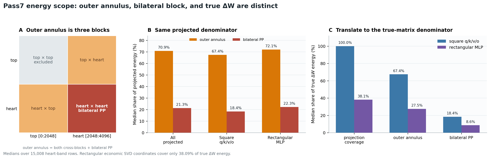
图 1. 15,008 个有效矩阵行上的能量份额中位数。A 示意后半外环由两个交叉块与后半双侧块组成；B 以经济 SVD 投影能量为分母，分别列出全部投影、方阵 q/k/v/o 与矩形 MLP 的外环与双侧块份额；C 以真实 ΔW 能量为分母，矩形 MLP 的投影只覆盖 38.09%。各面板的分母不同，不能把中位数相乘或相加来还原逐行恒等式。
相邻增量与累积更新可以在同一个 top-1024 双侧核内、用同一分母比较对角谱带的组成。在 14,336 个有效相邻配对上，核内对角带的能量占比均值在相邻增量中为 0.3064，在累积更新中为 0.2878，比值为 1.0646；七类投影的比值在 1.0503 至 1.1000 之间。这个比值只反映 top-1024 核内部的组成。数据里没有逐步更新在全空间的能量，所以看不出逐步更新是否更多地落进这个核。能量分母核对 · 图数据与配对组成
3.3 最末 96 个奇异方向没有捕获富集，MLP 后半区间有相对富集#
一条预先登记的判据检验更新是否借助基座最末 96 个奇异方向。15,008 个有效行中，bottom-96 双侧捕获 lift 大于 2 的行数为 0，最大值为 1.5822，判据不成立。底端奇异向量的转角在近简并谱上会被放大，不能用来代替能量捕获的证据。
在更宽的 [2048:4096] 区间上，三层（L0、L16、L30）的区间表显示 MLP 有相对富集：up、down、gate 的 lift 均值为 2.2199、2.2575、2.3427，注意力投影为 0.4345 至 0.8319。这与 bottom-96 的结果并不矛盾。没有行为消融支持把这个区间看作功能上的捷径。
相邻子空间漂移取累积更新在后半双侧块内的 top-96 左右奇异子空间，衡量它在相邻两个 checkpoint 之间转动了多少：左右两侧各取主角正弦的平均，再对两侧取平均；0 表示子空间不变，1 表示完全正交。14,336 个相邻配对上，漂移的中位数为 0.4878，其中 FFN 为 0.5003，注意力为 0.4780；这些描述量都随训练步共同变化。累积更新的谱也随训练逐渐集中：Math 赛道 v、o 投影参与秩的层均值由 step200 的 317、348 降至 step2000 的 100、121。这些模块差异没有单独的行为消融，不能解释为能力集中。bottom-96 捕获 · 三层区间表 · 谱带漂移
3.4 bf16 改变的坐标在 2⁻⁸ 以下与阈值选择无关#
坐标统计先把权重转为 bf16 再转回 fp32，然后比较哪些坐标与基座不同。直接 mask 的判定条件是 W_t^bf16≠W_base^bf16；阈值 mask 的判定条件是 |W_t−W_base|>η·max(|W_base|,|W_t|)。η 扫描覆盖 32 层×7 类投影×3 条赛道的全部有效 step，共 224 份缓存，得到 146,720 行摘要、300,160 行 overlap、6,720 行行列统计与 3,360 行 Jaccard 统计。
η=10⁻⁴、10⁻³、3.8×10⁻³ 都小于 2⁻⁸=0.00390625。在这三个阈值上，两种 mask 没有任何坐标失配，逐行 changed count 完全相同；坐标统计主表的 29,344 行按 η=10⁻³ 计数，与直接 mask 逐行一致。末步各类投影有 41.45% 至 54.44% 的坐标发生改变，均值为 45.83%。在这一阈值区间内，改变在低幅值坐标上的富集为 2.0401，在高幅值坐标上为 0.0464，在主子空间上为 0.7468，这些数描述的是改变发生在哪里。
η 超过 2⁻⁸ 后，数值开始依赖阈值。η=4×10⁻³ 与 10⁻² 的加权坐标失配率为 0.84% 与 17.95%。以 η=10⁻³ 的 changed count 为基准，这两档阈值下累积比值的中位数为 0.9682 与 0.3116，单步比值为 0.9589 与 0.1764；末步改变密度由 45.83% 降为 44.59% 与 16.91%。七项方向读数在五个 η 上都不变：低幅值 lift 大于 1，高幅值 lift 与主子空间 lift 小于 1，三对跨赛道 Jaccard lift 都大于 1，q 与 k 的改变按行集中，o 的改变按列集中。幅度则明显变化：η=10⁻² 时低幅值 lift 为 4.7720，主子空间 lift 为 0.6384，跨赛道 Jaccard lift 均值为 4.8724；60,032 个 overlap lift 单元中，η=4×10⁻³ 没有单元跨过 1，η=10⁻² 有 5 个。三条赛道在改变位置上的共享以及行列集中，都是坐标层面的描述，没有功能因果证据。
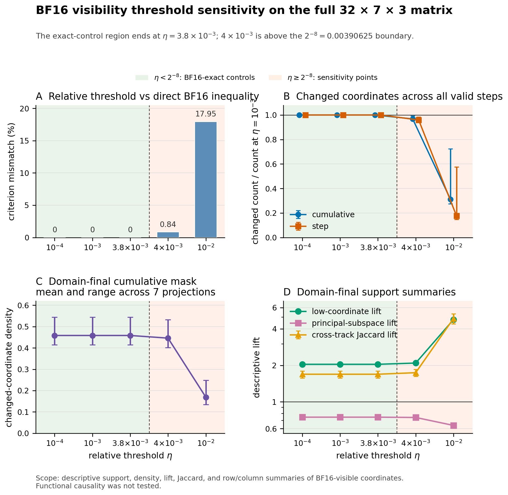
图 2. bf16 相对阈值 η 的敏感性，覆盖 32 层×7 类投影×3 条赛道的全部有效 step。绿色区域的三个 η 低于 2⁻⁸，与直接 bf16 mask 零失配；橙色区域的 4×10⁻³ 与 10⁻² 分别产生 0.84% 与 17.95% 的加权失配。A 为失配率；B 为相对 η=10⁻³ 的 changed count 比值，须线为逐行最小与最大值；C 为末步累积 mask 的改变密度，须线为 7 类投影均值的范围；D 为低幅值、主子空间与跨赛道 Jaccard lift。聚合方向不翻转并不代表幅度稳定；坐标统计也不能建立功能因果。
η 扫描图数据 · 扫描汇总 · 坐标统计主表
4. 累积轨迹低维，留出预测失败#
4.1 累积更新有明显的时间主方向，相邻增量没有#
672 个权重配置上，累积轨迹时间 Gram 的 EVR1 均值为 0.7346，EVR5 为 0.8988，累积变化有明显的时间主方向。相邻增量序列的 EVR1 只有 0.1063，缺少单一稳定的时间方向。单个累积矩阵的谱仍较分散，参与秩在 15,008 个有效行上的均值约为 376。增量序列没有与匹配的随机对照比较，EVR1 低不说明增量是随机噪声。
RELEX 用前 50% 的有效 checkpoint 估计 rank-1 时间方向，再把它的系数线性外推到末步。在 672 个配置上，预测与真实末步累积更新的余弦均值为 0.5625，相对误差均值为 0.9820：方向部分正确，误差的范数却接近更新本身。前缀上拟合的线性度高，不保证对未来的误差小。
截断秩会改变依赖 rank-K 因子的统计量的绝对值。以相邻增量余弦的一个代理量为例，它由 rank-K 累积交叉项与全秩累积范数组成，在 FFN 上从 K=256 时的 0.2981 变为 K=1024 时的 0.4925；配置之间的排序则保持不变。轨迹指标 · 汇总数值
4.2 幅度按经验幂律增长，前 10 点预测末 5 点几乎全部失败#
留出实验先由 top-512 累积 Gram 的完整有效轨迹求 PC1 系数 c₁(t)=√λ₁·v₁(t)，再在前 10 个 checkpoint 上以真实训练步号拟合带截距的 OLS c₁=a+bt，并在最后 5 个 checkpoint 上计算 R²；中间的 checkpoint 既不参与拟合，也不参与评估。PC1 方向来自全轨迹，所以这是已知方向条件下的系数留出，不是严格的前缀预测。PC1 系数、总更新范数与相邻累积子空间的旋转率各自对训练步拟合幂律，三个指数不能互相换算。
| 赛道 | PC1 系数幂指数中位数 | 总更新范数幂指数中位数 | 旋转率幂指数中位数 | 前 10 点预测末 5 点 R²<0 |
|---|---|---|---|---|
| Math | 1.2896 | 0.6752 | −0.4753 | 98.21% |
| Code | 1.4617 | 0.7493 | −0.5206 | 100.00% |
| Mix | 1.3976 | 0.7234 | −0.4515 | 99.55% |
表中每个赛道有 224 个配置。三条赛道 PC1 系数的样本内线性 R² 中位数为 0.9885、0.9539、0.9753，同一对象用前 10 点预测末 5 点的留出 R² 中位数则为 −2.9342、−154.8067、−34.6452。负 R² 表示预测的平方误差大于直接用留出区间均值作预测；留出区间的变化范围窄，会放大负值的绝对大小，因此这里只读符号与比例，相对误差口径见 4.3 节。旋转率指数约为 −0.45 至 −0.52，是观测区间内的经验斜率。第 6 节外推使用的幅度函数（线性或 √step）也是经验选择，不由这些指数推出。
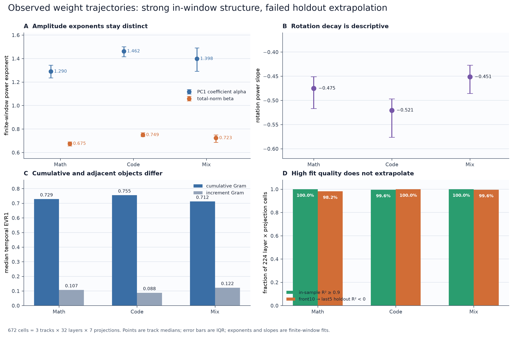
图 3. 672 个权重配置的轨迹与预测读数。A 为 PC1 系数与总更新范数的幂指数，B 为相邻累积子空间旋转率的幂指数，点为赛道中位数，须线为四分位区间；C 为赛道内累积与增量时间 Gram 的 EVR1 中位数，与正文 0.7346 的总体均值是不同聚合；D 比较样本内 R²≥0.9 的配置比例与前 10 点预测末 5 点 R²<0 的配置比例。PC1 方向取自全轨迹，含未来信息。
672 配置幂指数 · 赛道中位数 · 留出 R²
4.3 只用窗口内信息估计方向时，短程误差中位数升高约 1.9 至 5.4 倍#
短程预测用相对误差 u 衡量：对每个配置，在以 t 结尾的 m 个 checkpoint 上用 OLS 拟合 c₁ 对训练步的直线，预测随后 n 个 checkpoint，u 为残差均方根除以 |c₁(t)|。
主要的 u 表用整条轨迹求 PC1，方向已包含未来 checkpoint 的信息，由它定出的跳步放行率与违规率只能作为已知方向条件下的回顾性校准。在这种全轨迹方向下，Math、Code、Mix 的 u 中位数为 0.0520、0.1175、0.1373；只用窗口内信息估计 PC1 时，升至 0.2829、0.2242、0.3297。两张表各含 406,112 个配置×t×m×n 组合。
Code 赛道 step1600 附近有跨模块的子空间旋转尖峰，不能只归因于某个 FFN 局部。这类旋转突增可以只用当时已有的数据检测。现有实验没有在真实训练中验证跳步、重新训练或功能保持，权重系数的回放不能当作可部署的训练加速方案。全轨迹方向的 u · 窗口内方向的 u
5. 旋转与拉伸：Q/H 分解与 OFT 随机对照#
5.1 左右帧分离接近随机参考，非正规性高于高斯参考#
对累积更新做右极分解 ΔW=QH，Q 为正交或部分等距因子，H 为对称半正定因子。单个更新的左右奇异帧分离与跨 checkpoint 的 Q 相似性是两个不同的统计量。
在 8,576 个方阵投影行上，top-96 左右帧分离这一代理量的中位数为 0.9882，与同维 Haar 随机参考 √(1−96/4096)=0.9882 相同。完整更新的非正规性中位数为 0.1101，高于同形状高斯矩阵的 0.0312，说明 Q 与 H 不可交换；这可以作为结构描述，但本身不能识别训练机制。非正规性统计 · 逐步极分解指标 · 随机参考
5.2 已知目标拉伸时冻结旋转有明显损失，这是 oracle 诊断#
固定前缀末端的 Q，同时代入目标步真实的 H，就能测出在已知目标拉伸时冻结旋转会损失多少。前缀取 50%（按有效 checkpoint 个数，即 Math step1000、Code step1700、Mix step500），对前缀之后的每个真实 checkpoint 各评价一次：672 个配置，每个配置 10 至 13 个目标步（Math 与 Mix 各 10 个，Code 13 个），共 7,392 次评价；目标与误差分母都是 rank-512 累积更新。若代入目标步自身的 Q，重构与目标完全相同（余弦为 1，相对误差为 0），所以下表与这一基线的差距就是冻结 Q 的损失。
| 赛道 | 余弦均值 | 相对误差均值 |
|---|---|---|
| Math | 0.7895 | 0.6091 |
| Code | 0.8582 | 0.5019 |
| Mix | 0.7209 | 0.6912 |
按赛道×投影分成 21 组，余弦均值在 0.6732（Mix gate_proj）至 0.8823（Code down_proj）之间。由于 H 来自目标，这些数不能用来与只看前缀的外推方法比较预测能力。
在 63 条子集轨迹（3 个赛道×L0、L16、L30×7 类投影）上，再用包含目标点的完整 Q 轨迹学习 PCA 模态。同一子集上，冻结 Q 的余弦均值为 0.8056、相对误差为 0.5760；取 3 个模态时为 0.9635 与 0.2686，取 5 个模态时为 0.9710 与 0.2394。这一重构同时用了目标 H 与含目标的时间基，只说明样本内可压缩。5 个模态的累计时间方差份额均值为 0.6044，其余约四成时间方差落在这 5 个模态之外。
若换 Q 后对 H 做不受限的逐元素 OLS，方阵投影上的 Q 会在构造中代数消去；矩形 MLP 上换 Q 则同时改变保留的子空间与 H 的拟合。因此 qh 系列方法（例如 qh_elem 与 qh_extrapQ）之间的功能差异，不能直接解释为只改变 Q 的因果效果。
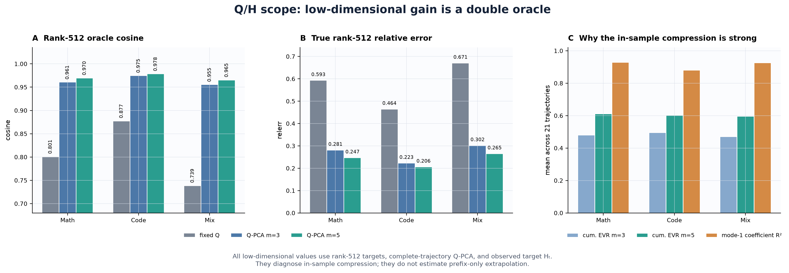
图 4. Q/H 重构的信息边界。A、B 为 63 条子集轨迹（每个赛道 21 条）上冻结 Q 与 Q-PCA 低维重构（m=3、m=5）的 rank-512 余弦与相对误差；C 为 3 个与 5 个模态的累计时间方差份额，以及首模态系数的线性 R²。低维 Q 使用含目标的完整轨迹 PCA 与目标步真实 H，属于 oracle 条件，只诊断样本内压缩，不估计只看前缀的外推。
逐目标步冻结 Q 重构 · 分组汇总 · 低维 Q 重构 · 低维 Q 方差份额
5.3 相邻 Q 在观测窗内持久，有限目标 Q 预测不胜冻结 Q#
相邻 checkpoint 的极因子 Q 之间的余弦在有限观测窗内有持久性。把每条相邻 Q 余弦序列最后三分之一的均值记为 late 段读数，它在后半双侧带上的中位数为 Math 0.7214、Code 0.7757、Mix 0.7119。对 672 个配置×{全谱、后半双侧带}共 1,344 条相邻 Q 余弦序列拟合指数饱和曲线得到时标 τ_cos，再与线性模型比较 AICc 和时间向前的留出误差：
| 赛道与谱带 | τ_cos 中位数（训练步） | AICc 偏好指数（ΔAICc>2） | 向前留出指数更优 |
|---|---|---|---|
| Math 全谱 | 519 | 224/224 | 224/224 |
| Math 后半双侧带 | 535 | 224/224 | 224/224 |
| Code 全谱 | 1,973 | 165/224 | 224/224 |
| Code 后半双侧带 | 3,172 | 0/224 | 223/224 |
| Mix 全谱 | 831 | 138/224 | 119/224 |
| Mix 后半双侧带 | 713 | 129/224 | 44/224 |
Code 后半双侧带上两种诊断相互冲突；Mix 后半双侧带的多数留出结果不利于指数模型。τ_cos 是标量相邻相似度在观测窗内的拟合时标，不等于矩阵 Q 的极限方向或状态时标。
有限目标 Q 预测在前缀的 Q 序列上做 Q-PCA，以 τ_Q=τ_cos 或 2τ_cos 为时标，把 Q 外推到有限距离的目标步。冻结臂与预测臂共用一份系数矩阵，它由前缀末端 Q 基中的逐元素 OLS 得到，不是逐步真实极分解的 H，也不要求对称半正定；在方阵投影上，冻结臂与对 ΔW 直接做逐元素 OLS 相同。在 63 个配置（3 个赛道×L0、L16、L30×7 类投影）的 p50 与 p80 上，预测臂余弦高于冻结 Q 的配置在两种时标下都是 0/63，中位差为 p50 −0.0200 与 −0.0363、p80 −0.0111 与 −0.0132；p20 的拟合点不足，63/63 回退到冻结 Q。只看时标拟合可用的子集，结论相同。这一结果否定了这套 Q 预测构造的增益，但不排除其他旋转模型；这套构造也没有对应的功能 rollout。
在 late 段相邻 Q 余弦与配置特征的赛道内 Spearman 相关中，冻结 Q 的 oracle 余弦在 Math、Code、Mix 上为 +0.4768、+0.2986、+0.1012（Mix 的 p=0.1297），层深在三个赛道上都为正（+0.4523、+0.4048、+0.3994）。Mix 组内另有三项较强的相关：累积轨迹 EVR1 为 −0.6111，非正规性为 −0.5750（128 个方阵配置），ΔW 条件数为 −0.5275。轨迹 EVR1 与 late 段相邻 Q 余弦在三个赛道合池后的 ρ 为 +0.4619，与 Mix 组内的 −0.6111 符号相反。以上赛道内关联不说明因果驱动。
这些条件的 Q 与 H 来源不同，能评价的问题也不同：
| 条件 | Q 来自哪里 | H 或系数来自哪里 | 可评价什么 |
|---|---|---|---|
| 冻结 Q（oracle） | 前缀末端 | 目标步真实 top-512 H | 已知目标拉伸时的冻结损失 |
| 5 模态 Q（oracle） | 含目标的完整 Q 轨迹 | 目标步真实 H | 样本内压缩表达能力 |
| 有限目标 Q 预测 | 仅前缀 Q 序列 | 一份共用的前缀 OLS 系数 | 这套构造相对冻结 Q 的权重预测差 |
| AIME 方向替换 | 指定的后续步，可能就是目标步 | 指定的幅度构造 | 含未来信息的功能干预 |
| 前缀 sqrt 配方 | 前缀末端方向 | 前缀幅度拟合 | 同协议的前瞻方法对照 |
相邻 Q 时标拟合 · 有限目标 Q 预测 · 赛道内相关 · 相关特征表
5.4 OFT 式拟合的超额很小，heart 方向随随机对照的构造翻转#
OFT（orthogonal fine-tuning，正交微调）式参数化在参考权重的 SVD 坐标中，用两个反对称系数矩阵拟合更新：X≈A_L S+S A_R，ridge 参数为 0.01。这是一种高容量的线性参数化，捕获率高只说明它能拟合数据。
matched-null 面板预先选定 18 个配置：Math、Code、Mix 三条轨迹，L0、L16、L31 三个深度，q_proj 与 down_proj 两类模块。每个配置测量三个更新帧：W0_cum 是首个登记 step 相对初始权重 W0 的累积更新；W0_step 是下一个 step 的增量，仍在 W0 的奇异基中表示；Wtm1_step 把同一步增量放到前一个 checkpoint 的奇异基与谱中。18 个配置×3 个帧构成 54 个 frame-cell。
Gaussian-X null 用同 Frobenius 范数的独立高斯矩阵替换观测更新，保留真实参考谱；permuted-spectrum null 保留观测更新，只打乱参考谱奇异值的位置。每个控制臂抽样 32 次。累积生成元稳定性另与匹配的随机游走比较，随机游走保留每个配置的真实基谱、逐步投影范数序列、轨迹长度、OFT 求解器与 λ=0.01。heart 与 core 的读数取左侧生成元 A_L 在相应谱带上的能量份额，计算它相对同维各向同性反对称矩阵期望份额的富集。
| 读数 | 纳入单位 | 相对 Gaussian-X | 相对 permuted-spectrum | 可支持的解释 |
|---|---|---|---|---|
| captured fraction | 54 个 frame-cell | 54/54 高于全部抽样；中位倍数 1.0297 | 54/54 高于全部抽样；中位倍数 1.0294 | 捕获超额一致，但很小 |
| 左侧 heart [2048:4096) | 45 个非退化 frame-cell | 44/45 低于全部抽样；中位倍数 0.7355 | 45/45 高于全部抽样；中位倍数 1.7866 | heart 方向依赖 null 的构造 |
| 左侧 core [96:1024) | 54 个 frame-cell；倍数用同一 45 单元子集 | 53/54 高于全部抽样；中位倍数 1.5149 | 54/54 高于全部抽样；中位倍数 1.6061 | 局部超额的描述，不是功能机制 |
| 累积生成元稳定性 | 18 个配置 | 匹配随机游走下 18/18 低于全部抽样；中位倍数 0.9182 | 不适用 | 高绝对相似度没有超过随机游走对照 |
heart 的非退化规则要求左侧 Gaussian-X null 的 heart 富集中位数至少为 10⁻³，这排除了三条赛道 L0 q_proj 的 9 个 frame-cell。heart 结果在两种 matched null 之间翻转，不能据此定位训练更新。core 的局部超额没有经过功能干预，右侧的读数也更异质。带 +1 校正的单侧经验秩最小步长为 1/33≈0.0303；表中的“高于或低于全部抽样”是描述性的秩，不是经过多重比较校正的正式显著性。这些结论只覆盖 3 条轨迹×3 个深度×2 类模块的这个面板，不支持 OFT 训练机制或稳定生成元。
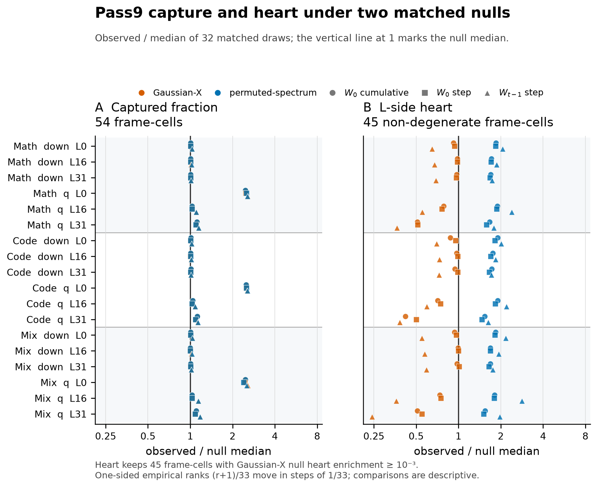
图 5. 18 个配置×3 个更新帧共 54 个 frame-cell，横轴为观测值除以 32 次 matched-null 抽样的中位数，竖线 1 为 null 中位数。A 为 captured fraction，两种 null 下的中位超额都约为 3%；B 为 45 个非退化 frame-cell 的左侧 heart 富集，相对 Gaussian-X（橙）多数低于 null，相对 permuted-spectrum（蓝）全部高于 null。两种 null 是同一面板内的控制臂，不是独立重复。
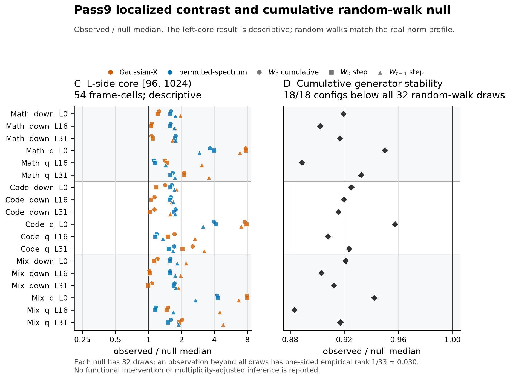
图 6. C 为左侧 core [96,1024) 富集的观测值与 null 中位数之比，54 个 frame-cell 中绝大多数高于两种 null，这是没有功能干预的局部描述；D 为 18 个配置的累积生成元稳定性与匹配随机游走中位数之比，18/18 低于全部 32 次抽样，中位比为 0.9182。该面板不支持 OFT 训练机制或稳定生成元。
面板图数据 · heart 非退化判定 · 面板汇总
6. 外推 checkpoint 的功能#
本节用实际回答评测外推 checkpoint。五种基本外推方法在 Math 与 Mix 的 AIME 网格上共有 40 个方法×前缀点，全部低于对应前缀末端的真实 checkpoint；Code 赛道 12 个外推 label 的 pass@1 与 pass@16 也全部低于前缀末端。在 Math p80 上，把幅度函数由线性换为 sqrt，或换入目标步 step2000 的方向，都能把 AIME pass@16 提到前缀末端与末步的水平，但两种改善不相加。sqrt 配方的 pass@1 仍低于起点，目标步方向则用到了前缀之外的信息；每格只解码一次，点估计也不支持外推优于真实 checkpoint。qh_extrapQ 相对同前缀 qh_elem 的升降随条件改变。多数分数与生成能否在预算内结束纠缠在一起，Code AIME 的高截断格尤其如此。
6.1 各外推方法使用的信息不同#
各方法的构造只作用于 224 个投影矩阵。除 lin_elem 外，各方法都先预测累积更新 ΔW，再加回基座权重；lin_elem 直接对权重回归，这与先预测 ΔW 再加回基座等价。输出层 lm_head 在所有方法中都按同一个逐元素线性回归外推，其余 130 个非投影张量取自前缀末端的真实 checkpoint（2.2 节）。p20、p50、p80、p100 与前缀末端的定义也见 2.2 节。
| 方法 | 构造 | 使用的信息 |
|---|---|---|
| lin_elem | 对更新的每个元素做线性回归 | 已观测前缀 |
| relex_r1、relex_r2 | 学习 1 或 2 个时间 PCA 方向，外推其系数 | 已观测前缀 |
| qh_elem | 固定前缀末端的 Q，在该基中逐元素拟合 H | 已观测前缀；方阵投影上 Q 在构造中代数消去 |
| qh_maglin | 固定更新方向，只线性外推幅度 | 已观测前缀 |
| sqrt 配方 | 保留方向，以 sqrt(step) 为幅度回归自变量；实现为全部冻结的 qh_hybrid（K=4096），gate、up、down 上的幅度序列与 qh_maglin 的定义不同（2.2 节） | 已观测前缀；函数形式为经验选择 |
| qh_hybrid_k | 冻结 H 的前 K 个谱方向，对其余部分外推 | 已观测前缀；K 与幅度配方需分别控制 |
| qh_extrapQ（PCA-Q 外推） | 对前缀各步 Q 的轨迹做时间 PCA，外推模态系数得到目标步的 Q，再在该基中逐元素拟合 H | 已观测前缀；方阵投影上 Q 在构造中代数消去 |
| freeze@step 方向替换 | 保持幅度配方，换入指定训练步的方向 | 方向步晚于前缀末端时用到前缀之外的信息；Math p80 的 freeze2000 用的是目标步方向 |
方向步晚于前缀末端的替换用到了未来信息，只作诊断。前瞻的方法比较只纳入预测时能获得的信息，sqrt 配方按对应前缀的协议评价。
6.2 五种基本方法全部低于前缀末端，起点与末步须同时比较#
6.2 至 6.5 的 AIME 分数来自同一协议与同一生成栈（vLLM 0.22.0，CUDA）：去重后的 90 题，每题 32 个样本，k=16，生成上限 32,768 tokens，协议见 2.3 节。6.2 至 6.5 的差值都由汇总表中四位小数的分数相减得到。在这一协议下，Math 的真实 checkpoint 随训练变好，pass@16 从 step400 的 0.5765 升到末步 step2000 的 0.6311；Mix 在 step500 最高（0.5271），末步降到 0.4519。
lin_elem、relex_r1、relex_r2、qh_elem、qh_maglin 五种方法在两个赛道、四个前缀上的 40 个点全部低于对应前缀末端的真实 checkpoint。差距最小的是 Math p100 的 qh_maglin（0.6177，比 step2000 低 0.0134）与 Mix p80 的 relex_r2（0.4991，比 step800 低 0.0043）。Math p80 上分数最高的是 qh_maglin（0.5390），仍比起点 step1600 的 0.6226 低 0.0836。
Mix 的末步弱于中段，只和末步比较会误读。Mix p80 的五种方法中有四种（0.4807 至 0.4991）高于末步的 0.4519，但五种都低于起点 step800 的 0.5034。两条训练曲线的形状不同，赛道、模板与训练长度也同时不同，所以这些比较只在各自协议内成立，两赛道的差异也不归因于任何单一因素。前缀与末步对照 · Math 逐 label 汇总 · Mix 逐 label 汇总
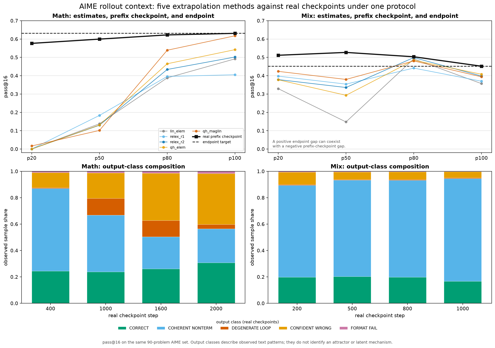
图 7. 上排为 Math 与 Mix 上五种外推方法在 p20 至 p100 的 AIME pass@16，黑线为对应前缀末端的真实 checkpoint，虚线为真实末步。下排为真实 checkpoint 的输出类别构成：正常结束且答对、正常结束但答错、格式失败、撞预算且周期重复、撞预算但没有周期重复。分数都是 90 题全量聚合，每点一次解码，没有区间估计。qh_extrapQ 来自另一批生成，结果见 6.6。
6.3 方向与幅度干预各自检验一个问题#
围绕 Math p80 的 qh_maglin（固定前缀末端的方向，线性外推幅度）做了五组分析。
| 分析 | 设计 | 主要结果 | 解释 |
|---|---|---|---|
| 方向偏离度 | 计算冻结方向与目标步方向的距离 S，与各前缀的分数对照 | S 在 p20、p50、p80、p100 依次为 0.7324、0.6130、0.4765、0；qh_maglin 的 pass@16 依次为 0.0168、0.1016、0.5390、0.6177 | 四点完全反序；相关只提出假设，不单独识别因果 |
| 方向来源替换 | Math p80 保留线性幅度配方，方向分别取 step1600、1800、2000 | pass@16 依次为 0.5390、0.5531、0.6429 | step1800 与 step2000 超出前缀，step2000 即目标步方向；较晚的方向能改善这套构造 |
| 漏解题分解 | 在 90 题上拆解 qh_maglin p80 相对目标步的漏解 | 目标步能解而外推未解的 13 题中，6 题起点也未解，7 题是起点能解、外推后失去 | 只描述这一个构造的失败集 |
| 冻结谱方向数 K | p80 下对 32 层×7 类投影逐矩阵冻结 H 的前 K 个谱方向，其余部分外推 | K96、K1024、K2048 的 pass@16 为 0.5310、0.5491、0.5051；全部冻结（qh_maglin）为 0.5390 | 非单调，没有得到可普遍使用的 K 选择法 |
| 幅度时间函数 | 方向固定为 step1600，把幅度回归自变量由 step 换为 sqrt(step)；gate、up、down 上的幅度序列定义同时改变（6.8 节） | pass@16 由 0.5390 升到 0.6485（+0.1095） | 随条件变化的经验性收益；不说明真实训练幅度服从 sqrt |
方向来源替换与幅度时间函数得到的 0.6429、0.6485 都接近末步 step2000 的 0.6311。每格只有一次解码，本文不据此下等效、优于或不劣于的结论。pass@16 上超过起点的结果在 pass@1 上不成立：sqrt 配方的 pass@1 为 0.2503，高于线性的 0.2024，但仍低于起点的 0.2611 与末步的 0.3073。p100 外推到没有真实权重的 step2500，真实末步不能当作它的真值。
方向偏离度里的方向指归一化 H 的形状，不是极分解的 Q：S=‖H_pre/‖H_pre‖_F − H_target/‖H_target‖_F‖_F，H_pre 与 H_target 分别取前缀末端与目标步，在 Math 的 L0、L8、L16、L24、L30 五层×7 类投影上取均值。S 只取决于前缀，所有方法共用同一组 S。qh_maglin 的完全反序只有 4 个点，其中 p100 的 S=0 是因为它用的就是末步自身的方向。
漏解题分解逐题比较目标步、qh_maglin p80 与起点 step1600 在 90 题上的结果，某题在 32 次采样中至少答对 1 次即算能解：目标步能解 62 题，外推 54 题，起点 63 题。这一分解只描述 qh_maglin p80 这一个构造。方向偏离度逐投影表 · 方向来源与 K 扫描 · 干预实验汇总 · 90 题解题重叠
6.4 方向与幅度两种改善不相加#
把方向来源与幅度函数交叉列出，可以直接看到交互。
| Math p80 的方向来源 | linear pass@16 | sqrt pass@16 | sqrt−linear |
|---|---|---|---|
| step1600，前缀末端 | 0.5390 | 0.6485 | +0.1095 |
| step1800，超出前缀 | 0.5531 | 0.5947 | +0.0416 |
| step2000，目标步 | 0.6429 | 0.6406 | −0.0023 |
方向来源越晚，sqrt 相对 linear 的收益越小；目标步方向与前缀末端方向的两个差值之差为 −0.1118。这只是聚合分数上的条件交互：每格一次解码，没有区间估计，不足以支撑动力学解释。方向×幅度六格
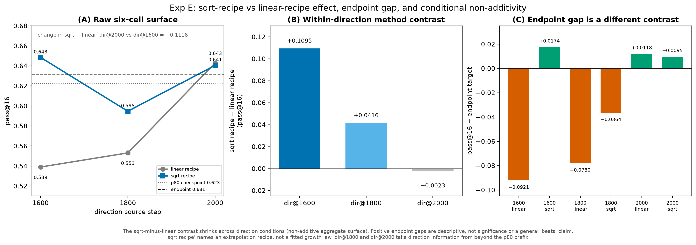
图 8. Math p80 上方向来源（step1600、1800、2000）与幅度配方（linear、sqrt）的六格 AIME pass@16。A 为六格分数，点线与虚线分别为起点 step1600（0.6226）与末步（0.6311）；B 为同一方向下 sqrt 减 linear（+0.1095、+0.0416、−0.0023）；C 为各格减末步的差。step1800 与 step2000 的方向超出前缀，属于含未来信息的诊断。sqrt 是经验外推配方，和第 4 节实测的幅度增长是两回事。
Math 的 p50 与 p100 也评测了 sqrt 配方，方向取各自的前缀末端。各前缀条件都用解码 seed 0、每格解码一次，彼此不是独立随机种子的重复。
| Math 前缀 | sqrt pass@16 | linear pass@16 | 前缀末端真实 checkpoint |
|---|---|---|---|
| p50 | 0.4652 | 0.1016 | 0.5997 |
| p80 | 0.6485 | 0.5390 | 0.6226 |
| p100 | 0.6370 | 0.6177 | 0.6311 |
三个前缀上 sqrt 都高于 linear，差值随前缀变晚由 +0.3636 缩小到 +0.1095 与 +0.0193。与前缀末端的真实 checkpoint 相比，p80 与 p100 的 sqrt 分数高 0.0259 与 0.0059（p100 的目标 step2500 没有真实 checkpoint），p50 低 0.1345。这些差值没有区间估计，不支持优于真实 checkpoint 的结论。量级上可以参照跨批差：同一个 qh_elem 构造在 6.2 与 6.6 两批生成中的 pass@16 相差 0.0301（Math p80）与 0.0108（Mix p80），见 6.8 节；+0.0259 与 +0.0059 都小于 Math p80 的这一跨批差。
Mix p80 只用前缀信息时，sqrt 配方为 0.5048，比起点 step800 的 0.5034 高 0.0014，小于 Mix p80 的跨批差 0.0108；同方向的 linear 为 0.4807。在 qh_maglin 的 linear 配方下把方向换成 step500、900、1000，pass@16 依次为 0.4191、0.4890、0.4457，其中 900 与 1000 超出了 p80 已知的信息。Mix 的方向来源与分数没有单调关系，Math 上较晚方向的收益不能推广成适用于所有赛道的策略。干预实验汇总 · Mix 逐 label 汇总
6.5 文本失败模式描述输出，不观测内部状态#
样本按结束方式与内容分为五类：正常结束且答对、正常结束但答错、格式失败、撞预算且出现周期重复、撞预算但没有周期重复。周期重复用可操作的文本规则检测，例如反复出现 “Wait, no.”。
Math p80 的外推比真实 checkpoint 更常陷入周期重复。lin_elem、relex_r1、relex_r2、qh_elem 撞预算且周期重复的样本比例为 0.3823 至 0.5139，qh_maglin 为 0.2382，起点 step1600 为 0.1236，末步为 0.0326。qh_maglin 保留了更多正常结束并给出答案的样本：答对与答错合计 0.5545，其余四种为 0.3205 至 0.4306，起点为 0.6198。Mix 的真实 checkpoint 主要的失败是撞预算但没有周期重复，占 0.6958 至 0.7781，周期重复只占 0.0045 至 0.0066。
换方向或幅度配方都会改变这些比例。Math p80 的方向换成 step2000（linear）后，周期重复降到 0.0455；方向不变、改用 sqrt 配方时为 0.1573。这些类别只描述输出文本，判断不了模型是否已经得到答案，也判断不了知识是否丢失。真实 checkpoint 输出类别 · Math 逐 label 汇总 · 干预实验汇总
6.6 qh_extrapQ 与同前缀 qh_elem 的差异方向随条件改变#
qh_extrapQ 对前缀各步的 Q 做时间 PCA（至多 5 个模态），外推模态系数，组合出目标步的 Q 并正交化，再在这个 Q 基中逐元素拟合并外推 H。模态系数与对应的特征向量成对相乘，所以重构与特征向量的符号选择无关。比较对象是相同赛道、相同前缀（p20、p50、p80）的 qh_elem：它固定前缀末端的 Q，在该基中逐元素拟合 H。在 q、k、v、o 四类方阵投影上，满秩正交的 Q 在构造中代数消去，两臂的预测都化为对更新逐元素做线性回归；差异在代数上只来自 gate、up、down 三类矩形投影，那里保留的子空间与 H 的拟合同时改变。在 L0、L16、L31 上比较两臂保存的 bf16 权重，方阵投影的相对 Frobenius 差为 4.19×10⁻⁶ 至 3.82×10⁻⁴，全部小于矩形投影的 7.62×10⁻⁴ 至 3.63×10⁻³。因此这组配对比较的是两种复合构造的功能，识别不了 Q 本身的作用。本节只有生成评测，没有隐状态几何前向。两臂权重差抽查
AIME 有 Math、Mix×p20、p50、p80 共 6 个配对条件。每个条件两臂各 90 题×32 样本=2,880 个样本，k=16，生成上限 32,768 tokens，按 90 题全集评分。qh_extrapQ 减 qh_elem 的 pass@1 为 3 正 3 负，pass@16 为 4 正 2 负；表中差值按未舍入的分数计算。qh_elem Math p50 有 3/2,880 个样本达到 262,144 字符的存储上限，按 2,880 的分母计错，所以该格 qh_elem 的分数是保守下界，表中该格的正差相应是完整差值的上界。撞上限比例指生成达到 32,768 tokens（finish_reason="length"）的样本比例，与存储上限是两回事。
| 配对条件 | pass@1：qh_elem → qh_extrapQ（差） | pass@16：qh_elem → qh_extrapQ（差） | 撞上限比例：qh_elem → qh_extrapQ |
|---|---|---|---|
| Math p20 | 0.0000 → 0.0003（+0.0003） | 0.0000 → 0.0056（+0.0056） | 0.9976 → 0.9892 |
| Math p50（qh_elem 为保守下界） | 0.0236 → 0.0465（+0.0229） | 0.1441 → 0.2582（+0.1141） | 0.8913 → 0.8076 |
| Math p80 | 0.1455 → 0.1108（−0.0347） | 0.4953 → 0.4200（−0.0753） | 0.5549 → 0.6208 |
| Mix p20 | 0.1361 → 0.1625（+0.0264） | 0.3258 → 0.4008（+0.0750） | 0.8135 → 0.7806 |
| Mix p50 | 0.0819 → 0.0503（−0.0316） | 0.2987 → 0.2633（−0.0354） | 0.7767 → 0.5399 |
| Mix p80 | 0.1872 → 0.1788（−0.0083） | 0.4737 → 0.4751（+0.0014） | 0.7545 → 0.7243 |
同一个前缀比例在两个赛道上的差值方向不一定相同：p50 的 pass@16 差在 Math 上为 +0.1141，在 Mix 上为 −0.0354；pass@1 的差在 p20 两个赛道都为正，在 p80 都为负。撞上限比例要和分数一起读：Math p20 两臂都有约 99% 的样本撞上限；Mix p50 的 qh_extrapQ 撞上限比例比 qh_elem 低 0.2368，pass@1 与 pass@16 却同时下降。按题面是否与 Dolci-RL-Zero-Math-7B 训练集逐字重合分为两层：71 题层在 6 个条件上的 pass@1 与 pass@16 差都与 90 题全集同号；19 题层中 Math p20 两臂都为 0，Mix p80 的 pass@16 差为 −0.0058，与全集的 +0.0014 反号，其余同号。90 题全集与两层的分数
clean3 用 MATH-500、GSM8K、HumanEval 三个任务，按题目 UID 精确配对，n=k=8，6 个前缀条件×3 个任务共 18 个配对格。每个条件三个任务的分母依次为 500 题×8=4,000、1,319 题×8=10,552、164 题×8=1,312 个样本，生成上限依次为 6,144、5,120、2,048 tokens。production 口径下，pass@1 与 pass@8 都是 9 正 9 负。另两种登记口径（suite 与 conflict-excluded）的结果保存在同一评分表中，没有按结果大小挑选口径。下表为逐格的 pass@1 差（qh_extrapQ 减 qh_elem）。
| 前缀条件 | MATH-500 | GSM8K | HumanEval |
|---|---|---|---|
| Math p20 | +0.0035 | +0.0047 | −0.0008 |
| Math p50 | +0.0860 | +0.0871 | +0.0076 |
| Math p80 | −0.0518 | −0.0562 | −0.0267 |
| Mix p20 | +0.0173 | +0.0412 | +0.0899 |
| Mix p50 | −0.1178 | −0.0946 | +0.0221 |
| Mix p80 | −0.1348 | −0.2974 | −0.0968 |
表中正负号是点估计。按题目配对重抽样 10,000 次（seed 20260930）得到 95% 区间：pass@1 有 7 个正差与 8 个负差的区间不含零，另 3 个区间含零，都在 HumanEval（Math p20、Math p50、Mix p50）；pass@8 有 5 个正差与 7 个负差的区间不含零，另 6 个区间包含或触及零。这些区间没有做多重比较校正。Math p20 的三个任务两臂都有 0.9915 至 0.9997 的样本撞上限，所以正差不代表正常收尾时的解题收益。Mix p50 与 Mix p80 在 MATH-500 与 GSM8K 上分数下降，同时输出变短：Mix p50 的平均生成长度在 MATH-500 上由 2,100 降到 866 tokens，在 GSM8K 上由 711 降到 235 tokens。只看撞上限比例下降会误判这些格。配对格数据 · clean3 逐格 bootstrap 区间 · 全部登记评分口径 · 存储上限样本
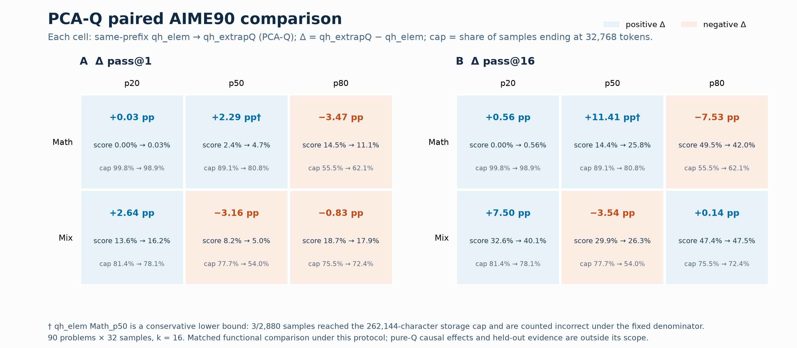
图 9. AIME 六个配对条件，每格两臂各 90 题×32 样本、k=16，生成上限 32,768 tokens。每格的粗体数为 qh_extrapQ 减同前缀 qh_elem 的差，以百分点标注；其下依次为两臂的分数与撞上限比例，以百分数标注。左为 pass@1，右为 pass@16。Math p50 的 qh_elem 有 3 个样本达到存储上限并按错计，其分数为保守下界。
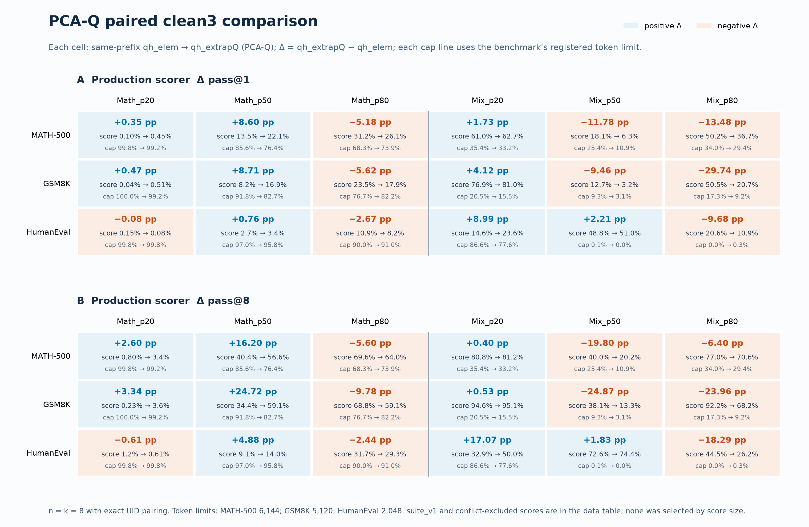
图 10. clean3 十八个配对格，两臂均为 n=k=8，MATH-500、GSM8K、HumanEval 的生成上限分别为 6,144、5,120、2,048 tokens。上为 pass@1，下为 pass@8，都按 production 口径；差值以百分点标注，分数与撞上限比例以百分数标注。升降各半，这组配对识别不了 Q 本身的作用。
6.7 Code 赛道 AIME：12 个外推 label 全部低于前缀末端，分数随截断大幅变化#
Code AIME 覆盖 16 个 checkpoint label：4 个真实 checkpoint，以及 qh_elem、qh_maglin、relex_r2 在 p20、p50、p80、p100 上的 12 个外推构造。每个 label 有 90 题×32 样本=2,880 个样本，k=16，生成上限 32,768 tokens，合计 46,080 个样本，全部用同一个 thinking-first boxed-integer parser 从保存的全文评分。14 个 cell 记录为 seed 0、thinking 模板；relex_r2 的 p80 与 p100 两个 cell 没有记录 seed 与模板，温度、top_p、每题样本数与生成上限和其余 cell 相同。本节只有生成评测，没有隐状态几何前向。
Code 的有效 checkpoint 从 step400 到 step3000，每 100 步一个，共 27 个。p20、p50、p80 按有效 checkpoint 的个数取前 5、14、22 个，前缀末端依次为 step800、step1700、step2500，目标为 step3000；p100 用全部 27 个有效 checkpoint，外推到没有真实权重的 step3750。
五个 label 共有 15 个样本达到 262,144 字符的存储上限。登记的保守规则把它们计错，所以这五个 label 的两列分数都是保守下界；若直接删除这些样本，pass@1 最多改变 0.0003，pass@16 最多改变 0.0002。六个 label 至少一半的样本以 finish_reason="length" 撞到 32,768-token 上限。分数可以在这套固定协议内比较，但 checkpoint 之间的差异不能解释为与生成预算无关的能力差异。
下表逐项列出 16 个 label。pass@1 是 2,880 个样本的正确率，pass@16 是逐题无偏估计 1−C(32−c,16)/C(32,16) 的 90 题均值；撞上限比例是生成达到 32,768 tokens 的样本比例。“seed 与模板”列标出生成记录中有没有这两项。
| checkpoint label | seed 与模板 | pass@1 | pass@16 | 撞上限比例（样本数） | 存储截存样本 |
|---|---|---|---|---|---|
| 官方 step800，p20 前缀末端 | 已记录 | 0.1969 | 0.5164 | 0.6837（1,969） | 0 |
| 官方 step1700，p50 前缀末端 | 已记录 | 0.2549 | 0.5708 | 0.2472（712） | 0 |
| 官方 step2500，p80 前缀末端 | 已记录 | 0.2788 | 0.6232 | 0.1160（334） | 0 |
| 官方 step3000，末步与 p100 前缀末端 | 已记录 | 0.2993 | 0.6572 | 0.0875（252） | 0 |
| qh_elem p20 | 已记录 | 0.0212 | 0.1058 | 0.9646（2,778） | 1 |
| qh_elem p50 | 已记录 | 0.1118 | 0.3315 | 0.5153（1,484） | 8 |
| qh_elem p80 | 已记录 | 0.2604 | 0.5449 | 0.0639（184） | 0 |
| qh_elem p100 | 已记录 | 0.2625 | 0.5170 | 0.0438（126） | 0 |
| qh_maglin p20 | 已记录 | 0.1021 | 0.3073 | 0.7885（2,271） | 0 |
| qh_maglin p50 | 已记录 | 0.2288 | 0.4887 | 0.0944（272） | 0 |
| qh_maglin p80 | 已记录 | 0.2660 | 0.5479 | 0.0847（244） | 1 |
| qh_maglin p100 | 已记录 | 0.2472 | 0.5554 | 0.2319（668） | 2 |
| relex_r2 p20 | 已记录 | 0.0323 | 0.1377 | 0.9514（2,740） | 0 |
| relex_r2 p50 | 已记录 | 0.0823 | 0.2326 | 0.5903（1,700） | 3 |
| relex_r2 p80 | 未记录 | 0.2458 | 0.5334 | 0.0736（212） | 不适用 |
| relex_r2 p100 | 未记录 | 0.2424 | 0.4806 | 0.0472（136） | 不适用 |
四个真实 checkpoint 随训练步单调变好：pass@1 从 step800 的 0.1969 升到 step3000 的 0.2993，pass@16 从 0.5164 升到 0.6572，撞上限比例从 0.6837 降到 0.0875。12 个外推 label 的 pass@1 与 pass@16 都低于各自前缀末端的真实 checkpoint（12/12）。其中 6 个的撞上限比例比前缀末端还低（p80 的三个、p100 的 qh_elem 与 relex_r2、p50 的 qh_maglin），pass@16 却仍低 0.0754 至 0.1766（差值按未舍入的分数计算），可见这些格的差距不来自更多截断。
撞上限至少一半的六个 label 是官方 step800 与五个外推构造（三个 p20，以及 qh_elem、relex_r2 的 p50）。在 16 个 label 上，撞上限比例与 pass@1 的 Pearson 相关为 −0.9250、Spearman 为 −0.7324，与 pass@16 的 Pearson 相关为 −0.8570。p20 的 qh_elem 与 relex_r2 分别有 0.9646、0.9514 的样本撞上限，只有 0.0347、0.0465 的样本留下可抽取的答案。表中的 pass@k 同时混入了答题质量与生成能否在 32,768 tokens 内结束，高截断格的低分不能读成与预算无关的能力下降。
这张表不能用来给方法排名。表中只有 qh_elem、qh_maglin、relex_r2 三种方法，无法与 Math、Mix 的五方法网格逐方法对照；p80 三种方法的 pass@16 只相差 0.0145，每个 label 只解码一次，本文也没有为这些差值做区间估计。p100 的目标 step3750 没有真实 checkpoint，只能与前缀末端 step3000 比较。relex_r2 p80、p100 没有记录存储上限；它们保存的文本最长 254,163 字符，低于 262,144，截存列记为不适用。逐 label 分数与截断 · 存储截存样本 · relex_r2 两个 cell 的逐题评分
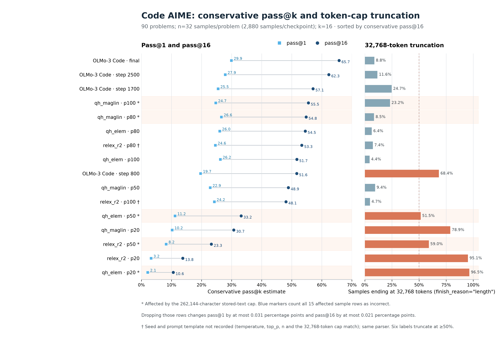
图 11. Code 赛道 16 个 AIME label 按 pass@16 排序，左为 pass@1 与 pass@16，右为生成达到 32,768 tokens 的样本比例。每个 label 2,880 个样本、k=16。星号标出含存储截存样本的五个 label，这 15 个样本按错计；匕首标出 seed 与模板没有记录的两个 relex_r2 cell。六个 label 至少一半的样本撞上限。
6.8 Q、H 与 t 都没有严格的单变量消融#
Q、H 与训练时间 t 各有对照实验，但没有一套同协议实验只改其中一个量、把另外两个严格固定。在 ΔW(t)=Q(t)H(t) 中换一个时间点，通常会同时换掉 Q 与 H；p20、p50、p80 的前缀扫描也同时改变可用数据和估计出的 Q、H。下表按改变的量列出六组最接近单变量的对照。其中两臂共用同一系数矩阵的 Q 对照只在权重重构层面；在功能层面，最接近单变量的是幅度时间函数 linear 对 sqrt。
| 改变的量 | 固定的量 | 比较 | 指标 | 结果 | 出处 | 能推出 / 不能推出 |
|---|---|---|---|---|---|---|
| Q 的预测：冻结前缀末端 Q → 有限目标 Q 预测（前缀 Q 序列的 Q-PCA 加时标外推） | 两臂共用的系数矩阵（前缀末端 Q 基中逐元素回归得到，不是逐步真实极分解的 H）、前缀、目标步 | 63 个配置（3 赛道×L0/L16/L30×7 类投影）×p50/p80×两种 Q 外推时间尺度 | 预测与真实末步 ΔW 的余弦 | 四组都是 0/63 胜冻结 Q；中位差 p50 为 −0.0200/−0.0363，p80 为 −0.0111/−0.0132；p20 为 63/63 回退到冻结 | 5.3 节；data/weight_geometry/derived/tau/pass9_q_gapint_all.csv | 能：这套 Q-PCA 加有限目标外推的构造在权重重构上不胜冻结 Q。不能：没有功能 rollout；共用系数不是逐步真实极分解的 H，方阵上冻结臂等于直接逐元素回归；不排除其他 Q 动力学 |
| Q：前缀末端 Q 代替目标步真实 Q；或用含目标的 5 模态低维 Q | H 取目标步真值（rank-512） | 672 个配置×10 至 13 个目标步，共 7,392 次评价，50% 前缀（Math step1000、Code step1700、Mix step500）；低维 Q 为 63 条轨迹 | rank-512 余弦/相对误差 | 冻结 Q：Math 0.7895/0.6091，Code 0.8582/0.5019，Mix 0.7209/0.6912；63 条轨迹上 0.8056/0.5760 → 0.9710/0.2394（5 模态），5 模态的时间方差份额均值 0.6044 | 5.2 节；data/weight_geometry/derived/fixedq/pass6_fixedq_traj.csv、data/weight_geometry/derived/fixedq/lowdim/q_lowdim_summary.csv | 能：量出已知目标 H 时冻结 Q 的重构损失。不能：目标 H 与完整轨迹 PCA 都含目标信息，属于 oracle，不是前缀预测；不说明 Q 是五维；没有功能 rollout |
| H 的构造：逐元素回归（qh_elem）↔ 冻结 H 方向加标量线性幅度（qh_maglin）↔ 冻结前 K 个谱方向（qh_hybrid_k） | 前缀末端 Q、前缀、线性时间 | Math p80（含 K 扫描）、Mix p80 | AIME pass@16 | Math p80：qh_elem 0.4652，qh_maglin 0.5390，K96/K1024/K2048 为 0.5310/0.5491/0.5051；Mix p80：0.4845 对 0.4807；起点 step1600/step800 为 0.6226/0.5034 | 6.2、6.3；data/functional/aime_grid/tables/ 下的 math_master.tsv、mix_master.tsv、expbde_master.tsv | 能：H 的构造规则会改变功能分数，K 没有单调规律。不能：qh_elem 对 qh_maglin 同时改了 H 形状与幅度规则；每格一次解码，无区间 |
| 幅度的时间函数：linear(t) → sqrt(t) | 前缀末端 Q 与冻结 H 方向、前缀 | Math p50、p80、p100，Mix p80 | AIME pass@16 | Math p80 0.5390 → 0.6485（+0.1095），p50 0.1016 → 0.4652，p100 0.6177 → 0.6370；Mix p80 0.4807 → 0.5048；4/4 个条件 sqrt 更高；Math p80 sqrt 的 pass@1 0.2503 仍低于起点 0.2611 | 6.3、6.4；data/functional/aime_grid/tables/ 下的 expbde_master.tsv、mix_master.tsv | 能：这是功能层最接近单变量的对照。不能：推出真实幅度服从 sqrt（第 4 节的总更新范数指数中位为 0.6752 至 0.7493）；sqrt 臂经 qh_hybrid K=4096 实现，gate/up/down 上的幅度序列取 ‖Q_preᵀΔW_t‖_F，linear 臂取 ‖ΔW_t‖_F，矩形投影上不是严格单变量 |
| 方向来源的训练步（freeze@step） | 幅度配方（linear 或 sqrt）、只用前缀拟合的幅度 | Math p80 的 1600/1800/2000×linear/sqrt；Math p100 的 1600 对 2000；Mix p80 的 500/800/900/1000（linear） | AIME pass@16 | Math p80 linear 0.5390/0.5531/0.6429，sqrt 0.6485/0.5947/0.6406，sqrt−linear +0.1095/+0.0416/−0.0023，差中差 −0.1118；Math p100 0.5352 对 0.6177；Mix p80 0.4191/0.4807/0.4890/0.4457 | 6.3、6.4；data/functional/aime_grid/tables/ 下的 expe_contrasts.csv、expbde_master.tsv、mix_master.tsv | 能：方向来源与幅度配方存在条件交互。不能：换步同时换掉 Q 与冻结的 H 方向，不是只改 t；Math p80 的 1800、2000 与 Mix p80 的 900、1000 用到前缀之外的信息 |
| Q 基：前缀末端 Q → PCA 外推 Q（qh_extrapQ），H 在各自基中拟合 | 前缀、逐元素回归的 H 规则、线性时间 | Math/Mix×p20/p50/p80；AIME 6 个配对条件，clean3 18 个配对格 | AIME pass@1/pass@16；clean3 pass@1/pass@8 | AIME pass@1 3 正 3 负，pass@16 4 正 2 负；clean3 pass@1 与 pass@8 都是 9 正 9 负 | 6.6；data/functional/pcaq_paired/ 下的 paired_cells.csv、clean3_paired_cells.csv | 能：这一复合构造的功能差方向随条件改变。不能：识别 Q 本身的因果作用；方阵投影上 Q 在构造中代数消去，差异来自矩形 MLP，那里保留的子空间与 H 的拟合同时改变 |
六组对照里只有两类读数较干净。两臂共用系数矩阵时，有限目标 Q 预测在 252 次配置比较中没有一次胜过冻结 Q；同一方向下把幅度函数从 linear 换成 sqrt，AIME pass@16 在 4/4 个前缀条件上升高。但前者没有功能读数，后者的实现在矩形投影上还改变了幅度序列的定义，两者都不足以把功能差异归给 Q、H 或 t 中的单独一项。如果把 t 理解为运行时几何的 T_fixed，七窗口 m-grid 是改变测量窗口的实验，不属于权重消融。
表中第 3 至 5 行与 6.2 至 6.5 的 AIME 分数来自同一协议与同一生成栈（vLLM 0.22.0，CUDA）；6.6 的两臂来自另一批生成（vllm-ascend 0.22.1，H910C），评分按各自登记的口径。同一个 qh_elem 构造在两批中的 pass@16 不同：Math p80 为 0.4652 与 0.4953，Mix p80 为 0.4845 与 0.4737，跨节比较时要按各自批次读。表中 0.4652 出现两次，分别是 qh_elem Math p80 与 sqrt 配方 Math p50 的 pass@16，来自两个不同的 checkpoint。Q 预测逐配置表 · 冻结 Q 重构逐配置表 · 低维 Q 汇总 · 方向×幅度六格 · 干预实验汇总 · PCA-Q 配对格
7. 多任务功能与生成预算#
AIME 上的结论在多任务上只部分迁移。在 89 个 checkpoint×8 个 benchmark 的网格中，外推构造在不同任务上的结束行为不同，AIME 的方法排名不能沿用。生成预算提高到 8,192 tokens 后，只有部分 checkpoint 组与任务的 pass@1 区间高于零。MMLU 上的 true pass@1 几乎完全按能否在 3,072-token 上限前结束排序。
7.1 89×8 网格：AIME 上的方法排名不能直接迁移#
多任务网格包含 89 个 checkpoint：8 个官方 checkpoint（Math 为 step400、1000、1600、2000，Mix 为 step200、500、800、1000），以及 81 个外推、K 轴和 freeze 方向构造。按赛道分，Math 有 45 个 label（4 个官方、41 个构造），Mix 有 44 个（4 个官方、40 个构造）。每题 8 个样本，n=k=8，temperature 0.6、top_p 0.95；Math 赛道的 label 用 dapo 模板，Mix 赛道用 thinking 模板。各 benchmark 的题数与生成上限如下。
| benchmark | 题数 | 每题样本 | 生成上限（tokens） | label 数 |
|---|---|---|---|---|
| MATH500 | 500 | 8 | 6,144 | 89 |
| GSM8K | 1,319 | 8 | 5,120 | 89 |
| HumanEval | 164 | 8 | 2,048 | 89 |
| MBPP（标准协议，单独一轮生成） | 257 | 8 | 6,144 | 89 |
| GPQA-main | 448 | 8 | 3,072 | 89 |
| GPQA-diamond | 198 | 8 | 3,072 | 89 |
| BBH | 6,507 | 8 | 1,224 | 89 |
| MMLU（true pass@1） | 7,687 | 8 | 3,072 | 45（Math 赛道） |
MBPP 列使用标准协议，prompt 带测试信息，与第 9 节的标准 MBPP 是同一批生成。89 个 label 中 88 个的保存全文完整；relex_r2 Math_p50 有 2 个样本的保存文本达到 65,536 字符的存储上限，全文没有保留。MMLU 列使用 true pass@1，只覆盖 Math 赛道的 45 个 label，见 7.3。HumanEval 与 MBPP 按单元测试评分；标准 MBPP 与 Code 赛道各任务的自动评分没有人工语义裁决。各列结果齐全只说明生成与聚合完整，说明不了评分语义。标准 MBPP 单个 label 的聚合与协议字段
| 问题 | 结果 | 限制 |
|---|---|---|
| AIME 上的方法排名能否跨任务沿用？ | 同一方法在数学、代码与多选问答上的结束行为不同，起点与末步的排名也随任务改变 | Code 与 MBPP 的自动评分没有人工语义裁决 |
| K 扫描是否给出独立改进？ | K=4096 的条件同时用了 sqrt 幅度配方（K96、K1024、K2048 用线性幅度），方向秩与幅度函数需要拆开看 | 不把复合配置的收益归给 K |
| 方向来源是否越晚越好？ | Math 与 Mix 的训练曲线不同，较晚的方向可能恢复功能，也可能损失功能 | 含未来方向的条件是诊断干预 |
| 多选题的高 pass@8 是否代表推理改善？ | 输出答案的比例、选项偏置、生成预算与多次采样都会改变分数 | 不能仅由高 pass@8 推出知识或推理增益 |
| 前缀能否映射到更晚的“等效训练步”？ | 可以按几何或行为分别构造匹配 | 不同坐标不保证对应同一训练状态 |
| 撞上限比例、短输出比例等单一行为量能否自动选方法？ | 基于单一行为量的选择规则没有稳定优于固定方法 | 没有建立可部署的跨任务方法选择器 |
末段回落探针检验 p80 的无 freeze 外推能否复现真实训练末段的行为变化。从 p80 前缀末端到末步，Math 在 7 个任务上前 2,000 个保存字符内连续两次出现 “Wait, no.”（子串 “Wait, no. Wait, no”）的样本比例下降，Mix 在 5 个任务上短输出（少于 50 tokens）的比例下降。九种无 freeze 外推构造（lin_elem、relex_r1、relex_r2、qh_elem、qh_maglin，以及 K96、K1024、K2048 与 K4096 sqrt）都没有复现这一变化。判据是外推相对前缀末端的变化与真实变化同向，并且超过两倍合并标准误。按此判据，Math 为 0/63（9 种构造×7 个任务），其中 62 格的变化方向相反且超过两倍合并标准误；Mix 为 0/45（9×5），只计真实下降至少 1 个百分点的任务时为 0/36（9×4）。探针不含 MBPP；标准协议的 MBPP 来自单独的一轮生成。这个结论只描述已生成的这些构造。使用更晚方向的 freeze 条件能构造出更接近末步的行为，但它们用到了前缀之外的信息。这些行为量只看保存的前 2,000 个字符，也受模板影响。末段回落探针逐格表
7.2 8,192-token 预算只在部分组与任务上提高 pass@1#
预算对照固定每个任务的前 50 题（first50），按题目 UID 精确配对，比较参考预算与 8,192 tokens 两侧的结果。8,192 tokens 一侧单独生成；参考预算一侧取自全量评测（Code 赛道多任务评测与标准 MBPP）中同样 50 题的结果。每侧每格 50 题×8 样本。Code 赛道有 24 个配对格：4 个官方 checkpoint（step800、1700、2500、3000）与 2 个 qh_elem 外推（p20、p50）各在 HumanEval、GPQA-Diamond、GPQA-Main 与 MBPP 上评测，参考预算依次为 4,096、3,072、3,072、6,144 tokens。Math 赛道的标准 MBPP 另有 8 个配对格，来自 Math 赛道的 4 个官方 checkpoint（step400、1000、1600、2000）与 4 个 lin_elem 外推（p20、p50、p80、p100），比较 6,144 与 8,192 tokens。Code 赛道的 MBPP 与 Math 赛道的标准 MBPP 都是带测试用例的标准协议（模板随赛道不同），但来自不同的 checkpoint 家族与生成批次，因此不合池。两侧用同一个评测脚本与评分口径。配对 bootstrap 对 50 个题目 UID 做 20,000 次重采样，不重采样 checkpoint 集合。十个组级区间（Code 官方组与 qh_elem 组各 4 个任务，加标准 MBPP 的官方组与 lin_elem 组）没有做多重比较校正。
官方 Code 组的 pass@1 在 HumanEval 上升 0.0450（95% 区间 [0.0138, 0.0800]），在 GPQA-Diamond 上升 0.0394（[0.0081, 0.0719]），在 GPQA-Main 上升 0.0644（[0.0294, 0.1000]）；MBPP 的 +0.0213（[−0.0044, 0.0475]）跨零。qh_elem 组的两个 checkpoint 只在 HumanEval 上高于零，为 +0.0338（[0.0038, 0.0638]）。Math 赛道标准 MBPP 的两组 pass@1 区间都跨零：官方组为 −0.0081（[−0.0319, 0.0156]），lin_elem 组为 −0.0019（[−0.0200, 0.0175]）。十个组级 pass@8 区间都包含或触及零。
撞上限比例随预算提高普遍下降，分数变化与它相关但不等同。官方 Code 组在 GPQA-Diamond 与 GPQA-Main 上的撞上限比例由 0.7319、0.6850 降到 0.4294、0.3850，pass@1 只升 0.0394、0.0644；qh_elem 组在 HumanEval 上仍有 0.7475 的样本撞 8,192-token 上限。这些结果只覆盖固定的前 50 题，不能外推到全 benchmark，也不代表统一的能力改善。组级效应 · 32 个配对格 · 逐题配对
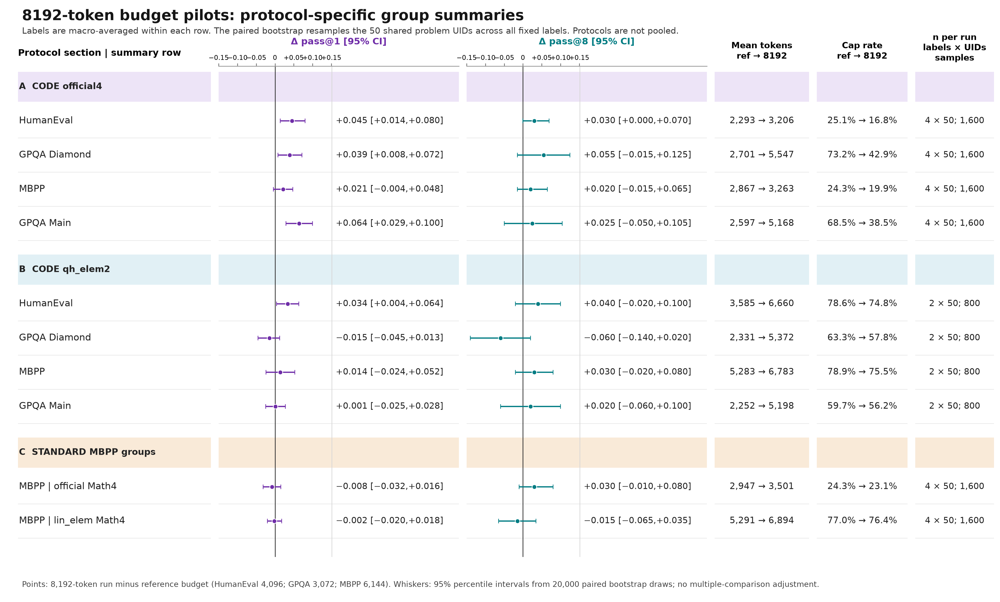
图 12. 8,192-token 预算的配对效应，按 checkpoint 组与 benchmark 汇总。A 为 4 个官方 Code checkpoint，B 为 2 个 Code qh_elem 外推（p20、p50），C 为标准协议 MBPP 上 Math 赛道的 4 个官方 checkpoint 与 4 个 lin_elem 外推。点为 8,192 减参考预算的差，须线为 20,000 次题目配对 bootstrap 的 95% 百分位区间；右侧依次为平均生成长度、撞上限比例（参考预算 → 8,192）与每次生成的样本数。各组不合池。
7.3 MMLU-Math 的 true pass@1 几乎完全按能否在 3,072-token 上限前结束排序#
MMLU-Math 指在 Math 赛道 45 个 label 上评测 MMLU：4 个官方 checkpoint（step400、1000、1600、2000）与 41 个外推或消融构造，即 89×8 网格中属于 Math 赛道的全部 label。题集按学科抽样：每个学科随机取 150 题，不足 150 题的学科全取，抽样由 seed 0 固定。共从 14,015 题中抽出 7,687 题，每个学科都有覆盖。生成用 dapo 模板，n=k=8，temperature 0.6、top_p 0.95、seed 0，生成上限 3,072 tokens；每个 label 7,687 题×8=61,496 个样本，共 2,767,320 个样本。true pass@1 是这些样本按固定的选项抽取规则评分后的正确率。
45 个 label 的 true pass@1 为 0.1648 至 0.7125，中位数 0.5681；pass@8 为 0.5596 至 0.9308，中位数 0.8993。41 个外推或消融构造的 true pass@1 全部低于 4 个官方 checkpoint 中最低的 0.6660，构造中最高的是 0.6637。官方 checkpoint 中，step400 的 true pass@1 最高（0.7125），撞上限比例最低（0.1793）；末步 step2000 分别为 0.6668 与 0.3272。
全部样本中有 1,421,377/2,767,320 以 finish_reason="length" 结束，撞上限比例为 51.36%，各 label 的撞上限比例为 0.1793 至 0.9499。true pass@1 与撞上限比例的 Spearman ρ 为 −0.9506（45 个 label），pass@8 与撞上限比例为 −0.8984。因此这个 true pass@1 不是与预算无关的能力读数：分数差异中有多少来自答题质量、多少来自能否在上限前结束，这组数据分不开。它与隐状态几何的关联见第 8 节。逐 label 聚合与逐题结果在数据包内，逐样本全文留在共享盘，见第 11 节。逐 label 分数与撞上限比例 · 题集与采样参数（单个 label 的聚合）
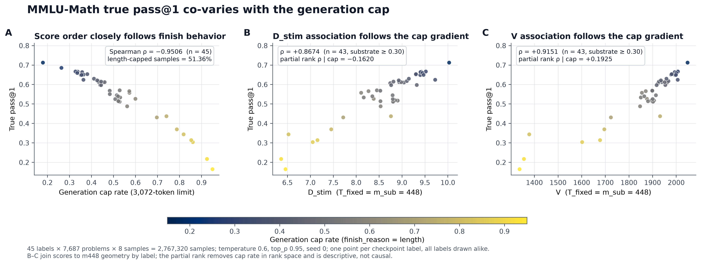
图 13. MMLU-Math 45 个 label 的 true pass@1（7,687 题×8 样本，3,072-token 生成上限）与撞上限比例、m448 几何的关系，每点为一个 label，颜色表示撞上限比例。一类面板是 true pass@1 对撞上限比例（45 个 label，ρ=−0.9506）；另一类面板是 D_stim、V（T_fixed=m_sub=448，m448 cohort）对 true pass@1，相关只用底物≥0.30 的 43 个 label（ρ=+0.8674、+0.9151），扣除撞上限比例后的残差关联为 −0.1620、+0.1925。几何与分数来自不同的生成，只按 label 连接；bootstrap 只在固定 label 内重采样题目。这张图只说明，在 MMLU 上分数和几何都随撞上限比例变化。逐 label 数据
8. 推理隐状态几何：定义、窗口与功能关联#
本节测量推理时隐状态轨迹的几何：先说明四个指标测量什么，再看它们与功能分数的关系。在同一窗口、同一 cohort、底物充足的子集里，D_stim 与 V 能描述外推 checkpoint 的损伤。它们不构成通用的能力轴：排序随窗口、样本准入、结束方式与任务改变，只看官方 checkpoint 时几何与分数的相关很弱，MMLU 上的高相关主要随撞上限比例共变。
8.1 四个指标在固定窗口内测量最后一层的隐状态轨迹#
运行时几何直接使用功能评测保存的 completion，没有另外生成。每条 completion 连同 prompt 输入模型做一次前向，取最后一个 Transformer 层输出的逐 token 隐状态（隐藏宽度 d=4096），再截取 completion 的前 T_fixed 个 token 作为轨迹。因此 D_stim 与 V 需要真实 rollout 和模型前向，不能只从权重得到。
前向时模型参数为 BF16，RoPE 频率表保持 FP32。RoPE 按层设置：OLMo3-7B 的 32 层按 3 个 sliding-attention 层接 1 个 full-attention 层排列，24 个 sliding-attention 层用未缩放 RoPE（θ=500,000），8 个 full-attention 层用 YaRN（factor 8，原始上下文长度 8,192）。复现时要注意工具差异：所核查的 17 个 Transformers 发行版中，5.0.0 至 5.12.1 这 14 个对 OLMo3 的所有层使用 YaRN，4.57.6、5.13.1 与 5.14.1 按层区分；把模型整体转为 BF16 时，RoPE 频率表也会被量化。本文在 Transformers 5.5.4 上按层设置 RoPE；在 3 个随机权重的小型 OLMo3 模型上，这一实现的 FP32 与 BF16 前向都与 5.14.1 逐位一致。按层 RoPE 实现
设去均值后的轨迹矩阵 Z 含 T 个 token 点，隐藏维度 d=4096：
| 指标 | 定义与输入 | 读法 |
|---|---|---|
| D_world | 以固定种子从静态词表嵌入中抽 20,000 行，用 TLE 估计本征维度 | 静态嵌入几何；89 个 label 的取值都在 24.5753 至 24.5768 之间 |
| D_stim | 对 Z 的 T 个点用 TLE 估计本征维度，近邻数 k=20，按 float64 计算 | 同一窗口内隐状态轨迹的局部有效维度 |
| V | ½Σ log(1+dσ_i²/T)，σ_i 为 Z 的奇异值，取自然对数 | 轨迹的谱展开量，随窗口长度增长 |
| H_health | log(D_world)×V/exp(0.1·D_stim) | 固定组合公式，不预设“越高越健康” |
TLE（Tight Local intrinsic dimensionality Estimator）是基于近邻距离的本征维度估计器，本文的实现与 scikit-dimension 0.3.4 的参考实现数值一致。H_health 在数据列中记为 H，与第 5 节极分解中的拉伸 H 是不同的对象。D_stim 的数值不能翻译成推理步数、置信度或正确率。后文的 D 均指 D_stim。
一个运行时 cell 是 checkpoint×benchmark×窗口。测量窗口记为 T_fixed=m_sub：取 completion 的前 T_fixed 个 token，在其中等间隔取 m_sub 个点；本文令二者相等，即用满整个窗口。候选轨迹按登记规则确定，其中达到窗口长度且计算成功的计入 n_used，长度不足或不在固定 cohort 内的计入 n_dropped。计算异常另记为 n_err，既不进入均值，也不进入底物比例的分母；空值、缺失与 UID 不一致另行检查。底物比例为 n_used/(n_used+n_dropped)，进入科学汇总的 cell 须不低于 0.30，本文称这条要求为底物门。底物门只衡量已登记候选的长度覆盖，不能代替完整性检查。
每条进入测量的轨迹先算 D_stim 与 V，cell 值取它们的算术均值。H_health 则把 cell 平均 D、平均 V 与该 checkpoint 的 D_world 代入公式，一般不等于逐样本 H 的均值。不同窗口的读数不能混排：本节的 AIME 用 T_fixed=m_sub=2048，89×8 网格与 MMLU 用 448，short128 用 128，m-grid 在同一批轨迹上比较七个窗口。后文每个几何数字都注明窗口、cohort、底物门与评分字段。
8.2 89×8 网格（m448）：Math 外推 checkpoint 的 D 与 V 低于官方 checkpoint#
89×8 网格的 89 个 label 中，Math 45 个、Mix 44 个。其中 8 个是官方 checkpoint（Math 的 step400、1000、1600、2000，Mix 的 step200、500、800、1000），81 个是外推 checkpoint（含 qh_hybrid 的 K 扫描与 freeze 等消融变体）。几何在 7 个 benchmark 上测量：MATH500、GSM8K、HumanEval、GPQA-main、GPQA-diamond、BBH、MMLU。窗口固定为 T_fixed=m_sub=448，cohort 是各 cell 中达到 448 token 的轨迹；每个 cell 的候选轨迹数由 benchmark 决定，为 1,312 至 4,000 条（BBH 有 1 个 cell 为 2,047 条）。623 个计划 cell（89 个 label×7 个 benchmark）中 606 个可测；其余 17 个没有可测轨迹，都是 Mix 外推 checkpoint 在 GPQA-main、GPQA-diamond 与 MMLU 上的 cell。606 个 cell 的均值由 927,941 条逐样本记录组成。底物门后保留 474 个域内 cell：Math 313/315，Mix 161/308。下面的分布与关联只用这 474 个域内 cell。
本节把外推 checkpoint 在同一 benchmark 上分数低于官方 checkpoint 的现象称为外推损伤。下表按赛道与构造汇总 474 个域内 cell 的 D 与 V（T_fixed=m_sub=448，m448 cohort，底物≥0.30）。
| 赛道 | 构造 | 域内 cell | D 中位 | D 的 IQR | V 中位 | V 的 IQR |
|---|---|---|---|---|---|---|
| Math | 官方 | 27 | 9.5191 | 9.1446 至 9.8113 | 2,016.07 | 1,983.56 至 2,037.55 |
| Math | 外推 | 286 | 8.5277 | 7.5902 至 8.9851 | 1,914.62 | 1,788.55 至 1,961.86 |
| Mix | 官方 | 20 | 9.7501 | 9.5450 至 10.0584 | 2,031.14 | 2,016.26 至 2,039.17 |
| Mix | 外推 | 141 | 9.8876 | 9.5452 至 10.0379 | 2,028.25 | 2,003.77 至 2,041.72 |
Math 赛道的差异在每个 benchmark 内都成立。7 个 benchmark 中，外推 cell 的 D 中位减官方 checkpoint 的 D 中位为 −1.9167（GSM8K）至 −0.5970（GPQA-diamond），V 的同一差值为 −214.18 至 −65.15，全部为负。Mix 赛道有域内 cell 的 6 个 benchmark 中，D 的同一差值在 −0.1721 至 +0.2153 之间，3 个为正、3 个为负。Mix 的域内 cell 少，是因为 Mix checkpoint 在 BBH、HumanEval、MMLU 上的输出多数达不到 448 token，外推 checkpoint 的输出又更短：这三个任务上，Mix 官方 cell 的底物中位为 0.5095、0.1566、0.2632，外推 cell 只有 0.1292、0.0149、0.2522，域内 cell 为 21/44、10/44、0/44。m448 留下的是仍能写出长输出的 checkpoint，表现为输出变短的损伤在这个窗口里看不到。
这些分布给出的是固定窗口与固定 cohort 下外推 checkpoint 的几何位置，不能当作能力排序：同一窗口内 D 的高低还随 benchmark、输出长度与结束方式变化（8.4），换窗口后排序也会改变（8.5）。逐 cell 几何与底物 · 按 benchmark×赛道的输出长度与底物
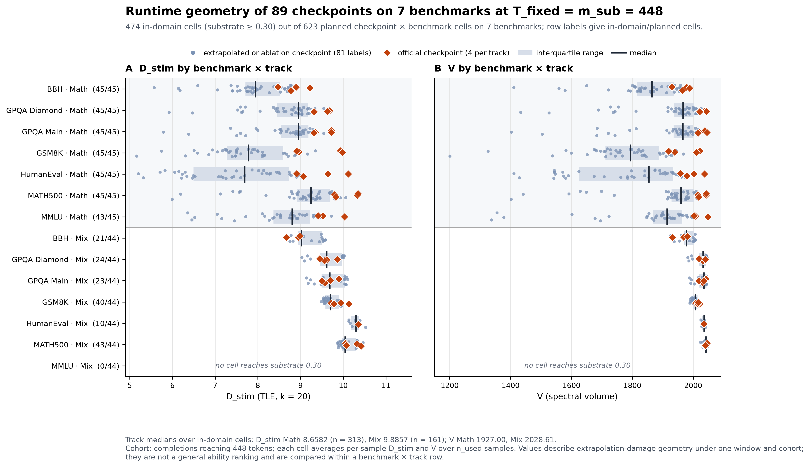
图 14. 89×8 网格在 7 个 benchmark 上 474 个域内 cell 的 D_stim 与 V 分布（T_fixed=m_sub=448，cohort 为达到 448 token 的轨迹，底物≥0.30），按 benchmark 与赛道分组，官方与外推 checkpoint 分开标记。Mix 的 MMLU 没有域内 cell。图只描述这一窗口与 cohort 下的外推损伤几何。逐 cell 数据
8.3 官方 checkpoint 子集与外推损伤不能合成一条能力轴#
只看 8 个官方 checkpoint 时，D、V 与分数的相关很弱，且随底物门和任务筛选大幅变化。下表固定 T_fixed=m_sub=448 与 m448 cohort，覆盖 8.2 的 7 个 benchmark，每个 benchmark 有 4 个官方 checkpoint。相关先在 benchmark 内取百分位秩，再按赛道池化计算 Spearman ρ，分母是 checkpoint×benchmark cell。评分字段是 89×8 网格的 pass1c。在 GSM8K、MATH500、HumanEval、BBH 上，它就是生成时记录的 pass@1；MMLU 与 GPQA 的答案只能从完整保存的文本中抽取，保存不全的样本无法判对，所以在这两个任务上它是 pass@1 的下界。
| 官方子集 | Math：D ρ / V ρ | Math cell | Mix：D ρ / V ρ | Mix cell |
|---|---|---|---|---|
| 所有可测 cell，不加底物门 | +0.1143 / +0.2857 | 28 | +0.1143 / +0.0286 | 28 |
| 底物≥0.30，去掉域内官方点少于 2 个的 benchmark | +0.2421 / +0.4111 | 27 | +0.1564 / +0.0693 | 19 |
| 底物≥0.30，只保留 4 个官方点都在域内的 benchmark | +0.2000 / +0.4000 | 24 | +0.2500 / +0.1500 | 16 |
| 底物≥0.30，只用 GSM8K、MATH500、HumanEval | +0.6000 / +0.8000 | 12 | −0.1000 / −0.4000 | 8 |
最后一行的 Mix 只有 GSM8K 与 MATH500，因为 Mix 的 HumanEval 只有 1 个官方 checkpoint 在域内。筛选改变了任务组成，所以几行之间的差值不能解释成指标变好或变坏。单个 benchmark 只有 4 个点：不加底物门时，14 个 benchmark×赛道组的 4 点 D 相关从 −0.8000 到 +1.0000 都有，这些相关只反映小样本下的敏感性。官方切片 · 逐 benchmark 相关
把官方与外推 checkpoint 放进同一个 benchmark×赛道组后，组内相关多数更强。每个组按输出长度标为变长组或变短组（下称出口方向）：外推 cell 平均输出长度的中位长于 4 个官方 checkpoint 的中位即为变长组，短于则为变短组，这个标签只由生成长度决定。7 个 benchmark×2 个赛道共 14 个组，其中 9 个变长、5 个变短：Math 的 7 个 benchmark 和 Mix 的 GSM8K、MATH500 变长，Mix 的 BBH、GPQA-main、GPQA-diamond、HumanEval、MMLU 变短。13 个组有域内相关，Mix 的 MMLU 没有域内 cell。组内相关把官方与外推 checkpoint 放在一起计算（T_fixed=m_sub=448，底物≥0.30，评分字段 pass1c）：ρ(D, pass1c) 在 9 个变长组为 +0.5842 至 +0.9671，在 4 个有值的变短组为 −0.0026 至 +0.7333。两段区间重叠，按出口方向分组也得不到关于 D 的通用规则。出口方向与组内相关
官方子集的相关很弱且依赖筛选；组内相关的分数跨度则主要来自外推 checkpoint 之间损伤程度的差异，13 个组里外推 checkpoint 各有 9 至 41 个，官方 checkpoint 各有 1 至 4 个。两类证据因此不能直接合并。要把它们合成一条从差到好的能力轴，需要在独立的 checkpoint 与任务上做前瞻预测的复现，本文没有做。
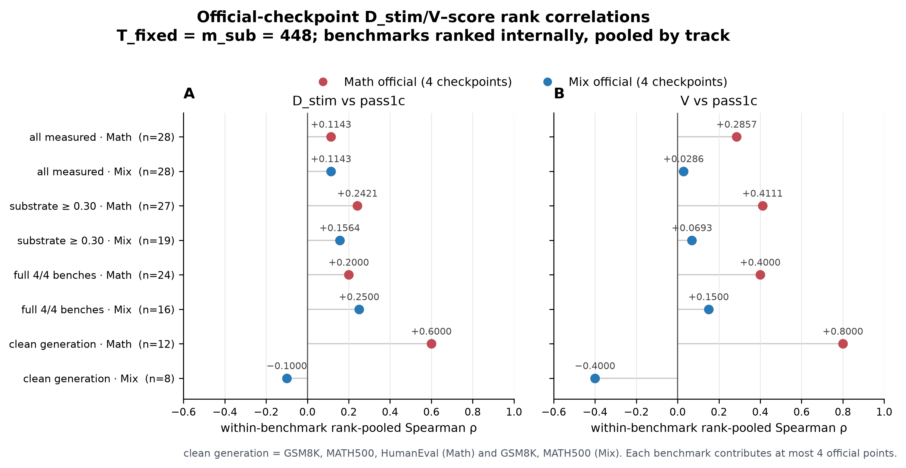
图 15. 8 个官方 checkpoint（Math、Mix 各 4 个）的 D_stim、V 与 pass1c 的池化秩相关（T_fixed=m_sub=448，m448 cohort，覆盖 8.2 的 7 个 benchmark），四个切片的底物门与任务筛选按行标明。每个切片只有 8 至 28 个 checkpoint×benchmark cell，MMLU 与 GPQA 的 pass1c 是 pass@1 的下界。切片之间的差异只反映小样本敏感性，不能当作预测验证或跨任务的能力指标。切片数值
8.4 short128：换窗口也换了人群，同窗内短自停样本的 D 更低#
short128 用来测量 m448 测不到的短输出。它在 89×8 网格的同一批 89 个 label 上测量 MMLU、GPQA-main、GPQA-diamond、HumanEval、BBH 五个 benchmark，固定 T_fixed=m_sub=128，候选轨迹只需达到 128 token。445 个计划 cell 中 428 个可测，17 个零底物，逐样本记录 724,118 条。short128 与 8.5 的 m-grid 是不同的实验：m-grid 在每个 cell 内固定使用达到 448 token 的轨迹。
以 HumanEval-Mix 为例，换窗口会同时换人群。它的 44 个 cell 中，域内 cell（底物≥0.30）在 m448 长轨迹 cohort 为 10/44，在 short128 为 41/44。各自域内的 ρ(D, pass1c) 为 +0.7333（m448，10 个 cell）与 −0.3777（m128，41 个 cell）；把 m128 限制到 m448 的同 10 个 cell，ρ 为 +0.1394。在同一批 10 个 cell 上 m128 的相关仍为正，所以符号翻转主要来自纳入人群的变化，+0.7333 与 −0.3777 的差别不能当作纯窗口效应。HumanEval 的 pass1c 就是生成时记录的 pass@1。
在同一窗口内按结束方式分组后，HumanEval-Mix 上短自停样本的 D 更低。这项行为对照固定 T_fixed=m_sub=128、short128 cohort 与底物门 0.30，在每个 cell 内把样本分成短自停（finish_reason=stop 且少于 448 token）与长撞预算（finish_reason=length 且至少 448 token）两组，各取 D 的中位数后相减；两组都至少有 5 个样本的 cell 才进入比较。HumanEval-Mix 有 20 个这样的 cell：18/20 的短自停组 D 更低，中位差 −1.1749（单侧 Wilcoxon p=0.001356）；20/20 的短自停组准确率更高，中位差 +0.4971。逐 cell 对照 · short128 cell 表
较低的 D 在这里与较好的短回答同时出现，但低 D 不表示模型内部更确定。第 9 节的 Code16 与标准 MBPP 在两组都超过 448 token 的长轨迹 cohort 中给出相反的方向：T_fixed=m_sub=448 下，自停组 D 更高的 cell 在 Code 为 125/125，在标准 MBPP 为 62/62（组内取均值）。两项对照的 rollout、checkpoint、长度准入与 cell 统计量都不同，方向相反不能归因于 D 的含义改变。D 只能与窗口、长度准入和结束方式一起报告。
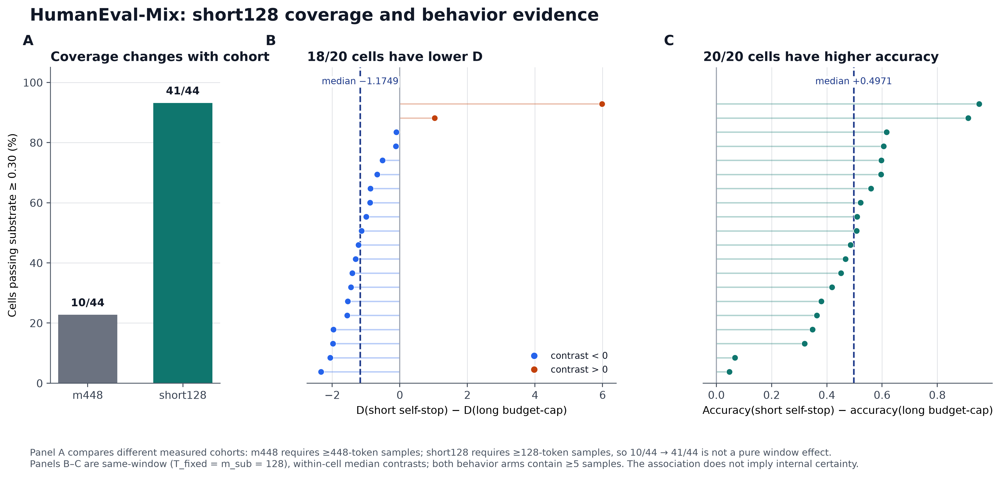
图 16. HumanEval-Mix 的 short128 证据。A 为底物≥0.30 的域内覆盖：m448 为 10/44，short128 为 41/44；两者的长度准入分别是至少 448 与至少 128 token，所以覆盖与相关的变化包含人群变化，不是纯窗口效应。B、C 固定 T_fixed=m_sub=128，在每个 cell 内比较短自停（stop 且少于 448 token）与长撞预算（length 且至少 448 token）样本的组内中位数，两组各至少 5 个样本：18/20 个 cell 的短自停 D 更低（中位差 −1.1749），20/20 个准确率更高（中位差 +0.4971）。图不说明模型内部的确定性。图数据
8.5 m-grid 七窗口：窗口改变 checkpoint 排序，预先登记的四条预测部分成立#
m-grid 单独检验窗口的影响。16 个 label（下称 selected16）选自 89×8 网格，覆盖 8.2 的 7 个 benchmark。每个 label×benchmark 固定使用同一批达到 448 token 的轨迹，再在 m=T=64、96、128、192、256、320、448 七个窗口上计算 D 与 V。固定样本只保证同一 cell 内跨窗口一致，不同 checkpoint 的轨迹并不相同。
| 赛道 | 4 个官方 checkpoint | 4 个外推 checkpoint |
|---|---|---|
| Math | step400、1000、1600、2000 | lin_elem p20；qh_hybrid k96 p50；qh_hybrid k96 p80；qh_hybrid k4096 p80 freeze2000 |
| Mix | step200、500、800、1000 | qh_hybrid k96 p100；qh_maglin p100；qh_elem p20；qh_hybrid k4096 p50 |
selected16 是人为挑选的校准子集，没有按登记的统计规则抽样，结果不代表 89 个 label 的总体；其中 Math 的 k4096 p80 freeze2000 使用了前缀之外的方向信息。16×7×7=784 个 cell 全部可测，n_err 都为 0，188,774 条轨迹对应 1,321,418 条样本×窗口记录。m448 窗口的数值就是 8.2 中这 16 个 label 的同一批 cell。按 m448 cohort 计，底物门保留 96/112 个 label×benchmark 单元（Math 55/56，Mix 41/56）。
短窗口保不住 checkpoint 的排序。在满足相关计算门（至少 4 对有限值、每轴至少 3 个不同取值）的 12 个 benchmark×赛道组内，比较 D(m) 与 D(448) 的 Spearman ρ（固定样本 cohort，底物≥0.30）：
| m | ρ 中位 | ρ 最小 | 负相关组 | 组位移中位 |
|---|---|---|---|---|
| 64 | 0.1071 | −1.0000 | 4/12 | +2.2043 |
| 96 | 0.0833 | −0.9762 | 4/12 | +2.3817 |
| 128 | 0.0476 | −0.8571 | 4/12 | +2.2847 |
| 192 | 0.2857 | −0.6667 | 3/12 | +1.8205 |
| 256 | 0.7500 | −0.2381 | 1/12 | +1.2653 |
| 320 | 0.9286 | 0.4762 | 0/12 | +0.7851 |
| 448 | 1.0000 | 1.0000 | 0/12 | 0.0000 |
组位移是组内各 checkpoint 的 D(m)−D(448) 的中位数，表中再取 12 个组的中位；m448 一行与自身比较，ρ=1 由构造决定。m64、m96、m128 的组位移在各组之间分别为 +1.3561 至 +3.0099、+2.1171 至 +3.1438、+1.8319 至 +2.9636。所以短窗口的 D 既不能用一个共同的平移量换算到 m448，也保不住排序；跨任务通用的加性归一化 D_norm 不成立，比较须锁定同一窗口。组内统计
V 随窗口的增长较规则：96 个域内单元分别拟合 V∝m^α，α 的中位为 0.8656，IQR 为 0.8537 至 0.8708。七个窗口是同一轨迹上的嵌套测量，拟合度高只是这一设计下的描述，不能据此给跨窗口的 V 赋予统一的能力含义。V 的窗口指数
即使同为 m128，样本准入不同，读数也会不同。固定样本的 m128 排除了所有短于 448 token 的轨迹，short128 则纳入达到 128 token 的轨迹。selected16 在 short128 五个 benchmark 上有 80 个对齐 cell，两种 m128 的 D 绝对差中位为 0.0736；在 HumanEval-Mix 的 8 个对齐 cell 上，中位绝对差为 1.2074，两种读数的秩相关为 +0.1190，每个 cell 使用的轨迹数中位由 147.5 增至 751.5。
short128 与 m-grid 测量开始前，研究登记了四条可证伪的预测，并为 m-grid 规定了标定判据：若组间差只随 m 平移，就构造 D_norm；若曲线交叉、排序翻转，就只能同窗比较。标定的结局是后者（见上表）。P1 至 P3 在 short128 的 T_fixed=m_sub=128 cohort 上检验，P4 在 selected16 的固定样本 m-grid 上检验，底物门均为 0.30。
| 预测 | 登记的判据 | 结局 |
|---|---|---|
| P1 域恢复 | short128 使 MMLU-Mix、HumanEval-Mix、BBH-Mix 的域内 cell 比例都超过 80% | 部分支持：HumanEval-Mix 由 m448 的 10/44 增至 41/44；MMLU-Mix 由 0/44 增至 29/44，BBH-Mix 由 21/44 增至 23/44，未达 80% |
| P2 符号不变 | 变得可测后，GPQA-Mix 与 MBPP-Mix 的 ρ(D, pass@1) 仍不大于 0 | 部分支持：GPQA 两项为 −0.5220（GPQA-main）与 −0.4978（GPQA-diamond），窗口 m128，各 24 个 cell，评分字段 pass1c；MBPP-Mix 一项没有可用分数，未检验 |
| P3 低维二义性 | 同一窗口内，短且自停样本的 D 显著低于长且撞预算样本 | 在登记的行为范围内支持：HumanEval-Mix 18/20 个 cell，中位差 −1.1749，单侧 Wilcoxon p=0.001356；准确率 20/20 更高，中位差 +0.4971 |
| P4 V 的长度影子 | V 约按 T^0.79 随窗口增长；若 Math 外推 cell 上 V 控制 D 后与分数的正关联在同窗标定后消失，则判定 V 只是长度的影子 | 消失预测不成立：指数中位 0.8656（IQR 0.8537 至 0.8708）；外推 Math 的 ρ(V, pass1c) 在 m128、m448 为 +0.6000、+1.0000，m128 上控制 D 后 V 的偏秩相关为 +0.5086 |
P3 的支持只来自 HumanEval-Mix：BBH-Math 与 BBH-Mix 分别有 15/29 与 10/23 个 cell 的短自停 D 更低，中位差 −0.0350 与 +0.0336，单侧 p 为 0.2210 与 0.1965；MMLU 与 GPQA 在 short128 中没有可靠的逐样本正确标签，不作准确率判定。P2 用的是 GPQA 的 pass1c 下界。P4 只在 28 个外推 Math cell（4 个构造×7 个任务）上检验，按 benchmark 内中心化秩池化；m448 时 V 与分数完全同秩，以 V 为条件的偏相关没有定义，同一子集的 ρ(D, pass1c) 在 m448 为 +0.8857、m128 为 +0.3714。selected16 的人群与秩处理和 8.3 的官方切片不同，两处数值不能互相替代。这些结局都不能升级为通用能力或因果结论。m-grid 条件信号 · short128 推断统计 · P3 逐 cell 对照
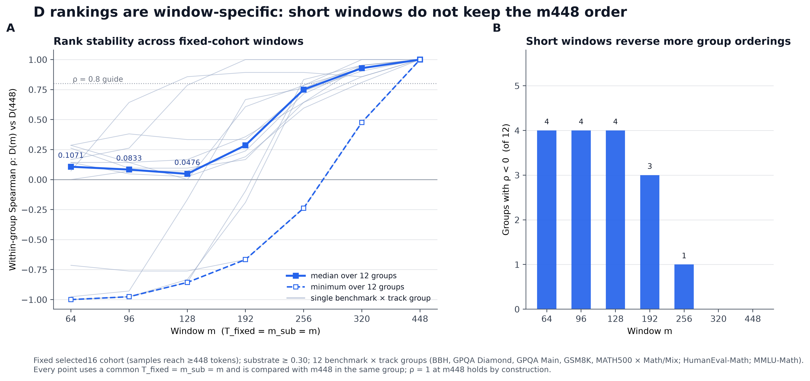
图 17. selected16 m-grid 在每个 cell 内固定使用至少 448 token 的轨迹，在七个共同窗口（T_fixed=m_sub=m）计算 D，底物门 0.30，12 个 benchmark×赛道组满足相关计算门。图给出各窗口 D(m) 对 D(448) 的组内 Spearman ρ 的中位数、最小值与负相关组数；m64、m96、m128 的中位 ρ 为 0.1071、0.0833、0.0476，负相关组都是 4 个。m448 与自身的 ρ=1 由构造决定。结果否定统一的加性 D_norm 与跨窗口沿用排序的做法，只适用于这一固定 cohort。组内统计
8.6 MMLU true pass@1 与几何：高相关主要随撞上限比例共变#
MMLU-Math 指 89×8 网格 Math 赛道的 45 个 label（4 个官方 checkpoint、41 个外推 checkpoint）在 MMLU 题集上的评测，不是 MMLU 的数学科目。true pass@1 的协议见第 7 节：每个 label 7,687 题×8 样本，生成上限 3,072 token。45 个 label 的 true pass@1 与撞上限比例（finish_reason=length 的样本占比）的 ρ 为 −0.9506。几何取自 8.2 的 m448 前向（T_fixed=m_sub=448，m448 cohort），测量的是 89×8 网格的 MMLU completion；true pass@1 来自另一轮生成，两者只按 label 连接，没有逐样本配对。底物门保留 43 个 label，排除官方 step1000（底物 0.2993）与 relex_r1 Math_p50（0.2915）。两类面板见图 13。
域内 43 个 label 上，ρ(D, true pass@1)=+0.8674（题目 bootstrap 区间 [0.8546, 0.8725]），ρ(V, true pass@1)=+0.9151（[0.9058, 0.9192]）。同时，D、V 与撞上限比例的 ρ 为 −0.9337、−0.9434。在秩空间对撞上限比例做线性回归并取残差后，D、V 与 true pass@1 的残差关联只有 −0.1620、+0.1925。另三个几何量与 true pass@1 的 ρ 为：V×D_stim +0.8955（43 个 label，[0.8835, 0.8996]），H_health −0.2806（43 个，[−0.2883, −0.2634]），donor-delta D_stim +0.9644（40 个外推 label，[0.9531, 0.9681]）。donor-delta 是外推 checkpoint 的 D 减去其前缀末端官方 checkpoint（donor）的 D，Math p20、p50、p80、p100 的 donor 依次为 step400、1000、1600、2000。逐 label 分数、撞上限比例与几何 · 几何量与 true pass@1 的相关 · 撞上限比例与残差关联
MMLU 上几何与分数的原始相关之所以高，主要是两者都跟着撞上限比例走，不能当成与预算无关的能力信号。撞上限比例与 D、V 强共线，残差关联只是描述性的敏感性分析，没有因果含义。V×D_stim 与 H_health 是 D、V、D_world 的固定组合；donor-delta 只覆盖外推 label，其中 8 个 p50 label 的 donor 是底物低于 0.30 的 step1000；这三个量都不单独构成结论。bootstrap 只在每个固定 label 内重采样 7,687 道题，不包含 checkpoint 选择的不确定性。cohort 中 freeze1800、freeze2000 的 4 个 label 使用前缀之外的方向信息，属 oracle 条件。
8.7 AIME 运行时几何：m2048 读数已测，与 pass@16 的关联尚未计算#
AIME 运行时几何覆盖 Math 与 Mix 的 64 个 checkpoint：Math 有 4 个官方 checkpoint 与 31 个外推 checkpoint，Mix 有 4 个与 25 个。几何使用 AIME 功能评测保存的 completion，每个 checkpoint 取 90 道题各自的第一个样本作为候选，固定 T_fixed=m_sub=2048，cohort 是达到 2,048 token 的轨迹。每个 checkpoint 有 49 至 90 条轨迹进入测量，共 5,670 条；底物比例最低 0.5444、中位 1.0000，64 个 checkpoint 都满足底物门 0.30。
| 赛道 | 构造 | checkpoint | D 中位 | D 范围 | V 中位 | V 范围 |
|---|---|---|---|---|---|---|
| Math | 官方 | 4 | 8.0570 | 7.8485 至 8.6902 | 6,545.87 | 6,473.19 至 6,744.65 |
| Math | 外推 | 31 | 6.6974 | 4.2980 至 8.0069 | 5,746.20 | 2,046.36 至 6,645.86 |
| Mix | 官方 | 4 | 8.8583 | 8.5605 至 8.9035 | 6,755.14 | 6,749.51 至 6,809.36 |
| Mix | 外推 | 25 | 8.2070 | 7.7849 至 8.6404 | 6,614.05 | 6,374.49 至 6,763.00 |
两个赛道外推 checkpoint 的 D 与 V 中位都低于官方 checkpoint，Math 的离散更大。m2048 的读数不能与 m448、m128 的读数混排。这批几何与 AIME pass@16 的关联尚未计算：64 个 checkpoint 都有 AIME 分数，但几何与分数还没有按登记的 cohort、窗口与评分字段连接，所以本文不报告 m2048 上 D、V 与 AIME 分数的相关。几何每题只用第一个样本，pass@16 由每题 32 个样本估计，两者的单位不同，连接前需要先登记口径。AIME m2048 cell 表 · 逐轨迹记录
9. 层深、组成与长输出：T1 与 Code、标准 MBPP 的几何#
本节报告两组运行时几何。T1 是时间自相关与层深的控制实验，在 30 道 AIME 题的固定 cohort 上检查 D 与 V 对层深、局部时间相关和题目组成的敏感性。Code16 与标准 MBPP 在同一批长轨迹上比较 D/V 与分数的关联，并按结束方式拆分。两组几何都来自按层设置 RoPE 的前向（sliding-attention 层用未缩放 RoPE，full-attention 层用 YaRN），D 指 D_stim。
9.1 T1 的固定 cohort 与层深曲线：可测 cell 的平均 D 都在 L31 最高#
T1 的 180 个 cell 全部留在固定 cohort 中。其中 10 个高重复输出没有层深值，其余可测 cell 的平均 D 在六个 label 上的最大值都位于 L31。六个 label 是 Math 与 Mix 赛道的末步官方 checkpoint（表中记为 target），以及 Math p80 前缀上的四个外推构造 lin_elem、qh_elem、qh_maglin、relex_r2。每个 label 在 30 道登记 AIME 题上各取第 0 个样本，生成上限为 32,768 tokens。这 180 个 label×题目 cell 的输出都至少有 8,192 个 completion token，所以 T1 不使用 30% 底物门。119 个 cell 以长度上限结束，61 个自行停止，自停输出长 8,480 至 32,055 tokens。
层深测量在每个 cell 的前 2,048 个 completion 位置中找出每个不同 embedding 向量首次出现的位置，再从这些位置中均匀选 96 个。embedding 输出与 L0 至 L31 共 33 个深度都用这同一组 96 个位置，每个深度各算一次 D（近邻数 k=20）与 V。因此一个 cell 需要在前 2,048 个位置中至少有 96 个不同的 embedding 输入。有 10 个 cell 只有 34 至 95 个：它们都生成满 32,768 tokens、以长度上限结束，文本高度重复，并不是不足 96 tokens 就停止的输出。这 10 个 cell 在 33 个深度上都记为显式 NA；层深表的 5,940 个键（180 个 cell×33 个深度）中有 5,610 个有限测量值和 330 个 NA。撞长度上限本身不会造成缺失：target（Mix）的 30 个 cell 都以长度上限结束，层深缺失为 0。9.2 节的 block 与 within/cross 对照用另一套 480 点设计，180 个 cell 全部可测。
| label | 长度上限结束 | 自行停止 | 层深可测 cell | 层深 NA cell |
|---|---|---|---|---|
| target（Math） | 14 | 16 | 30 | 0 |
| target（Mix） | 30 | 0 | 30 | 0 |
| lin_elem | 20 | 10 | 29 | 1 |
| qh_elem | 16 | 14 | 27 | 3 |
| qh_maglin | 19 | 11 | 28 | 2 |
| relex_r2 | 20 | 10 | 26 | 4 |
缺失 cell 的几何与可测 cell 差别很大。在 9.2 节的 block1 设计（480 个分散的单点）下，lin_elem、qh_elem、qh_maglin、relex_r2 缺失 cell 的平均 D 为 2.3172、2.5477、2.3745、2.4137，同一 label 可测 cell 的平均 D 为 8.8706、10.5178、11.7870、10.1739。所以层深曲线只描述各 label 的可测 cell，不代表完整的 30 题 cohort；本文不插补缺失值，也不换题。结束方式与层深缺失汇总 · 10 个层深缺失 cell
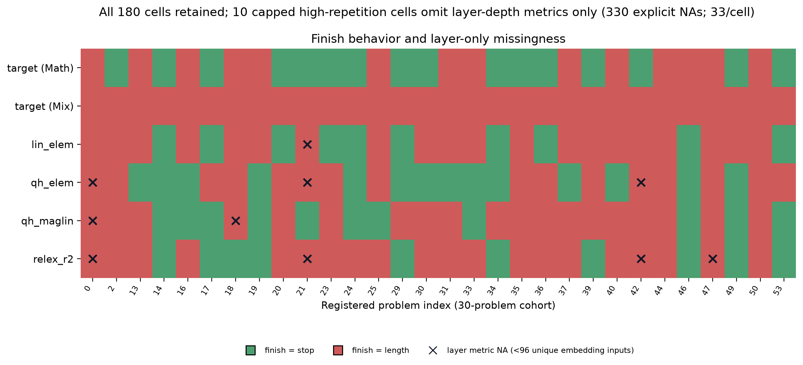
图 18. 六行对应六个 label，30 列对应同一组登记题目。绿色为自行停止，红色为长度上限结束；叉号标出前 2,048 个位置中不同 embedding 输入少于 96 个的 10 个 cell，它们都是生成满 32,768 tokens 的高重复输出。层深 NA 不改变 block 与 within/cross 对照的 180 个 cell 分母。
每个 label 在 33 个深度上使用同一组可测 cell，分母依次为 30、30、29、27、28、26。平均 D 从 embedding 输出处的 8.0162 至 8.4076 升到 L31 的 19.5598 至 21.1333，六条曲线的最大值都在 L31。这一上升并不单调：在 L0 至 L30 之间，平均 D 的最高点位于 L21（qh_maglin 为 L16），为 16.0845 至 17.6751；从 L30 到 L31 再升 3.4545 至 5.4677。平均 V 则在每两个相邻深度之间都上升。
| label | 层深 n | embedding D | L31 D | L31 V |
|---|---|---|---|---|
| target（Math） | 30 | 8.1515 | 20.8806 | 572.0246 |
| target（Mix） | 30 | 8.0260 | 21.1333 | 571.5353 |
| lin_elem | 29 | 8.4076 | 19.5598 | 570.5634 |
| qh_elem | 27 | 8.0162 | 20.5501 | 571.6763 |
| qh_maglin | 28 | 8.1305 | 21.0494 | 571.8799 |
| relex_r2 | 26 | 8.3108 | 20.8646 | 571.9111 |
L31 取自 Transformers hidden_states 的最后一项，是经过最终归一化的状态，所以末点的跳升不能单独归到 L31 这一层的计算。层深曲线用 96 个点和前 2,048 个位置，block 与 within/cross 对照用 480 个点和前 8,192 个位置，两组 D/V 数值不能直接比较。这些曲线描述登记样本在各状态位置上的几何，不说明层间因果、推理进度或 checkpoint 能力；各 label 的缺失集合不同，label 之间的差异也混有缺失构成的影响。层深曲线汇总
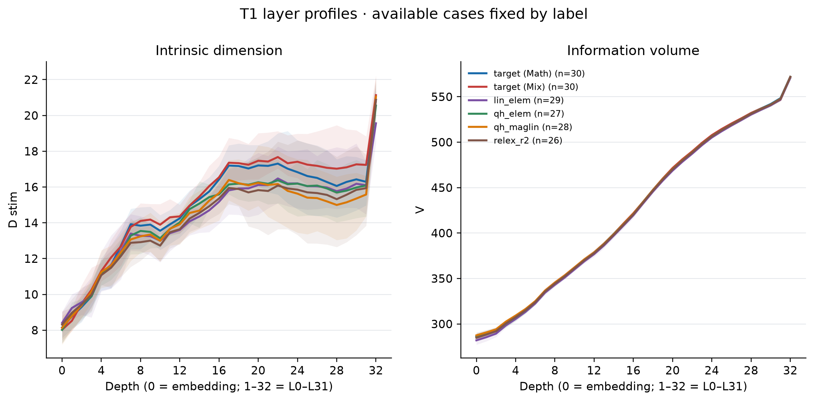
图 19. 横轴 0 为 embedding 输出，1 至 32 为 L0 至 L31；左为 D，右为 V。线为各 label 固定可测 cell 的平均值，带为题目间四分位区间，分母依次为 30、30、29、27、28、26。10 个缺失 cell 在 33 个深度上都保持 NA，每条线内部的 cell 集合不随深度改变。
9.2 matched block 与 within/cross 组成对照：局部成块降低 D，跨题混合抬高 D#
点数与覆盖区间固定时，让点按连续 token 成块会降低 D 与 V，把不同题目的点混进同一点云会抬高 D 与 V。TLE 与 V 都不依赖点的排列顺序，打乱 token 顺序不会改变点云，因此不能用打乱顺序来检查时间自相关。在合成的自回归点云上，相邻点相关会压低局部维度估计；这项合成检验只说明对照能检出人为设置的相关效应。block 对照在每个 cell 的末层隐状态上取 480 个点，范围固定为 completion 的第 0 至 8,191 个位置（含两端）。点按 1、2、4、8、16 个连续 token 成块排列，每种块长有 4 个登记放置方式；点数和覆盖区间不变，只有点在时间上的聚集程度改变。每题先平均 4 个放置方式，再对 30 题取均值；3,600 行全部有限，每行 480 个点互不重复。
六个 label 的 block16 减 block1 都是负值：ΔD 为 −1.3948 至 −0.7146，ΔV 为 −45.6641 至 −10.5701。从 block1 到 block16，六个 label 的平均 D 在每一级都下降；平均 V 只有 target（Mix）在 block8 到 block16 之间回升，由 2,128.0458 升到 2,132.9684。逐题看，D(block16) 低于 D(block1) 的题数在六个 label 上为 29/30、22/30、27/30、28/30、27/30、27/30，并非每题一致。
| label | ΔD，block16 减 block1 | ΔV，block16 减 block1 | D 下降的题数 |
|---|---|---|---|
| target（Math） | −1.3948 | −19.2668 | 29/30 |
| target（Mix） | −0.7146 | −10.5701 | 22/30 |
| lin_elem | −0.8516 | −45.6641 | 27/30 |
| qh_elem | −0.9506 | −35.2173 | 28/30 |
| qh_maglin | −1.0864 | −29.6568 | 27/30 |
| relex_r2 | −0.9366 | −40.8929 | 27/30 |
端点方向说明 D 与 V 对局部时间相关敏感。block16 只是一个登记构造，它的值既不是 D/V 的校正量，也不是“真实维度”。block 对照汇总 · block 逐题表
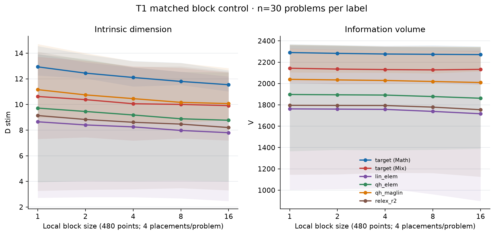
图 20. 横轴为块长，每个块长都使用 480 个互不重复的末层隐状态点和相同的第 0 至 8,191 个位置区间，每题先平均 4 个放置方式；线为 30 题均值，带为四分位区间，左为 D，右为 V。六个 label 的 block16 减 block1 的 D 与 V 都为负，这一差值不表示能力差异或因果效应。
within/cross 对照检查题目组成。within 是单题点云：480 个点在第 0 至 8,191 个位置上均匀分布，表中取 30 个单题点云的均值。cross 是一个 480 点的跨题点云，由同样 30 题各在相同的相对位置上取 16 个点组成。每个 label 有 30 个 within 点云和 1 个 cross 点云，共 186 行，全部有限且点互不重复。六个 label 的 cross 减 within 都是正值：ΔD 为 +4.9408 至 +9.4839，ΔV 为 +90.7237 至 +291.9547。cross D 高于单个 within D 的题数为 30/30、30/30、22/30、30/30、30/30、22/30；cross V 只高于 12 至 27 个 within 值。
| label | ΔD，cross 减 within 均值 | ΔV，cross 减 within 均值 | cross D 更高的题数 | cross V 更高的题数 |
|---|---|---|---|---|
| target（Math） | +6.8137 | +90.7237 | 30/30 | 27/30 |
| target（Mix） | +9.4839 | +201.0358 | 30/30 | 26/30 |
| lin_elem | +5.0933 | +291.9547 | 22/30 | 15/30 |
| qh_elem | +6.8702 | +265.3055 | 30/30 | 14/30 |
| qh_maglin | +6.5809 | +213.9845 | 30/30 | 12/30 |
| relex_r2 | +4.9408 | +284.2820 | 22/30 | 13/30 |
在六个 label 上，跨题混合带来的 D 差（+4.9408 至 +9.4839）都大于局部成块带来的 D 差的绝对值（0.7146 至 1.3948）。每个 label 只有一个确定性的 cross 构造，没有可用于抽样推断的重复。这个差值描述的是题目组成，不是自相关校正或因果分解，也不表示每个跨题点云都高于每个单题点云。within/cross 汇总 · within/cross 逐题表
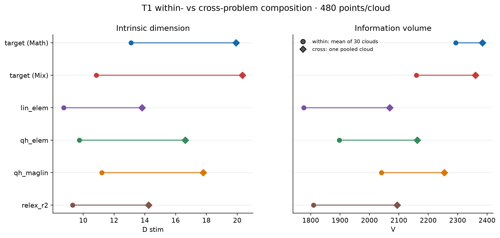
图 21. 圆点是 30 个单题 480 点云的均值，菱形是由同样 30 题各取 16 点组成的一个跨题 480 点云；左为 D，右为 V。六个 label 的 cross 减 within 的 D 与 V 都为正；单个跨题构造不提供抽样不确定性，也不建立能力或机制结论。
9.3 Code16 与标准 MBPP 的同窗 D/V 与分数：Code 的 D 关联随窗口变号，MBPP 的 donor-delta 关联主要来自 Math#
Code 外推构造的 D 与分数的关联在 T_fixed=m_sub=128（下文记为 m128）为负，在 T_fixed=m_sub=448（m448）为正；标准 MBPP 在 m448 的关联很强，其中 donor-delta 的强关联主要来自 Math 赛道。两组数据的几何与分数来自同一批保存的生成。
Code16 由 Code 赛道的 4 个官方 checkpoint（step800、step1700、step2500 与末步 step3000）和 12 个外推构造（qh_elem、qh_maglin、relex_r2 各取 p20、p50、p80、p100）组成。每个 checkpoint 在 8 个 benchmark 上生成：BBH、GPQA-diamond、GPQA-main、GSM8K、HumanEval、MATH500、Code-MBPP 与 MMLU。GPQA-diamond、GPQA-main、HumanEval、MATH500 与 Code-MBPP 每题取 8 个样本，GSM8K 取每题第 0 个样本，BBH 与 MMLU 各按确定性规则抽 2,048 题、每题取第 0 个样本。登记候选共 287,216 条，其中 17,347 条不足 448 tokens；余下 269,869 条长轨迹在两个窗口上各测一次，共 539,738 条样本×窗口记录。128 个 checkpoint×benchmark cell 的底物比例都不低于 0.30，最低为 0.6089。
标准 MBPP 覆盖 89 个 checkpoint：Math 与 Mix 赛道各 4 个官方 checkpoint（Math 为 step400、step1000、step1600 与末步，Mix 为 step200、step500、step800 与末步），以及 81 个外推构造。每个 checkpoint 生成 257 题×8 个样本，候选共 182,984 条，其中 54,516 条不足 448 tokens，余下 128,468 条长轨迹，共 256,936 条样本×窗口记录。64/89 个 checkpoint 的底物比例不低于 0.30，对应 128/178 个窗口 cell；其余 25 个都是 Mix 外推构造，底物比例最低只有 0.0005，不进入 D/V 解释。relex_r2 Math_p50 有 2 条样本以 6,144-token 生成上限结束，文本超出 65,536 字符的存储上限，拿不到全文，production 标签把它们记为执行失败，所以全文完整的 checkpoint 是 88/89。几何只用前 448 个 token，这 2 条样本仍可测量，178 个窗口 cell 都有几何值。主 63 指底物比例不低于 0.30 的 64 个 checkpoint 去掉 relex_r2 Math_p50 后剩下的 63 个，其中 55 个是外推构造（Math 40、Mix 15），8 个是官方 checkpoint；标准 MBPP 的分数关联都在主 63 上计算。Code 底物表 · 标准 MBPP 底物表 · 标准 MBPP 逐 cell 分数与几何
m128 与 m448 两个窗口始终使用同一批 n_avail≥448 的长轨迹。m128 是这些长轨迹的前 128 个 token，与第 8 节只要求 128 tokens 的 short128 cohort 不同。两组数据的 n_err、缺失、空输出与 UID 不一致计数都为 0。分数指标为 p@1。Code 有三种评分口径，都基于同一批保存文本：production 是生成时评测脚本给出的标签；suite 对 GSM8K、MATH500、BBH 与三个选择题 benchmark 使用登记的文本答案抽取器；conflict-excluded 在固定分母下把 GSM8K、MATH500 与 BBH 中登记为语法冲突的样本计为错误，选择题与 suite 相同。HumanEval 与 Code-MBPP 用单元测试评分，三种口径一致。标准 MBPP 使用 production 的单元测试标签。
三种口径改变绝对分数，但几乎不改变 benchmark 内的 checkpoint 排序。16 个 Code checkpoint 的等权平均 p@1 在 production、suite、conflict-excluded 下，BBH 为 0.1493、0.2189、0.1618，GSM8K 为 0.6044、0.6457、0.6440，MATH500 为 0.6317、0.6429、0.6145；MMLU 与两个 GPQA 的均值变化不超过 0.0001。在 8 个 benchmark 内两两比较三种口径，16 个 checkpoint 的 p@1 Spearman 最低为 0.9176，来自 BBH 的 suite 对 conflict-excluded。三种口径都没有经过人工语义裁决，本文不把任何一种当作语义金标准，也不按分数高低挑选口径；排序稳定只说明结论对这些登记的文本约定不敏感。Code 三种口径的逐 cell 分数
下表每个窗口使用 12 个外推构造×8 个 benchmark=96 个 cell，相关在每个 benchmark 内取秩后池化。absolute 指 checkpoint 自身的 D 或 V，donor-delta 指它减去前缀末端官方 checkpoint（donor）的同一量。
| 几何量 | m128：production / suite / conflict-excluded | m448：production / suite / conflict-excluded |
|---|---|---|
| absolute D | −0.2407 / −0.2801 / −0.2346 | +0.5408 / +0.5180 / +0.5431 |
| donor-delta D | −0.1948 / −0.2071 / −0.1920 | +0.4827 / +0.5107 / +0.4955 |
| absolute V | +0.3331 / +0.3192 / +0.3469 | +0.4984 / +0.4934 / +0.5138 |
| donor-delta V | +0.1922 / +0.1808 / +0.1703 | +0.4273 / +0.4551 / +0.4540 |
三种口径下，逐 benchmark 的 D 与 p@1 相关都是 m128 有 7/8 为负、m448 有 8/8 为正。池化后的 V 相关在两个窗口都为正，m448 更强。同一批长轨迹，取前 128 个 token 与取前 448 个 token 得到的 D 与分数关联符号相反，所以 D 的读数必须连同窗口报告。
官方子集每个 benchmark 只有 4 个点，相关不稳定。Code 的 4 个官方 checkpoint 在 8 个 benchmark 上构成 32 个 cell，底物比例都不低于 0.30。按 benchmark 取秩后池化，ρ(D, production p@1) 在 m128 为 +0.1500，在 m448 为 −0.1000（suite 为 −0.0750，conflict-excluded 为 −0.1000）；ρ(V, production p@1) 在 m128 为 +0.6250，在 m448 为 +0.3750。m448 下，各 benchmark 内 D 与 production p@1 的 4 点 Spearman 在 BBH、GSM8K、MATH500、MMLU 为 −0.8000，在 GPQA-main 为 +0.2000，在 HumanEval 为 +0.6000，在 GPQA-diamond 与 Code-MBPP 为 +0.8000。标准 MBPP 的官方子集每条赛道也只有 4 个点，m448 的 D/V 相关在 Math 为 −0.8000/−0.8000，在 Mix 为 +1.0000/+1.0000。这些数不能读成官方 checkpoint 上 D 与分数负相关或正相关。池化相关 · 逐 benchmark 与逐赛道相关
标准 MBPP 主 63 中的 55 个外推构造在 Math 与 Mix 赛道内分别取秩后池化，分数为 production p@1。m448 的 absolute 与 donor-delta 关联都强，但 donor-delta 的强关联主要来自 Math：Math 40 个构造的 donor-delta D/V 为 +0.9854/+0.9818，Mix 15 个只有 +0.1036/+0.0143；absolute 值在两条赛道都高。m128 的池化相关为正，但弱于 m448，Mix 的 donor-delta D/V 为 +0.0179/−0.3821。
| 范围 | m128：D / V | m448：D / V |
|---|---|---|
| 55 个外推，absolute | +0.5102 / +0.6071 | +0.9142 / +0.9120 |
| 55 个外推，donor-delta | +0.3820 / +0.4779 | +0.7465 / +0.7194 |
| Math 40，absolute | +0.3773 / +0.5906 | +0.9263 / +0.9289 |
| Mix 15，absolute | +0.8714 / +0.6643 | +0.8893 / +0.8786 |
| Math 40，donor-delta | +0.5208 / +0.8004 | +0.9854 / +0.9818 |
| Mix 15，donor-delta | +0.0179 / −0.3821 | +0.1036 / +0.0143 |
把 relex_r2 Math_p50 加回，并把两条超出存储上限的样本全部按错或全部按对计分，56 个外推构造的 m448 absolute D/V 都是 +0.9153/+0.9147，donor-delta 都是 +0.7459/+0.7195；全部按对时，该 checkpoint 的 p@1 只增加 0.0010。
这些相关共享 checkpoint、题目、样本与 donor，cell 之间不是独立重复，只能作为外推损伤网格内的描述统计，不构成通用的 checkpoint 能力轴。
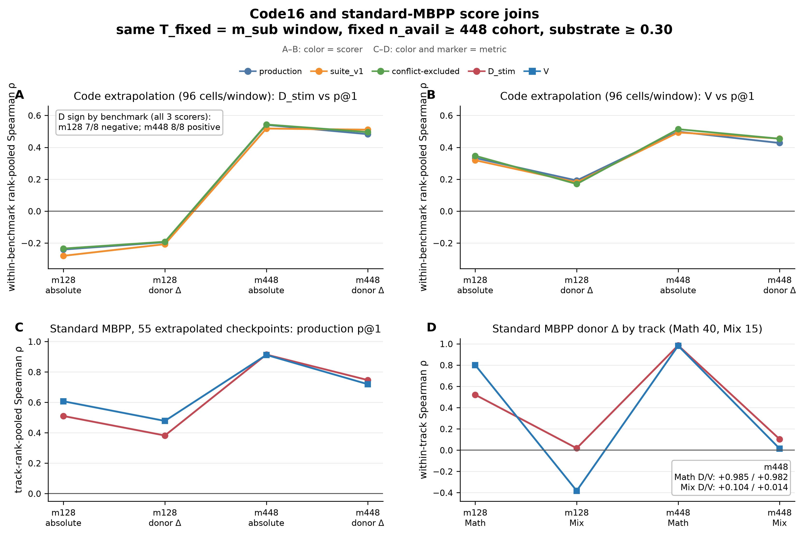
图 22. 两个窗口使用同一批 n_avail≥448 长轨迹，底物门为 0.30，相关在 benchmark（Code）或赛道（标准 MBPP）内取秩后池化。A、B 为 Code 的 12 个外推构造在三种评分口径下的 D 与 V 相关，分 absolute 与 donor-delta；C 为标准 MBPP 主 63 中 55 个外推构造的 production p@1 相关；D 把 C 的 donor-delta 拆成 Math 40 与 Mix 15。这些相关只描述外推损伤。
9.4 m448 长轨迹 cohort 中，自停输出的 D 更高#
Code16 与标准 MBPP 的几何还可以按结束方式拆开。每个 cell 内把 finish_reason="stop" 与 finish_reason="length" 的样本分成两组，各取 D 的算术均值后相减（stop 减 length）；两组都至少有 5 个样本的 cell 才进入比较。所有样本都来自 n_avail≥448 的长轨迹 cohort：自停样本至少 449 tokens，撞上限样本停在各任务的生成上限（BBH 为 1,224；GPQA 与 MMLU 为 3,072；HumanEval 为 4,096；GSM8K 为 5,120；MATH500、Code-MBPP 与标准 MBPP 为 6,144）。底物门为 0.30，标准 MBPP 使用主 63；准确率在 Code 上用 suite 标签，在标准 MBPP 上用 production 标签。
m448 下没有例外：Code 的 125 个可比较 cell 中，自停组 D 更低的是 0/125；标准 MBPP 主 63 的 62 个可比较 cell 中也是 0/62。D 差中位分别为 +0.5880 与 +1.9685。m128 下标准 MBPP 仍为 0/62，中位差 +0.5142；Code 有 44/125 个 cell 的自停组 D 更低，中位差只有 +0.0871，其中 MATH500 为 12/16，GPQA-diamond 为 8/16，GPQA-main 与 GSM8K 各为 7/16，MMLU 为 6/16，BBH 为 2/16，HumanEval 为 2/13，Code-MBPP 为 0/16。自停组的准确率在 Code 125/125、标准 MBPP 62/62 个 cell 中都更高。
| 数据与窗口 | 可比较 cell | 自停组 D 更低 | 自停组准确率更高 | D 差中位，stop 减 length | 准确率差中位 |
|---|---|---|---|---|---|
| Code16，m128 | 125/128 | 44/125 | 125/125 | +0.0871 | +0.3797 |
| Code16，m448 | 125/128 | 0/125 | 125/125 | +0.5880 | +0.3797 |
| 标准 MBPP 主 63，m128 | 62/63 | 0/62 | 62/62 | +0.5142 | +0.9261 |
| 标准 MBPP 主 63，m448 | 62/63 | 0/62 | 62/62 | +1.9685 | +0.9261 |
两个窗口使用同一批样本，所以准确率差不随窗口改变。不可比较的 cell 是 qh_elem、qh_maglin、relex_r2 三个 Code_p20 构造的 HumanEval cell（自停样本只有 1、3、4 条）和标准 MBPP 的 lin_elem Math_p20（自停样本 3 条）。Code 的准确率换成 conflict-excluded 或 production 标签，仍是 125/125 个 cell 的自停组更高，production 下中位差为 +0.3755。组内统计量从均值换成中位数时，自停组 D 更低的 cell 在 m448 为 1/125 与 0/62，在 m128 为 49/125 与 1/62，方向不变。结束方式分组汇总 · Code 逐样本几何 · 标准 MBPP 逐样本几何
这个方向与第 8 节 short128 的行为对照相反，但两者的 cohort 不同。short128 在 HumanEval-Mix 上固定 T_fixed=m_sub=128，比较短于 448 tokens 的自停样本与至少 448 tokens 的撞上限样本，取组内中位数：18/20 个 cell 的自停组 D 更低，中位差为 −1.1749；自停组准确率在 20/20 个 cell 中更高，中位差为 +0.4971。这里两组都超过 448 tokens，m448 下自停组 D 全部更高；即使同为 HumanEval、同为 m128，Code16 也只有 2/13 个 cell 的自停组 D 更低。两项对照中自停组的准确率都更高，所以较低的 D 在一个人群里伴随较好的短回答，在另一个人群里伴随撞上限的失败。两者的 rollout、checkpoint 和长度准入都不同，相反的方向不能归因于 D 的含义改变，也不支持内部确定性或因果解释；D 只能和窗口、长度准入与结束方式一起报告。
10. 结论的适用范围、未决问题与下一步#
10.1 每条结论只在登记的协议、人群与窗口内成立#
下表按实验对象汇总全文结论。“证据规模”一列给出比较单位与分母，“适用范围”一列写明结论成立的条件和不能推出的内容。层、投影、checkpoint 与同一题的重复采样之间有依赖，表中的行数和 cell 数不是独立实验次数。运行时几何都来自按层设置 RoPE 的前向（sliding-attention 层用未缩放 RoPE，full-attention 层用 YaRN）；除注明为 Pearson 的以外，相关系数都是描述性的 Spearman ρ。
| 结论 | 证据规模 | 适用范围 |
|---|---|---|
| 基座主谱子空间稳定，更新大多落在它的正交补中，主子空间块仍相对富集：基座与训练 checkpoint 的 top-96 左右奇异子空间平均对齐约 0.99997；按基座 top-96 分块，PP 占真实更新能量 0.23%，OO 占 91.67%，PP 相对同形状随机基线的 lift 均值为 5.2013（中位 3.6868） | 3 条赛道×32 层×7 类投影，15,008 个有效累计矩阵行；全秩 SVD，checkpoint 的 U/V 以 FP16、奇异值以 FP32 保存 | 能量份额须注明分母；全秩表示仍有因子存储的量化误差；权重相近不等于功能等价 |
| 后半谱带参与较多，但投影内占比与全矩阵占比不同：后半外环占投影能量的中位 70.90%，后半双侧块（heart）占 21.31%；矩形 MLP 的经济 SVD 帧只覆盖真实更新能量的中位 38.09%，其后半外环占真实更新的中位 27.50%；相邻增量与累积更新在 top-1024 核内的对角谱带组成比为 1.0646 | 15,008 个有效矩阵行；核内组成用 14,336 个有效相邻配对 | 不同分母的中位数不能相乘或相加；核内组成比缺少完整的逐步能量分母，不能推出逐步更新以更大幅度进入 top-1024 双侧核 |
| “RL 借助基座最末 96 个奇异方向学习”的联合判据不成立：bottom-96 双侧捕获 lift 大于 2 的行数为 0，最大为 1.5822；更宽的 [2048:4096] 区间中 MLP 三类投影的 lift 均值为 2.2199 至 2.3427；后半双侧块的相邻子空间漂移中位为 0.4878（FFN 0.5003，注意力 0.4780） | bottom-96 判据用 15,008 个有效矩阵行；区间富集来自 L0、L16、L30 三层的区间表；漂移用 14,336 个相邻配对 | 区间富集没有行为消融，不能称为功能 shortcut；漂移量与训练步共同变化 |
| 累积轨迹在时间上低维，留出预测仍大多失败：累积轨迹 EVR1 约 0.7346、EVR5 约 0.8988，相邻增量 EVR1 约 0.1063，单个累计矩阵的参与秩约 376；用前 10 个 checkpoint 拟合 PC1 系数并预测末 5 个，R² 为负的配置占 98.21%（Math）、100.00%（Code）、99.55%（Mix） | 672 个赛道×层×投影配置，每赛道 224 个；轨迹先截到各自 top-512 | PC1 方向取自全轨迹，属于已知方向条件下的系数留出，不是严格前缀预测；增量的低 EVR 不说明它是随机噪声；交叉 Gram 的绝对值随截断 K 变化 |
| 幅度的实测增长不服从 sqrt(t)：PC1 系数幂指数中位为 1.2896（Math）、1.4617（Code）、1.3976（Mix），总更新范数为 0.6752、0.7493、0.7234，相邻累计子空间旋转为 −0.4753、−0.5206、−0.4515 | 672 个配置 | 观测区间内的拟合，三种量的指数不可互换；sqrt 外推配方的功能收益另行评价 |
| 只用当时可知数据的局部预测误差明显更大：只用局部窗口估计 PC1 方向时，相对预测误差 u 的中位为 0.2829（Math）、0.2242（Code）、0.3297（Mix），用全轨迹方向时为 0.0520、0.1175、0.1373；Code step1600 附近有跨模块旋转尖峰 | 两张 u 表各 406,112 个配置×t×m×n 组合；Code 旋转突增只做了回顾性检测 | 全轨迹方向含未来信息，只能作回顾性校准；没有在真实训练中验证跳步或功能保持 |
| bf16 改变的坐标在相对阈值低于 2⁻⁸ 时与 exact mask 完全一致：η=10⁻⁴、10⁻³、3.8×10⁻³ 零失配；η=4×10⁻³ 与 10⁻² 的加权坐标失配为 0.84% 与 17.95%；七项聚合方向读数在五个 η 上都不变 | 32 层×7 类投影×3 条赛道的全部有效 step，5 个 η，146,720 行摘要 | 描述改变位置，不是压缩率；越过 2⁻⁸ 后幅度依赖阈值；没有检验功能因果 |
| 已知目标拉伸时，冻结旋转有明显重构损失：前缀末端 Q 配目标真实 H 的 rank-512 重构余弦均值为 0.7895（Math）、0.8582（Code）、0.7209（Mix）；含目标的 5 模态低维 Q 把 63 条轨迹的余弦均值由 0.8056 提到 0.9710；完整更新的非正规性中位为 0.1101，高于同形状高斯参考 0.0312 | 672 个配置×10 至 13 个目标步，共 7,392 次评价；低维 Q 为 63 条轨迹；非正规性用 8,576 个方阵投影行 | oracle 条件，用了目标信息，不能当作前缀预测；5 模态的时间方差份额均值为 0.6044，不能称 Q 严格五维；非正规性是结构描述，没有识别训练机制 |
| 相邻 Q 的相似度在有限观测窗内持久，有限目标 Q 预测不胜冻结 Q：后半双侧带上 late 段（每条相邻 Q 余弦序列的最后三分之一）的相邻 Q 余弦中位为 0.7214（Math）、0.7757（Code）、0.7119（Mix）；两臂共用同一份前缀系数矩阵时，有限目标 Q 预测（前缀 Q 序列的 Q-PCA 加时标外推）在 p50、p80 与两种时标下都是 0/63 胜过冻结 Q | 1,344 条时标拟合（672 个配置×2 个谱带）；63 个配置×2 个前缀×2 种时标，共 252 次比较 | 只有权重重构读数，没有功能 rollout；标量相似度的拟合时标不等于矩阵 Q 的真实时标；不排除其他旋转模型 |
| OFT 式参数化的捕获超额一致但很小，heart 方向随 null 构造翻转：captured fraction 在 54/54 个 frame-cell 上高于两种 null 的全部抽样，中位倍数为 1.0297（Gaussian-X）与 1.0294（permuted-spectrum）；heart 富集在 Gaussian-X 下 44/45 低于全部抽样（中位倍数 0.7355），在 permuted-spectrum 下 45/45 高于全部抽样（1.7866）；累计稳定性在 18/18 个配置上低于匹配随机游走，中位倍数 0.9182 | 18 个配置×3 个更新帧=54 个 frame-cell，heart 为 45 个非退化 cell；每个 null 32 次抽样 | 经验秩为描述性，最小步长 1/33，不是多重比较校正后的显著性；没有建立生成元、heart 机制或全局吸引子 |
| AIME 外推必须同时对照前缀末端与真实末步：真实 checkpoint 的 pass@16 在 Math 由 step400 的 0.5765 升到末步 0.6311，在 Mix 于 step500 达到 0.5271、末步降为 0.4519；各构造的文本失败模式（周期重复、撞预算未给答案）比例不同 | 90 题×32 样本，k=16，生成上限 32,768 tokens；Math 用 dapo 模板，Mix 用 thinking 模板 | 两条训练曲线不合并为一个外推规律；文本规则不直接观测模型内部状态 |
| 同一方向下把幅度函数由 linear 换成 sqrt，AIME pass@16 在 4/4 个前缀条件上升高，Math p80 由 0.5390 到 0.6485；方向来源越晚，这项收益越小，Math p80 方向取自 step1600、1800、2000 时 sqrt−linear 为 +0.1095、+0.0416、−0.0023，差中差 −0.1118 | Math p50/p80/p100 与 Mix p80；方向×幅度六格；每格一次解码（seed 0） | sqrt 是经验配方，不证明真实幅度服从 sqrt；Math p80 sqrt 的 pass@1 为 0.2503，仍低于起点的 0.2611；方向取自 1800、2000 时用了前缀之外的信息；gate、up、down 上两臂的幅度序列定义不同，不是严格单变量 |
| H 的构造规则改变功能分数，冻结谱方向数 K 没有单调规律：Math p80 的 qh_elem 为 0.4652、qh_maglin 为 0.5390，K96、K1024、K2048 为 0.5310、0.5491、0.5051 | Math p80 与 Mix p80 的 AIME pass@16 | qh_elem 对 qh_maglin 同时改了 H 的形状与幅度规则；每格一次解码，没有区间 |
| qh_extrapQ（PCA-Q 外推）相对同前缀 qh_elem 的分数升降并存：AIME pass@1 为 3 正 3 负、pass@16 为 4 正 2 负；clean3 的 pass@1 与 pass@8 都是 9 正 9 负，按题配对的未校正 95% 区间中，pass@1 有 7 个正差、8 个负差不含零，pass@8 有 5 个正差、7 个负差不含零 | AIME 6 个配对 cell，每个 90 题×32 样本、k=16；clean3 18 个配对 cell，MATH-500 500 题、GSM8K 1,319 题、HumanEval 164 题，n=k=8 | 两臂各自重新拟合 H，是复合构造的功能比较，不能识别纯 Q 因果；Math p50 的 qh_elem 有 3/2,880 条存储上限样本计为答错，分数是保守下界；没有 D/V 前向 |
| Code 赛道的 AIME 分数随训练步单调提高，12 个外推构造都低于各自前缀末端：真实 checkpoint 的 pass@1 由 step800 的 0.1969 升到 step3000 的 0.2993，pass@16 由 0.5164 升到 0.6572，撞上限比例由 0.6837 降到 0.0875；12/12 个外推 label 的 pass@1 与 pass@16 低于前缀末端；撞上限比例与 pass@1 的 Pearson 相关为 −0.9250 | 16 个 label×90 题×32 样本=46,080 个样本，k=16，生成上限 32,768 tokens | 15 条达到 262,144 字符存储上限的样本计为答错，所在 5 个 label 是保守下界；6 个 label 至少一半样本撞 token 上限，分数不是与预算无关的能力；不支持方法排名 |
| AIME 上的方法排名不能直接迁移到多任务：同一方法在数学、代码与多选任务上的结束行为不同，起点与末步的相对位置也随任务改变，方向来源越晚并不总是越好 | 89 个 checkpoint×8 个 benchmark（MMLU 只覆盖 Math 赛道的 45 个 label），每题 8 样本 | 多选题分数受答案抽取、选项偏置与猜中影响；没有建立可部署的跨任务方法选择器 |
| 把生成预算提到 8,192 tokens 没有统一改善分数：Code 真实 checkpoint 组的 pass@1 在 HumanEval 为 +0.0450（95% 区间 0.0138 至 0.0800）、GPQA-Diamond 为 +0.0394（0.0081 至 0.0719）、GPQA-Main 为 +0.0644（0.0294 至 0.1000）；Code-MBPP 与两组标准 MBPP 的区间跨零，qh_elem 组只有 HumanEval（+0.0338）的区间高于零；十个组级 pass@8 区间都包含或触及零 | 32 个配对 cell，每个 run/cell 50 题×8 样本；题目配对 bootstrap 20,000 次 | 只覆盖前 50 题；十个组级区间没有多重比较校正；不能外推到全 benchmark |
MMLU-Math true pass@1 与生成上限强共变：true pass@1 与 3,072-token 撞上限比例的 ρ 为 −0.9506，全部样本的撞上限比例为 51.36%；在 T_fixed=m_sub=448、m448 cohort、底物≥0.30 的 43 个 label 上，D_stim、V 与 true pass@1 的未控制 ρ 为 +0.8674、+0.9151，与撞上限比例为 −0.9337、−0.9434，秩空间扣除撞上限比例后的残差关联为 −0.1620、+0.1925 | 45 个 label×7,687 题×8 样本=2,767,320 个样本；几何为 43/45 个 label | 评分字段为 true pass@1；单任务描述，不是与预算无关的能力轴；撞上限比例与 D/V 强共线，残差关联没有因果含义 |
D_stim 与 V 只在固定窗口、固定 cohort、底物充足的 cell 中解释：89×8 网格在 T_fixed=m_sub=448 下，7 个 benchmark 的 623 个计划 cell 中 606 个可测，474 个底物比例≥0.30 | 89 个 checkpoint×7 个 benchmark | 每个定量结论须注明窗口、cohort、底物门、评分字段与分母；不同窗口不混排 |
| 官方 checkpoint 子集太小，D/V 与分数的相关只能作小样本描述：Code 的 4 个官方 checkpoint 在 m448 下，D_stim 与 production p@1 的 benchmark 内秩相关为 −0.1000，V 为 +0.3750；BBH、GSM8K、MATH500、MMLU 各自的 4 点相关为 −0.8000，GPQA-diamond 与 Code-MBPP 为 +0.8000 | 8 个 benchmark×4 个官方 checkpoint=32 个 cell，全部满足底物门 | T_fixed=m_sub=448、n_avail≥448 长轨迹 cohort、底物≥0.30、production p@1；每个 benchmark 只有 4 个点，不能读成官方 checkpoint 上 D 与分数负相关 |
短窗恢复短输出的可测覆盖，较低的 D 与较好的短回答同现：HumanEval-Mix 的域内覆盖在 n_avail≥448 长轨迹 cohort 为 10/44，在 short128 cohort 为 41/44；同窗行为对照中 18/20 个 cell 的短自停组 D 更低（中位差 −1.1749），20/20 个准确率更高（中位差 +0.4971） | HumanEval-Mix 44 个 checkpoint；行为对照 20 个 cell，每个行为组至少 5 个样本 | T_fixed=m_sub=128、底物≥0.30、逐样本单元测试结果；覆盖变化同时改变了 cohort；支持只来自 HumanEval-Mix；不能由低 D 推断模型内部确定性 |
| 窗口改变 checkpoint 排序，统一的加性 D_norm 不成立：D(m) 与 D(448) 的组内秩相关中位在 m64、m96、m128 为 0.1071、0.0833、0.0476，负相关组都是 4 个；m64、m96、m128 相对 m448 的组位移中位为 +2.2043、+2.3817、+2.2847；V∝m^α 的 α 中位为 0.8656（IQR 0.8537 至 0.8708） | 16 个特选 Math/Mix label×7 个 benchmark×7 个窗口=784 个 cell，96/112 个 label×benchmark 单元满足底物门；12 个组满足相关计算门 | 每个 cell 固定使用达到 448 tokens 的同一批轨迹；selected16 是有意选定的校准子集，不是随机样本；后续分析须锁定同一窗口 |
| Code 外推 checkpoint 的 D_stim 与 p@1 的相关在两个窗口符号相反：benchmark 内取秩后池化，production p@1 与 D_stim 的相关在 m128 为 −0.2407，在 m448 为 +0.5408；suite 与 conflict-excluded 口径同样是 m128 的 7/8 个 benchmark 为负、m448 的 8/8 为正 | 12 个外推 checkpoint×8 个 benchmark=96 个 cell；Code 16 个 checkpoint 共 128 个 rollout cell、256 个几何 cell、269,869 条长轨迹 | 两窗使用同一 n_avail≥448 cohort、底物≥0.30；共享 checkpoint、题目与样本，是外推损伤的描述，不是通用能力排序；三种评分口径都没有人工语义裁决 |
| 标准 MBPP 上 m448 的强相关主要来自 Math 损伤轴：主 63 中 55 个外推 checkpoint 的 D_stim、V 与 production p@1 在赛道内取秩后池化的相关为 +0.9142、+0.9120，donor-delta 为 +0.7465、+0.7194；按赛道分开，donor-delta 在 Math 为 +0.9854、+0.9818，在 Mix 只有 +0.1036、+0.0143 | 主 63（满足底物门的 64 个 checkpoint 去掉 relex_r2 Math_p50），其中 55 个外推（Math 40、Mix 15）；178/178 个几何 cell，128,468 条长轨迹 | T_fixed=m_sub=448、n_avail≥448 cohort、底物≥0.30、production p@1；排除 2 条样本超出存储上限的 checkpoint；不是通用能力排序 |
| 在长轨迹 cohort 中，自停输出的 D 更高：m448 下自停组 D 高于撞预算组的 cell 在 Code 为 125/125（中位差 +0.5880），在标准 MBPP 为 62/62（+1.9685），两者的自停组准确率也全部更高；m128 下 Code 有 44/125 个 cell 的自停组 D 更低（中位差 +0.0871），标准 MBPP 为 0/62 | Code 125 个、标准 MBPP 62 个可比较 cell，每组至少 5 个样本 | n_avail≥448 cohort、底物≥0.30；准确率用 Code 的 suite 标签与标准 MBPP 的 production 标签；方向与 short128 相反，两项对照的人群、长度准入与 cell 统计量都不同；D 须与窗口、长度准入和结束方式一起报告 |
| 固定 cohort 中，D/V 读数对 block 构造与跨题组合敏感：六个 label 的 block16−block1 D 均为负（−1.3948 至 −0.7146），cross−within D 均为正（+4.9408 至 +9.4839）；六条层深曲线（只用可测 cell）的 D 均值都在 L31 最大（19.5598 至 21.1333） | 6 个 label×30 题=180 个 cell 全部保留；block 与 cross 的每个点云 480 个唯一点，覆盖第 0 至 8,191 个位置；层深分母 30/30/29/27/28/26，10 个 cell 的层深指标为显式缺失（330 个 NA） | hidden_states[-1] 是经过最终归一化的状态；cross 侧只有一个确定性组合；只描述测量构造，不是能力排序、因果或机制 |
全表没有一项支持把 D_stim 或 V 当作跨窗口、跨任务的能力指标，也没有一项在真实训练中验证过跳步。各行数字的数据来源如下。权重几何的派生结果 · bf16 η 图数据 · OFT matched null 图数据 · 方向×幅度六格 · PCA-Q 配对表 · Code AIME 逐 label 表 · 预算组级效应 · MMLU label 表 · 89×8 m448 几何 · m-grid 秩比较 · short128 行为对照 · Code 与标准 MBPP 关联 · T1 block 对照 · T1 cross 对照 · T1 层深
10.2 评分语义、关联范围与单变量消融仍未解决#
下表列出仍未解决的问题、各自的现状，以及解决它们需要的实验或计算。10.1 的结论在各自登记的范围内成立。下面这些问题解决之前，它们不能推广到评分语义、能力、因果或机制层面。
| 问题 | 现状 | 需要的实验或计算 |
|---|---|---|
| Code 与标准 MBPP 的评分语义 | 两者的分数都来自自动评分，没有人工语义裁决。Code 在同一批保存文本上并列 production、suite、conflict-excluded 三种口径；绝对分数的差异集中在 BBH、GSM8K 与 MATH500（16 个 checkpoint 的等权平均 p@1，BBH 依次为 0.1493、0.2189、0.1618），HumanEval 与 Code-MBPP 用单元测试评分，三种口径相同。benchmark 内 16 个 checkpoint 的 p@1 排序在口径之间的 Spearman 最低为 0.9176（BBH，suite 对 conflict-excluded）。production 是评测脚本登记的主口径，但没有一种口径被定为语义金标准 | 对口径判定不一致的样本做人工语义裁决，确定语义上可靠的口径，再按该口径报告 Code 与标准 MBPP 的分数和几何关联；不按分数高低挑选口径 |
| 几何与功能的关联范围 | D_stim、V 与分数的关联只在同一窗口、同一 cohort、底物≥0.30 并注明评分字段时成立。Code 外推 checkpoint 在 m128 与 m448 符号相反；标准 MBPP 的强池化相关主要来自 Math；官方子集每个 benchmark 只有 4 个点；MMLU 的 raw 相关与 3,072-token 上限强共变 | 用独立的 checkpoint 与任务做前瞻检验：事先登记窗口、cohort、底物门与评分口径，先由几何给出预测，再评分核对 |
| AIME m2048 几何与 pass@16 的关联 | 按层 RoPE 前向的 AIME 几何已经得到：64 个 checkpoint、5,670 条逐样本、T_fixed=m_sub=2048。每题取第 0 个样本，这 64 个 checkpoint 都有 AIME 逐题分数；几何与 pass@16 的关联没有计算，本文不报告二者的相关系数 | 把几何表与 AIME 外推网格的逐题分数按 label 连接，事先登记 cohort、窗口、底物门与评分口径后报告关联；几何每题只用 1 个样本，pass@16 来自每题 32 个样本，连接时须注明两者的样本单位不同 |
| Q、H、t 的单变量消融 | 没有一套同协议的功能实验只改变 Q、H 或训练时间中的一项。两臂共用系数矩阵的 Q 对照只有权重重构读数（252 次比较中 0 次胜过冻结 Q）；linear 换 sqrt 是功能层最接近单变量的对照（4/4 升高），但在矩形投影上同时改变了幅度序列的定义；换方向来源的训练步会同时换掉 Q 与冻结的 H 方向；PCA-Q 配对中两臂各自重新拟合 H，方阵投影上 Q 在构造中代数消去 | 每次只改变一项、另两项固定为同一矩阵的受控构造：换 Q 时 H 不在新基中重新拟合，矩形 MLP 投影单独报告；配同协议功能评测与区间估计 |
| OFT 式参数化的机制 | 18 个配置的 matched-null 面板中，captured excess 一致但小，heart 方向随 null 构造翻转，core 超额只是描述，累计稳定性低于匹配随机游走；经验秩的最小步长是 1/33 | 扩大配置与 null 抽样次数，使多重比较校正后的推断可行；对识别出的子空间做功能干预 |
| 前瞻预测与训练跳步 | 长程留出预测大多失败；只用局部窗口估计方向时误差明显更大；旋转突增检测只做了回顾性校准；没有在真实训练中执行跳步，也没有验证跳步后的功能保持 | 在密集轨迹上做严格前缀的回测，按预测距离画功能可信域，最后做真实跳步分支，见 10.3 |
| 生成预算与能力的分离 | Code AIME 有 6 个 label 至少一半样本撞 32,768-token 上限；MMLU true pass@1 与撞上限比例的 ρ 为 −0.9506；8,192-token 预算对照只覆盖前 50 题，十个组级区间没有校正 | 在全 benchmark 上事先登记预算梯度的配对实验并做多重比较校正，把答题质量与能否在预算内结束分开 |
| bf16 改变坐标的功能作用 | η 扫描只描述哪些坐标被 bf16 改变，以及 2⁻⁸ 阈值边界 | 对这些坐标做功能消融 |
| T1 层深与组合对照 | 10 个高重复、撞上限的 cell 缺层深指标，层深曲线只描述可测的 cell；hidden_states[-1] 是经过 final norm 的状态，L31 处的跳升不能单独归到 L31 这一层的计算；cross 侧只有一个确定性组合，没有抽样不确定性 | 分开取 L31 的输出与 final norm 之后的状态；对 cross 点云做多次独立组合；在更多题目与 label 上重复 |
| 按层 RoPE 前向的跨设备复验 | 全模型几何前向没有跨设备复验；在 CPU 小模型上，按层 RoPE 的实现与 Transformers 5.14.1 的 FP32、BF16 前向逐位一致 | 在第二种设备上对少量 cell 计算 D/V，并与现有值比较 |
Code 评分三口径 · Code 与标准 MBPP 的同窗关联 · AIME m2048 几何 · 有限目标 Q 预测 · OFT matched null
10.3 下一步在更密的 checkpoint 上研究训练动力学#
这条研究线的目标是能跳过部分训练步的弹性训练：按局部可预测的距离决定何时跳过训练步、何时做真实更新，并定期用真实更新校准、设置功能保护。现有官方 checkpoint 在 Math 与 Code 上每 100 步一个、在 Mix 上每 50 步一个，两次存盘之间的变化没有观测，留出预测的预测距离也只能按这个间隔取。在这样的跨度上，本文的外推方法很难在保持功能的前提下使用。一条短而密的真实轨迹可以把观测间隔与预测距离分开。先在同一条轨迹上降采样出不同的观测间隔，在固定的预测距离上比较；再固定观测间隔，改变预测距离。随后按预测距离画出功能可信域，把前缀、预测与真实未来三方配对，并事先登记非劣判据。最后才在真实训练中做跳步分支，并把恢复所需的更新计入成本。RLVR 目标与 Adam 类优化器的共同作用是否产生可利用的动力学特征，是这条线要检验的假设；检验它需要保存优化器状态。
与这种轨迹最接近的现有数据，是两条从官方 Math checkpoint 出发、每 2 个 update 存盘的续训。续训代码在 my_rl_job 目录（codelab 上的 $REMOTE_HOME/my_rl_job/），包括基于 verl 的 GRPO 训练脚本、奖励函数以及这两条续训的启动与监测脚本，不在数据包内；包内 code/continuation/ 只有续训数据的统计脚本。runA 从官方 step_1600 出发，学习率 3e−6；runB 从官方 step_1000 出发，学习率 1e−6。两条续训的优化器状态都从零开始，各计划 250 个 optimizer update、存 125 个 checkpoint；每个 update 采样 96 题×8 个回答，回答上限 16,384 tokens，每 50 个 update 做一次固定验证。update 从各自的起点开始计数：第 u 个 update 是从起点权重（runA 为官方 step_1600，runB 为官方 step_1000）出发的第 u 次参数更新。checkpoint 目录 global_step_<u> 的编号是 update 数，不是官方训练步数；一个 update 的采样形状也与官方训练的一步不同，所以 u 个 update 不对应官方的 u 个训练步。每个 checkpoint 写入后逐文件读回核对 SHA-256，核对通过才发布，训练在此期间等待。2026 年 10 月 10 日 18:22（北京时间）的运行快照中，两条都在运行：runA 完成 42 个 update、发布 21 个 checkpoint，runB 完成 40 个 update、发布 20 个 checkpoint，都还没有到第 50 个 update 的固定验证。续训协议 · runA 快照 · runB 快照
每个 update 都比较训练端（actor）与采样端（rollout）对同一批回答 token 给出的 log-prob。阈值是平均 |Δlogp| 不超过 0.2 nat，且 |Δlogp| 超过 1 nat 的 token 比例不超过 0.01。快照时的全部 update（runA 42 个、runB 40 个）都满足阈值：runA 的平均 |Δlogp| 为 0.00669 至 0.00717 nat，runB 为 0.00567 至 0.00598 nat；超过 1 nat 的比例最高为 1.31e−6（runA）与 1.20e−6（runB）。每次检查覆盖该 update 的全部回答 token（约 650 万至 810 万个），由 48 个 worker 共同计算，并按上下文长度分桶记录。这项检查说明训练端与采样端的数值实现一致，不说明训练效果。逐 update 一致性检查（runA 第 42 个 update） · checkpoint 发布记录（runA 第 42 个 update）
在训练批次上，逐样本对照数据集参考答案的正确率为 runA 17,064/32,256=52.90%、runB 15,413/30,720=50.17%。前 10 个与后 10 个 update 的正确率分别为 53.09% 与 52.89%（runA）、49.91% 与 49.49%（runB），单个 update 在 44.40% 至 60.16%（runA）与 39.32% 至 57.03%（runB）之间波动。这些只是训练批次上的描述，不是固定题集上的能力测量：两臂的起点与学习率同时不同，采样形状、回答上限、过滤规则、reward 尺度、题序与优化器状态也都与官方训练配置不同。逐 update 正确率
这两条续训的存盘方式限制了密集动力学分析。checkpoint 只保存 BF16 的 HF 权重与数据加载状态，没有 FP32 主权重，也没有优化器状态，不能从任一 checkpoint 精确续训。在 model.layers.7.mlp.down_proj.weight 这一个张量（4,096×11,008=45,088,768 个元素）上抽样：相邻两次存盘（间隔 2 个 update；runA 取第 38→40 与 40→42 个 update，runB 取第 36→38 与 38→40 个 update）只有 3.43% 至 3.48%（runA）与 1.18% 至 1.19%（runB）的 BF16 元素改变，相对 Frobenius 位移为 2.10e−4 至 2.11e−4（runA）与 4.42e−5 至 4.50e−5（runB）。runA 自起点 42 个 update 的累计位移为 7.47e−4，runB 自起点 40 个 update 为 1.46e−4；官方 Math 由 step1600 到 1700、由 step1000 到 1100 这两个 100 步间隔分别为 9.61e−4 与 8.59e−4。update 与官方训练步的单位不同，这组对照只说明量级。在 2 个 update 的尺度上，存盘差分主要由 BF16 舍入翻转构成；密集动力学分析需要在更大的间隔上进行，或者在存盘时保存 FP32 权重与优化器状态。这两条续训是独立的轨迹，有自己的 update 轴，不能填补 AllenAI 官方轨迹两次存盘之间的空白；单张量抽样只作指示，不是全模型统计。相邻存盘位移 · 累计位移与官方间隔
11. 数据与复现#
11.1 数据包把报告、图、数据和代码分开存放#
数据包根目录下，FINAL_REPORT.html 与 FINAL_REPORT.md 是报告正文。README.md 说明包的结构，DATA_DICTIONARY.md 说明各数据目录的内容、label 命名、字段与口径。figures/ 存放正文图、各图的数值表与绘图脚本，data/ 存放原始数据与派生表，code/ 存放分析、评测、几何前向与续训统计的代码。MANIFEST.tsv 逐文件记录包内路径、字节数与 SHA-256；SHA256SUMS 用于完整性校验，在包根运行 shasum -a 256 -c SHA256SUMS（macOS）或 sha256sum -c SHA256SUMS（Linux），结果应全部为 OK。正文中的证据链接都指向包内的数据文件。
下表按结果族列出包内数据目录与粒度，路径相对包根。生成全文、SVD 因子与模型权重不在包内，它们在共享盘上的位置见 11.4；下文的 $data 指共享盘目录 $DATA_ROOT。
| 结果族 | 包内数据 | 粒度 |
|---|---|---|
| 权重几何：谱、子空间、轨迹、Q/H、谱带漂移 | data/weight_geometry/K4096/；正文数值的派生汇总在 data/weight_geometry/derived/ | 赛道×层×投影×训练步或谱带 |
| bf16 η 扫描与 OFT matched null | data/weight_geometry/bf16_eta/、data/weight_geometry/oft_null/ | η×赛道×层×投影；配置×更新帧×null 抽样 |
| 外推 checkpoint 的权重读数 | data/extrapolation/：部分方法的逐层重构误差在 recon/，qh_extrapQ 与同前缀 qh_elem 的权重差在 pcaq_weight_delta.csv | 赛道×前缀×方法×层×投影 |
| AIME 外推网格（Math、Mix） | data/functional/aime_grid/，汇总表在 data/functional/aime_grid/tables/ | 逐题，64 个 label×90 题×32 样本 |
| 89×8 多任务网格 | data/functional/grid_8bench/（MATH-500、GSM8K、HumanEval、GPQA-main、GPQA-diamond、BBH，cells.csv 为 label×benchmark 汇总）；MBPP 与 MMLU 的分数分别见标准 MBPP 与 MMLU true pass@1 两行 | 逐题，89 个 label×6 个 benchmark，每题 8 样本 |
| Code 赛道多任务 | data/functional/code16_8bench/ | 逐题，16 个 label×8 个 benchmark，每题 8 样本 |
| 标准 MBPP | data/functional/mbpp_standard/mbpp/ | 逐题，89 个 label×257 题×8 样本 |
| Code 评分三口径 | data/functional/scoring/；cell 级合表为 data/runtime_geometry/code_mbpp_join/code_score_cells.csv | 逐样本与逐 cell |
| MMLU true pass@1 | data/functional/mmlu_true_pass1/，逐题结果在 mmlu/，label 级汇总为 cells.csv | 逐题，45 个 label×7,687 题×8 样本 |
| Code AIME | data/functional/code_aime/：14 个 label 的逐题文件，两个 relex_r2 label 的逐题结果在 relex_r2_p80_p100.json，逐 label 汇总为 metrics.csv | 逐题，16 个 label×90 题×32 样本 |
| qh_extrapQ（PCA-Q 外推）与同前缀 qh_elem 的配对 | AIME 在 data/functional/pcaq_aime/，clean3 在 data/functional/pcaq_clean3/，两者都按臂分为 qh_extrapQ/ 与 qh_elem/；配对表在 data/functional/pcaq_paired/ | 逐题，每臂 6 个 checkpoint；配对 cell |
| 8,192-token 预算对照 | data/functional/budget_8192/，逐题配对表为 paired_question_effects.csv | 逐题，前 50 题×8 样本 |
| 运行时几何，89×8（m448） | data/runtime_geometry/grid_m448/ | cell 与逐样本 |
| 运行时几何，AIME（m2048）、m-grid、short128、Code16、标准 MBPP | data/runtime_geometry/aime_m2048/、mgrid/、short128/、code16/、mbpp_standard/ | cell 与逐样本 |
| Code16 与标准 MBPP 的分数与几何关联、结束方式对照 | data/runtime_geometry/code_mbpp_join/ | cell |
| T1 层深与组合对照 | data/runtime_geometry/t1/ | eligibility、block、cross、层深，逐题 |
| 续训状态 | data/continuation/ | 每个 update；每个 checkpoint |
| 评测输入 | data/inputs/benchmarks/、data/inputs/aime/ | 逐题 |
11.2 分数与几何读数都能从逐题表和逐样本表算出#
功能评测的原始数据是逐题表 <label>.results.jsonl，与同名聚合 <label>.json 放在同一目录，多任务目录再按 benchmark 分子目录。除 AIME Math/Mix（aime_grid/）外，逐题表开头有带 _meta 键的行，记录 benchmark、label、每题样本数 n、k、题数、temperature、top_p、生成上限 max_tokens 与模板；89×8 网格以外的目录还记录文本存储上限 sample_chars，Code AIME 与 PCA-Q AIME 另记录 seed；有的文件含多行 _meta。其余每行是一道题，含题目标识 uid 与题号、正确样本数 correct、逐样本对错 correct_vec、该题的 pass@k、样本数 n_samples、生成 token 总数 sum_tokens、撞生成上限的样本数 cap_hits 和抽取出的答案 extracted。aime_grid/ 的逐题行没有 uid、correct_vec 与 extracted，以题号 problem_idx 为键，含 n、k、correct、pass@16、n_samples、sum_tokens 与 cap_hits，采样设置记录在同名 .json 中。
读表时跳过 _meta 行与无法解析为 JSON 的行；同一题出现多行时保留最后一行，键为 uid，aime_grid/ 为 problem_idx。89×8 网格有 4 个逐题文件含无法解析的行，共 593 行，其中 BBH 3 个文件 592 行、GSM8K 1 个文件 1 行；另有 3 个 89×8 网格文件与 1 个 aime_grid/ 文件含重复的题键。按上述规则读取后，每题都有一条记录。设某题有 n 个样本、c 个正确，pass@k = 1 − C(n − c, k)/C(n, k)，再对题取平均；pass@1 等于全部正确样本数除以样本总数；n=k=8 时 pass@8 是至少一次答对的题目比例；cap rate 是 Σcap_hits 除以样本总数。按这些规则从逐题表算出的 pass@1、pass@k 与 cap rate，与 AIME、多任务、标准 MBPP、MMLU、Code AIME 和 PCA-Q 各族同名聚合文件中的对应字段逐一一致，最大差 2.2e−16；AIME Math/Mix 的聚合文件没有 pass@1 字段，pass@1 直接由逐题 correct 求和得到。
Code AIME 与 PCA-Q AIME 的文本按 262,144 字符存储，达到存储上限的样本没有完整文本，按登记规则计为答错。Code AIME 有 15 条这样的样本，分布在 5 个 label，这些 label 的 pass@1 与 pass@16 是保守下界；删除这些样本时，pass@1 最多变化 0.0003，pass@16 最多变化 0.0002。PCA-Q AIME 中同前缀 qh_elem 的 Math_p50 有 3/2,880 条这样的样本。Code AIME 的两个 relex_r2 label（p80、p100）没有 .results.jsonl 与 _meta，逐题结果在 data/functional/code_aime/relex_r2_p80_p100.json，按与其余 14 个 label 相同的答案抽取规则评分；这两个 label 的 seed、模板与存储上限没有记录。Code AIME 逐 label 表（保守口径与删除存储上限样本两种处理） · Code AIME 存储上限样本 · PCA-Q 存储上限样本
运行时几何分 cell 表与逐样本表。cell 表每行是一个 label×benchmark×窗口：t_fixed 与 m_sub 是窗口，主比较中两者相等；n_used 是计入几何均值的样本数，n_dropped 是因长度不足窗口或不在 cohort 内而不测的样本数；底物比例为 n_used/(n_used+n_dropped)，解释域要求不低于 0.30；D_world、D_stim、V、H 依次是静态嵌入维度、轨迹局部维度、谱展开量与 H_health。Code16 与标准 MBPP 另有 _domain_gate.csv，直接给出 substrate 与 in_domain；部分表还有 n_err、n_missing 等完整性计数。AIME 表 aime_m2048_cells.csv 没有窗口列，窗口固定为 T_fixed=m_sub=2048，逐样本表的 n_avail 都是 2,048。逐样本表每行是一个进入测量的样本，含题目标识、样本号、correct、n_tokens、finish_reason、D_stim、V 与可用点数 n_avail；没有进入测量的样本只在 cell 表的 n_dropped 中计数。cell 的 D_stim 与 V 是逐样本值的算术均值，H_health 由 cell 均值与 checkpoint 级 D_world 按 log(D_world)×V/exp(0.1×D_stim) 计算。在 89×8 网格 T_fixed=m_sub=448 的 606 个可测 cell 上，这样算出的值与 cell 表一致，D_stim 的最大差为 5.3e−15，H_health 的最大相对差为 5.8e−16。逐样本的 D_stim 与 V 需要模型前向才能得到；有了逐样本表与 cell 表的 n_dropped，cell 均值、底物比例、H_health、按结束方式分组的对照和全部相关系数都可以在 CPU 上算出。89×8 m448 cell 表 · Code16 底物门 · AIME m2048 逐样本表
11.3 复现需要按层设置 RoPE，并使用相同的生成引擎#
OLMo3-7B 的隐状态前向按层设置 RoPE：32 层按 3 个 sliding-attention 层接 1 个 full-attention 层排列，24 个 sliding-attention 层使用未缩放 RoPE（θ=500,000），8 个 full-attention 层使用 YaRN（factor 8，原始长度 8,192）。在所核查的 17 个 Transformers 发行版中，5.0.0 至 5.12.1 这 14 个对 OLMo3 的所有层使用 YaRN，4.57.6、5.13.1 与 5.14.1 按层区分，复现时需按层设置。本文的前向在 Transformers 5.5.4 上按层设置 RoPE；在 CPU 小模型上，这一实现与 5.14.1 的 FP32、BF16 前向逐位一致。参数为 BF16，RoPE 的 inv_freq 缓冲保持 FP32；model.to(torch.bfloat16) 会把这个缓冲一并转成 BF16，转换后需恢复为 FP32。注意力实现为 SDPA。主测量在最后一个 Transformer 层上挂 forward hook，取 final norm 之前的输出；T1 的层深控制用 output_hidden_states，其最后一项是 final norm 之后的状态。
生成使用 vLLM 0.22.0（CUDA）与 vllm-ascend 0.22.1，按 config.layer_types 对 sliding-attention 层施加 4,096-token 滑窗。生成脚本启动时检查 vLLM 版本，不符即退出。各协议的 temperature、top_p、每题样本数、生成上限与模板记录在逐题表的 _meta 行或同名 .json 中（例如 AIME 为 temperature 0.6、top_p 0.95、上限 32,768 tokens）；seed 只在 Code AIME 与 PCA-Q AIME 的 _meta 中有记录，为 0；其余评测的输出没有记录 seed，评测脚本 code/evaluation/eval_pass8.py 与 eval_aime_sharded.py 的默认值也是 0。两条生成线之间有一项跨设备对照：H910C 与 H200 在 14 个多任务 cell 上的分数区间全部重叠，AIME 两族的逐题 Fisher 检验 16/16 不显著，平均长度比为 1.006（Math）与 1.055（Mix）。标准 MBPP、MMLU-Math、Code 赛道多任务、Code AIME、PCA-Q 配对和预算对照所用的镜像与这项对照的 H910C 镜像不同，这些实验没有单独的跨设备对照。跨设备对照比较的是分数与长度的区间，没有逐 token 对照，所以复现时应比较分数区间，不能要求逐字相同。
共享盘保存了以下 checkpoint 的权重，可以重新前向或生成：官方 RL-Zero checkpoint；lin_elem、qh_elem、qh_maglin 各 12 个赛道×前缀条件，qh_maglin 另含 6 个 freeze 变体；qh_hybrid_k96、k1024、k2048、k4096 各 8 个条件，k4096 另含 2 个 freeze 变体；qh_extrapQ（PCA-Q 外推）的 6 个 checkpoint。relex_r1、relex_r2 与 relex_r2 的 freeze 变体 ours__relex_freeze_r2__Mix_p80__freeze500 只有评测输出、逐题表与几何表，没有保存权重；涉及这些 label 的结果只能对照包内表格与 SHA-256 清单核对，不能重新前向或生成。其中标准 MBPP 的 ours__relex_r2__Math_p50__ 有 2 条输出超过 65,536 字符的存储上限：题目与样本键完整，超出部分的文本没有保存，也无法重新生成。这两条的 production 标签记为执行失败，所以标准 MBPP 的几何与分数联合分析排除这个 checkpoint；几何读数只用前 448 tokens，不受影响。
MMLU true pass@1 的逐样本全文不在包内；45 个 label 的分数、cap rate 与 label 级汇总都可以由包内的逐题结果算出。需要全文时，从共享盘的三个分区目录 $data/output/mmlu_truep1_rsc_20260929_p1/、_p2/、_p3/ 按 label 取。
11.4 SVD 因子、模型权重与 rollout 全文留在共享盘#
下表中的数据没有放进数据包。$data 指共享盘 $DATA_ROOT。
| 数据 | 大小 | 远端位置 | 包内可用的替代 |
|---|---|---|---|
| 各 checkpoint 每层每投影的 SVD 因子 | 2,866.1 GB（224 个文件） | $data/olmo_analysis/K4096/layers/ | 逐层逐投影的派生表 |
| 基座权重全 SVD | 2×40.9 GB | $data/olmo_analysis/K4096/base_svd_full/、$data/olmo_analysis/K4096/base_svd.safetensors | 逐层逐投影的派生表 |
| bf16 一致性掩码数组 | 4.66 GB | $data/olmo_analysis/K4096/bf16/bf16_consensus_masks/ | η 扫描汇总表 |
| 官方 RL-Zero checkpoint | 1,070.4 GB | $data/models/allenai/ | 无 |
| 外推 checkpoint | 1,110.0 GB | $data/models/ours/ | 部分方法的逐层重构误差（data/extrapolation/recon/） |
| qh_extrapQ（PCA-Q 外推）checkpoint | 87.6 GB | $data/models/experiments/ 下的 qh_extrapQ/ | 与同前缀 qh_elem 的权重差（data/extrapolation/pcaq_weight_delta.csv） |
| rollout 逐样本全文 | 97.45 GB | $data/output/ 下各实验的 samples/、sample_parts/ | 逐题表 |
| 续训 checkpoint（BF16 HF 权重与数据加载状态） | 每个约 14.6 GB | $CHECKPOINT_ROOT/models/olmo3_rlvr_retrain_20261009/run{A,B}/global_step_<N>/ | 发布记录 |
| 续训的逐样本训练 rollout | 每个 update 约 25 MB | $data/output/olmo3_rlvr_retrain_20261009/run{A,B}/ 下的 train_rollouts/ | 逐 update 正确率 |
SVD 因子与基座全 SVD 合计约 2.95 TB（2,866.1 GB 加 2×40.9 GB）。rollout 全文中最大的是 MMLU true pass@1 的三个分区目录（25.6 GB）、多任务网格的生成目录（24.3 GB）与 AIME Math/Mix（16.2 GB）。需要逐字核对某个 label 时，按该 label 聚合文件（<label>.json）中的 samples_file 字段取全文。ckpt 字段记录生成时读取的权重路径，其中以 $CHECKPOINT_STORAGE/ 开头的是容器内的 HDFS 挂载路径，在 codelab 上对应 $CHECKPOINT_STORAGE/；续训 protocol.json 中的 checkpoint 根目录也是这种写法。模型权重的可得性见 11.3。